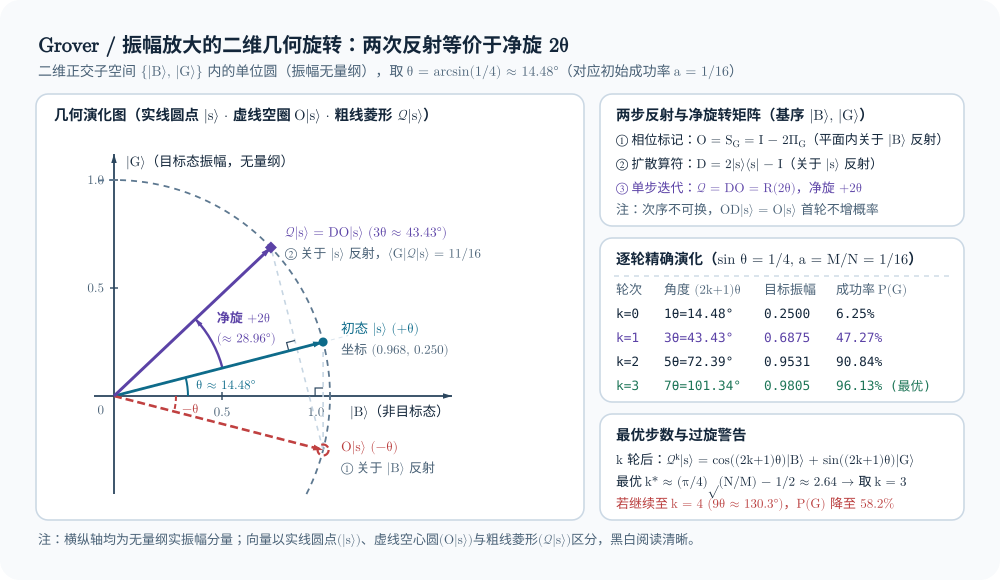
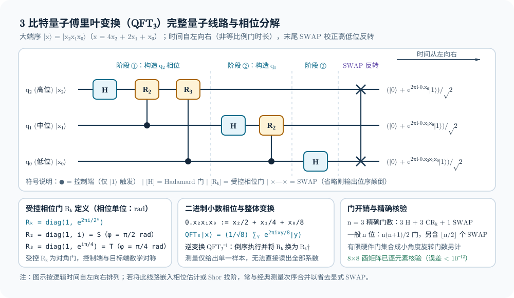

06｜量子算法的共同骨架
读完前五章，你已经掌握了单比特几何、多比特纠缠、量子门线路，以及噪声与测量的数学语言。走进算法世界前，先看清一件事：量子算法并不是一串互不相干的灵光一闪，而是用寥寥几块通用积木反复搭出来的。
不管是搜索无结构空间、分解大整数、解线性方程组，还是模拟分子演化与比对未知量子态，掀开外衣，里面反复出现的总是同一套骨架：把经典问题封装进可逆预言机、借相位回踢把答案刻进相对相位、用干涉与固定点滤波放大正确振幅、在傅里叶基里读出周期与相位、用分片乘积逼近连续演化、用单辅助位或破坏式干涉读出复内积与态重叠，以及直面相干数据装载的 QRAM 瓶颈。本章把这些积木一块一块拆开，每块都先用两到四个比特亲手算一遍，再写出一般公式、门级实现、适用边界和容易踩的坑，为第 07 章 的代表性算法铺平道路。
全章沿用本书统一约定：多比特基序采用高位在左（大端序） ，电路图从左到右表示时间，矩阵乘法从右到左作用在态矢量上；内积采用左反线性共轭 ⟨ u ∣ v ⟩ = ∑ j u j ∗ v j \langle u|v\rangle = \sum_j u_j^* v_j ⟨ u ∣ v ⟩ = ∑ j u j ∗ v j log 2 \log_2 log 2 ln \ln ln M M M Q \mathcal{Q} Q Q = 2 t Q = 2^t Q = 2 t ϵ \epsilon ϵ δ \delta δ
读懂任何量子算法前，先在纸上写清六件事
翻开一篇算法论文或一节教材时，先别急着一头扎进长公式，拿张草稿纸把下面六个问题填出来，思路立刻清楚一大半：
输入是什么 ：是经典整数、一串参数，还是已经制备好的量子态？输入承诺（promise）是什么 ：题目是否事先保证输入只来自某一类特殊函数或矩阵？（承诺是前提，不是算法自己检验出的结论；前提不成立，正确性保证通常会失效。）允许怎样访问问题 ：能调用哪种黑盒预言机（oracle），还是已知具体的门分解电路？能免费做受控版本和逆版本吗？要输出什么 ：是一个经典比特串、一个标量期望值，还是一个无法直接打印全部分量的量子态？容许什么误差 ：要求零错误精确输出，还是允许失败概率 δ \delta δ ϵ \epsilon ϵ 成本究竟在数什么 ：是黑盒查询次数、分解后的基本门数与深度，还是从输入装载到最终验算的全部开销？
尤其是第六点，很多关于“量子加速”的争论，根源都出在把三套不同的成本账本混在一起念：
举一个具体的数字感受一下。在 N = 2 20 = 1,048,576 N = 2^{20} = 1{,}048{,}576 N = 2 20 = 1 , 048 , 576 π 4 N ≈ 804 \frac{\pi}{4}\sqrt{N} \approx 804 4 π N ≈ 804 任意叠加态 相干、可逆地工作；现实中一个只能收经典请求、返回经典答案的远程数据库接口，并不自动等价于量子预言机。
下面这张拼装地图概括了本章核心原语之间的依赖脉络，以及它们如何通往下一章的代表性算法：

图 1｜量子算法核心原语之间的依赖关系与拼装路径 · 横向较长时可在图内滚动 · 打开完整图 1. 可逆预言机、相位回踢与反计算
1.1 为什么经典函数不能直接做成酉门
经典编程里，我们写一个布尔函数 f : { 0 , 1 } n → { 0 , 1 } f:\{0,1\}^n \to \{0,1\} f : { 0 , 1 } n → { 0 , 1 } 酉矩阵 （U † U = I U^\dagger U = I U † U = I
拿最简单的常值函数 f ( 0 ) = f ( 1 ) = 1 f(0) = f(1) = 1 f ( 0 ) = f ( 1 ) = 1 ∣ x ⟩ ↦ ∣ f ( x ) ⟩ |x\rangle \mapsto |f(x)\rangle ∣ x ⟩ ↦ ∣ f ( x )⟩ ∣ 0 ⟩ |0\rangle ∣0 ⟩ ∣ 1 ⟩ |1\rangle ∣1 ⟩ ∣ 1 ⟩ |1\rangle ∣1 ⟩ ⟨ 0 ∣ 1 ⟩ = 0 \langle 0|1\rangle = 0 ⟨ 0∣1 ⟩ = 0 ⟨ 1 ∣ 1 ⟩ = 1 \langle 1|1\rangle = 1 ⟨ 1∣1 ⟩ = 1
解决办法其实很朴素：别丢掉输入 x x x ∣ y ⟩ |y\rangle ∣ y ⟩ f ( x ) f(x) f ( x ) y y y 这就得到了标准的比特预言机 （bit oracle）U f U_f U f 2 n + 1 × 2 n + 1 2^{n+1} \times 2^{n+1} 2 n + 1 × 2 n + 1
U f ∣ x ⟩ ∣ y ⟩ = ∣ x ⟩ ∣ y ⊕ f ( x ) ⟩ , x ∈ { 0 , 1 } n , y ∈ { 0 , 1 } .
U_f |x\rangle |y\rangle = |x\rangle |y \oplus f(x)\rangle, \qquad x \in \{0,1\}^n,\; y \in \{0,1\}.
U f ∣ x ⟩ ∣ y ⟩ = ∣ x ⟩ ∣ y ⊕ f ( x )⟩ , x ∈ { 0 , 1 } n , y ∈ { 0 , 1 } . 其中 ⊕ \oplus ⊕ 0 0 0 1 1 1
表中最后一列立刻说明了两件事：第一，只要输入 ( x , y ) (x, y) ( x , y ) ( x , y ⊕ f ( x ) ) (x, y \oplus f(x)) ( x , y ⊕ f ( x )) U f U_f U f 2 n + 1 2^{n+1} 2 n + 1 U f U_f U f y ⊕ f ( x ) ⊕ f ( x ) = y y \oplus f(x) \oplus f(x) = y y ⊕ f ( x ) ⊕ f ( x ) = y U f 2 = I U_f^2 = I U f 2 = I U f − 1 = U f † = U f U_f^{-1} = U_f^\dagger = U_f U f − 1 = U f † = U f
拿 n = 1 n=1 n = 1 f ( 0 ) = 0 , f ( 1 ) = 1 f(0)=0,\, f(1)=1 f ( 0 ) = 0 , f ( 1 ) = 1 ∣ 00 ⟩ , ∣ 01 ⟩ , ∣ 10 ⟩ , ∣ 11 ⟩ |00\rangle, |01\rangle, |10\rangle, |11\rangle ∣00 ⟩ , ∣01 ⟩ , ∣10 ⟩ , ∣11 ⟩
U f ∣ 0 , 0 ⟩ = ∣ 0 , 0 ⊕ 0 ⟩ = ∣ 0 , 0 ⟩ , U f ∣ 0 , 1 ⟩ = ∣ 0 , 1 ⊕ 0 ⟩ = ∣ 0 , 1 ⟩ , U f ∣ 1 , 0 ⟩ = ∣ 1 , 0 ⊕ 1 ⟩ = ∣ 1 , 1 ⟩ , U f ∣ 1 , 1 ⟩ = ∣ 1 , 1 ⊕ 1 ⟩ = ∣ 1 , 0 ⟩ .
\begin{aligned}
U_f|0,0\rangle &= |0,\, 0\oplus 0\rangle = |0,0\rangle, &
U_f|0,1\rangle &= |0,\, 1\oplus 0\rangle = |0,1\rangle, \\
U_f|1,0\rangle &= |1,\, 0\oplus 1\rangle = |1,1\rangle, &
U_f|1,1\rangle &= |1,\, 1\oplus 1\rangle = |1,0\rangle.
\end{aligned}
U f ∣0 , 0 ⟩ U f ∣1 , 0 ⟩ = ∣0 , 0 ⊕ 0 ⟩ = ∣0 , 0 ⟩ , = ∣1 , 0 ⊕ 1 ⟩ = ∣1 , 1 ⟩ , U f ∣0 , 1 ⟩ U f ∣1 , 1 ⟩ = ∣0 , 1 ⊕ 0 ⟩ = ∣0 , 1 ⟩ , = ∣1 , 1 ⊕ 1 ⟩ = ∣1 , 0 ⟩ . 前两项原地不动，后两项互相交换——你一眼就能认出，这正是第 04 章 的 C N O T \mathrm{CNOT} CNOT
1.2 相位回踢：把比特预言机免费变成相位预言机
比特预言机虽然合法，但在算法里往往把函数值留在目标位上，容易和输入寄存器纠缠在一起。能不能不改输入基态本身，而是只把 f ( x ) ∈ { 0 , 1 } f(x) \in \{0,1\} f ( x ) ∈ { 0 , 1 } ( − 1 ) f ( x ) (-1)^{f(x)} ( − 1 ) f ( x )
这样的 2 n × 2 n 2^n \times 2^n 2 n × 2 n 相位预言机 （phase oracle）O f O_f O f
O f ∣ x ⟩ = ( − 1 ) f ( x ) ∣ x ⟩ .
O_f |x\rangle = (-1)^{f(x)} |x\rangle.
O f ∣ x ⟩ = ( − 1 ) f ( x ) ∣ x ⟩ . 早在第 04 章 我们已经见过相位回踢 （phase kickback）的诀窍（Cleve–Ekert–Macchiavello–Mosca, 1998）：只要把 U f U_f U f X X X − 1 -1 − 1
∣ − ⟩ = ∣ 0 ⟩ − ∣ 1 ⟩ 2
|-\rangle = \frac{|0\rangle - |1\rangle}{\sqrt{2}}
∣ − ⟩ = 2 ∣0 ⟩ − ∣1 ⟩ 上，然后对任意计算基态 ∣ x ⟩ |x\rangle ∣ x ⟩ U f U_f U f
U f ∣ x ⟩ ∣ − ⟩ = U f ∣ x ⟩ ( ∣ 0 ⟩ − ∣ 1 ⟩ 2 ) = U f ∣ x , 0 ⟩ − U f ∣ x , 1 ⟩ 2 = ∣ x , f ( x ) ⟩ − ∣ x , 1 ⊕ f ( x ) ⟩ 2 .
\begin{aligned}
U_f |x\rangle |-\rangle
&= U_f |x\rangle \left(\frac{|0\rangle - |1\rangle}{\sqrt{2}}\right) \\
&= \frac{U_f|x,0\rangle - U_f|x,1\rangle}{\sqrt{2}} \\
&= \frac{|x, f(x)\rangle - |x, 1 \oplus f(x)\rangle}{\sqrt{2}}.
\end{aligned}
U f ∣ x ⟩ ∣ − ⟩ = U f ∣ x ⟩ ( 2 ∣0 ⟩ − ∣1 ⟩ ) = 2 U f ∣ x , 0 ⟩ − U f ∣ x , 1 ⟩ = 2 ∣ x , f ( x )⟩ − ∣ x , 1 ⊕ f ( x )⟩ . 现在分两种情况看括号里的第二寄存器：
若 f ( x ) = 0 f(x) = 0 f ( x ) = 0 ∣ 0 ⟩ − ∣ 1 ⟩ 2 = ( + 1 ) ∣ − ⟩ \frac{|0\rangle - |1\rangle}{\sqrt{2}} = (+1)|-\rangle 2 ∣0 ⟩ − ∣1 ⟩ = ( + 1 ) ∣ − ⟩
若 f ( x ) = 1 f(x) = 1 f ( x ) = 1 ∣ 1 ⟩ − ∣ 0 ⟩ 2 = ( − 1 ) ∣ − ⟩ \frac{|1\rangle - |0\rangle}{\sqrt{2}} = (-1)|-\rangle 2 ∣1 ⟩ − ∣0 ⟩ = ( − 1 ) ∣ − ⟩
两种情形恰好统一写成因子 ( − 1 ) f ( x ) (-1)^{f(x)} ( − 1 ) f ( x )
U f ∣ x ⟩ ∣ − ⟩ = ( − 1 ) f ( x ) ∣ x ⟩ ∣ − ⟩ = ( O f ∣ x ⟩ ) ⊗ ∣ − ⟩ .
U_f |x\rangle |-\rangle = (-1)^{f(x)} |x\rangle |-\rangle = \bigl(O_f|x\rangle\bigr) \otimes |-\rangle.
U f ∣ x ⟩ ∣ − ⟩ = ( − 1 ) f ( x ) ∣ x ⟩ ∣ − ⟩ = ( O f ∣ x ⟩ ) ⊗ ∣ − ⟩ . 对单个基态 ∣ x ⟩ |x\rangle ∣ x ⟩ ( − 1 ) f ( x ) (-1)^{f(x)} ( − 1 ) f ( x ) ∑ x α x ∣ x ⟩ \sum_x \alpha_x |x\rangle ∑ x α x ∣ x ⟩
U f ( ∑ x α x ∣ x ⟩ ) ∣ − ⟩ = ( ∑ x ( − 1 ) f ( x ) α x ∣ x ⟩ ) ⊗ ∣ − ⟩ .
U_f \left(\sum_x \alpha_x |x\rangle\right)|-\rangle
= \left(\sum_x (-1)^{f(x)} \alpha_x |x\rangle\right) \otimes |-\rangle.
U f ( x ∑ α x ∣ x ⟩ ) ∣ − ⟩ = ( x ∑ ( − 1 ) f ( x ) α x ∣ x ⟩ ) ⊗ ∣ − ⟩ . 目标位自始至终保持 ∣ − ⟩ |-\rangle ∣ − ⟩ f ( x ) f(x) f ( x ) 相对相位 ！这不是什么“信息从目标位倒流回控制位”，而是因为 y ↦ y ⊕ 1 y \mapsto y \oplus 1 y ↦ y ⊕ 1 X X X ∣ − ⟩ |-\rangle ∣ − ⟩ X X X − 1 -1 − 1 ∣ + ⟩ = ( ∣ 0 ⟩ + ∣ 1 ⟩ ) / 2 |+\rangle = (|0\rangle + |1\rangle)/\sqrt{2} ∣ + ⟩ = ( ∣0 ⟩ + ∣1 ⟩) / 2 X ∣ + ⟩ = ( + 1 ) ∣ + ⟩ X|+\rangle = (+1)|+\rangle X ∣ + ⟩ = ( + 1 ) ∣ + ⟩ f ( x ) f(x) f ( x ) 0 0 0 1 1 1 + 1 +1 + 1
用两道具体手算把感觉坐实：
算例 1（单输入位，对比量子相干与经典混合） 。仍取 f ( 0 ) = 0 , f ( 1 ) = 1 f(0)=0,\, f(1)=1 f ( 0 ) = 0 , f ( 1 ) = 1 ∣ + ⟩ x ∣ − ⟩ y = ∣ 0 ⟩ + ∣ 1 ⟩ 2 ∣ − ⟩ y |+\rangle_x |-\rangle_y = \frac{|0\rangle + |1\rangle}{\sqrt{2}}|-\rangle_y ∣ + ⟩ x ∣ − ⟩ y = 2 ∣0 ⟩ + ∣1 ⟩ ∣ − ⟩ y U f U_f U f ∣ 0 ⟩ |0\rangle ∣0 ⟩ ( − 1 ) 0 = + 1 (-1)^0 = +1 ( − 1 ) 0 = + 1 ∣ 1 ⟩ |1\rangle ∣1 ⟩ ( − 1 ) 1 = − 1 (-1)^1 = -1 ( − 1 ) 1 = − 1
∣ 0 ⟩ − ∣ 1 ⟩ 2 ∣ − ⟩ y = ∣ − ⟩ x ∣ − ⟩ y .
\frac{|0\rangle - |1\rangle}{\sqrt{2}}|-\rangle_y = |-\rangle_x |-\rangle_y.
2 ∣0 ⟩ − ∣1 ⟩ ∣ − ⟩ y = ∣ − ⟩ x ∣ − ⟩ y . 此时对输入位施加一个 H H H H ∣ − ⟩ = ∣ 1 ⟩ H|-\rangle = |1\rangle H ∣ − ⟩ = ∣1 ⟩ 1 1 1 1 1 1 ∣ + ⟩ |+\rangle ∣ + ⟩ H H H 0 0 0 U f U_f U f f f f ρ x = 1 2 ∣ 0 ⟩ ⟨ 0 ∣ + 1 2 ∣ 1 ⟩ ⟨ 1 ∣ = I 2 \rho_x = \frac{1}{2}|0\rangle\langle 0| + \frac{1}{2}|1\rangle\langle 1| = \frac{I}{2} ρ x = 2 1 ∣0 ⟩ ⟨ 0∣ + 2 1 ∣1 ⟩ ⟨ 1∣ = 2 I ∣ 0 ⟩ |0\rangle ∣0 ⟩ ∣ 1 ⟩ |1\rangle ∣1 ⟩ + 1 +1 + 1 − 1 -1 − 1 1 2 ∣ 0 ⟩ ⟨ 0 ∣ + 1 2 ( − ∣ 1 ⟩ ) ( − ⟨ 1 ∣ ) = I 2 \frac{1}{2}|0\rangle\langle 0| + \frac{1}{2}(-|1\rangle)(-\langle 1|) = \frac{I}{2} 2 1 ∣0 ⟩ ⟨ 0∣ + 2 1 ( − ∣1 ⟩) ( − ⟨ 1∣ ) = 2 I H H H I 2 \frac{I}{2} 2 I 0 0 0 1 1 1 1 / 2 1/2 1/2 相干叠加是相位回踢生效的必要条件 。
算例 2（双输入位，三比特线路） 。取 f ( x 1 x 2 ) = x 1 ⊕ x 2 f(x_1 x_2) = x_1 \oplus x_2 f ( x 1 x 2 ) = x 1 ⊕ x 2 H ⊗ 2 ∣ 00 ⟩ = 1 2 ( ∣ 00 ⟩ + ∣ 01 ⟩ + ∣ 10 ⟩ + ∣ 11 ⟩ ) H^{\otimes 2}|00\rangle = \frac{1}{2}(|00\rangle + |01\rangle + |10\rangle + |11\rangle) H ⊗ 2 ∣00 ⟩ = 2 1 ( ∣00 ⟩ + ∣01 ⟩ + ∣10 ⟩ + ∣11 ⟩) ∣ − ⟩ y |-\rangle_y ∣ − ⟩ y 3 个量子比特 ）。逐项代入 f ( 00 ) = 0 , f ( 01 ) = 1 , f ( 10 ) = 1 , f ( 11 ) = 0 f(00)=0,\, f(01)=1,\, f(10)=1,\, f(11)=0 f ( 00 ) = 0 , f ( 01 ) = 1 , f ( 10 ) = 1 , f ( 11 ) = 0
U f ( ∣ + ⟩ x 1 ∣ + ⟩ x 2 ∣ − ⟩ y ) = 1 2 ( ∣ 00 ⟩ − ∣ 01 ⟩ − ∣ 10 ⟩ + ∣ 11 ⟩ ) ∣ − ⟩ y = ( ∣ 0 ⟩ − ∣ 1 ⟩ 2 ) x 1 ⊗ ( ∣ 0 ⟩ − ∣ 1 ⟩ 2 ) x 2 ⊗ ∣ − ⟩ y = ∣ − ⟩ x 1 ∣ − ⟩ x 2 ∣ − ⟩ y .
\begin{aligned}
U_f \bigl(|+\rangle_{x_1}|+\rangle_{x_2}|-\rangle_y\bigr)
&= \frac{1}{2}\bigl(|00\rangle - |01\rangle - |10\rangle + |11\rangle\bigr)|-\rangle_y \\
&= \left(\frac{|0\rangle - |1\rangle}{\sqrt{2}}\right)_{x_1} \otimes \left(\frac{|0\rangle - |1\rangle}{\sqrt{2}}\right)_{x_2} \otimes |-\rangle_y \\
&= |-\rangle_{x_1} |-\rangle_{x_2} |-\rangle_y.
\end{aligned}
U f ( ∣ + ⟩ x 1 ∣ + ⟩ x 2 ∣ − ⟩ y ) = 2 1 ( ∣00 ⟩ − ∣01 ⟩ − ∣10 ⟩ + ∣11 ⟩ ) ∣ − ⟩ y = ( 2 ∣0 ⟩ − ∣1 ⟩ ) x 1 ⊗ ( 2 ∣0 ⟩ − ∣1 ⟩ ) x 2 ⊗ ∣ − ⟩ y = ∣ − ⟩ x 1 ∣ − ⟩ x 2 ∣ − ⟩ y . 展开右边第一、二个因子的乘积核对一下：( ∣ 0 ⟩ − ∣ 1 ⟩ ) ( ∣ 0 ⟩ − ∣ 1 ⟩ ) / 2 = ( ∣ 00 ⟩ − ∣ 01 ⟩ − ∣ 10 ⟩ + ∣ 11 ⟩ ) / 2 (|0\rangle-|1\rangle)(|0\rangle-|1\rangle)/2 = (|00\rangle - |01\rangle - |10\rangle + |11\rangle)/2 ( ∣0 ⟩ − ∣1 ⟩) ( ∣0 ⟩ − ∣1 ⟩) /2 = ( ∣00 ⟩ − ∣01 ⟩ − ∣10 ⟩ + ∣11 ⟩) /2
双向转换的成本不对称 。上面证明了：只要手头有比特预言机 U f U_f U f ∣ − ⟩ |-\rangle ∣ − ⟩ 一次免费实现 相位预言机 O f O_f O f O f O_f O f U f U_f U f O f O_f O f U f U_f U f 受控相位预言机 c- O f \text{c-}O_f c- O f f ( x 0 ) = 0 f(x_0) = 0 f ( x 0 ) = 0 x 0 x_0 x 0 c-SWAP \text{c-SWAP} c-SWAP 0 0 0 ∣ x ⟩ |x\rangle ∣ x ⟩ ∣ x 0 ⟩ |x_0\rangle ∣ x 0 ⟩ O f O_f O f O f O_f O f c- O f \text{c-}O_f c- O f f ( x 0 ) = 1 f(x_0) = 1 f ( x 0 ) = 1 X Z X XZX XZX 0 0 0 − 1 -1 − 1 y y y
( I ⊗ H ) ( c- O f ) ( I ⊗ H ) ∣ x ⟩ ∣ y ⟩ = ∣ x ⟩ ∣ y ⊕ f ( x ) ⟩ = U f ∣ x ⟩ ∣ y ⟩ .
(I \otimes H)\,(\text{c-}O_f)\,(I \otimes H)\,|x\rangle|y\rangle = |x\rangle|y \oplus f(x)\rangle = U_f|x\rangle|y\rangle.
( I ⊗ H ) ( c- O f ) ( I ⊗ H ) ∣ x ⟩ ∣ y ⟩ = ∣ x ⟩ ∣ y ⊕ f ( x )⟩ = U f ∣ x ⟩ ∣ y ⟩ . 评判算法访问模型时，千万别把“手头只有 O f O_f O f c- O f \text{c-}O_f c- O f U f U_f U f
1.3 Bennett 反计算与垃圾位纠缠
真实的布尔函数 f ( x ) f(x) f ( x ) x 1 ⊕ x 2 x_1 \oplus x_2 x 1 ⊕ x 2 第 04 章 ），几乎不可避免地要借用一堆存放中间草稿的工作比特（workspace / ancilla）∣ 0 m ⟩ w |0^m\rangle_w ∣ 0 m ⟩ w
C f ∣ x ⟩ ∣ 0 ⟩ y ∣ 0 m ⟩ w = ∣ x ⟩ ∣ f ( x ) ⟩ y ∣ g ( x ) ⟩ w ,
C_f |x\rangle |0\rangle_y |0^m\rangle_w = |x\rangle |f(x)\rangle_y |g(x)\rangle_w,
C f ∣ x ⟩ ∣0 ⟩ y ∣ 0 m ⟩ w = ∣ x ⟩ ∣ f ( x ) ⟩ y ∣ g ( x ) ⟩ w , 其中 ∣ g ( x ) ⟩ w |g(x)\rangle_w ∣ g ( x ) ⟩ w x x x 垃圾位 （garbage）。如果输入寄存器处在叠加态 ∑ x α x ∣ x ⟩ \sum_x \alpha_x |x\rangle ∑ x α x ∣ x ⟩ ∣ g ( x ) ⟩ w |g(x)\rangle_w ∣ g ( x ) ⟩ w
Charles Bennett（1973）给出了经典与量子可逆计算的标准解法——反计算 （uncomputation），一共三步：
正向计算 ：施加 C f C_f C f ∣ g ( x ) ⟩ w |g(x)\rangle_w ∣ g ( x ) ⟩ w 提取结果 ：把计算基上的结果异或到真正的目标寄存器 ∣ y ⟩ |y\rangle ∣ y ⟩ f ( x ) f(x) f ( x ) 逆向清理 ：施加逆电路 C f † C_f^\dagger C f † C f C_f C f ∣ 0 m ⟩ w |0^m\rangle_w ∣ 0 m ⟩ w
反计算的直接代价是：基础预言机的门数与深度至少翻倍 。这就是为什么查询复杂度只记“1 次调用”，而门复杂度账本里必须把反计算单独算清。
先用一位输入 x x x w w w f ( x ) = x f(x)=x f ( x ) = x ∣ + ⟩ x ∣ 0 ⟩ w |+\rangle_x |0\rangle_w ∣ + ⟩ x ∣0 ⟩ w C N O T ( x → w ) \mathrm{CNOT}(x \to w) CNOT ( x → w )
∣ 0 ⟩ x ∣ 0 ⟩ w + ∣ 1 ⟩ x ∣ 1 ⟩ w 2 .
\frac{|0\rangle_x |0\rangle_w + |1\rangle_x |1\rangle_w}{\sqrt{2}}.
2 ∣0 ⟩ x ∣0 ⟩ w + ∣1 ⟩ x ∣1 ⟩ w .
如果不清理直接丢弃 w w w ：对工作位求偏迹，x x x ρ x = 1 2 ∣ 0 ⟩ ⟨ 0 ∣ + 1 2 ∣ 1 ⟩ ⟨ 1 ∣ = I 2 \rho_x = \frac{1}{2}|0\rangle\langle 0| + \frac{1}{2}|1\rangle\langle 1| = \frac{I}{2} ρ x = 2 1 ∣0 ⟩ ⟨ 0∣ + 2 1 ∣1 ⟩ ⟨ 1∣ = 2 I x x x H H H 0 0 0 1 1 1 1 / 2 1/2 1/2 如果做完相位再反计算 ：目标只是给 ∣ 1 ⟩ x |1\rangle_x ∣1 ⟩ x w w w Z w Z_w Z w ∣ 00 ⟩ − ∣ 11 ⟩ 2 \frac{|00\rangle - |11\rangle}{\sqrt{2}} 2 ∣00 ⟩ − ∣11 ⟩ C N O T ( x → w ) \mathrm{CNOT}(x \to w) CNOT ( x → w ) ∣ 11 ⟩ |11\rangle ∣11 ⟩ ∣ 10 ⟩ |10\rangle ∣10 ⟩
∣ 0 ⟩ x ∣ 0 ⟩ w − ∣ 1 ⟩ x ∣ 0 ⟩ w 2 = ∣ − ⟩ x ⊗ ∣ 0 ⟩ w .
\frac{|0\rangle_x |0\rangle_w - |1\rangle_x |0\rangle_w}{\sqrt{2}} = |-\rangle_x \otimes |0\rangle_w.
2 ∣0 ⟩ x ∣0 ⟩ w − ∣1 ⟩ x ∣0 ⟩ w = ∣ − ⟩ x ⊗ ∣0 ⟩ w . 此时工作位干净地回到 ∣ 0 ⟩ w |0\rangle_w ∣0 ⟩ w x x x H H H 1 1 1 1 1 1
1.4 垃圾位只泄漏部分信息时，干涉会掉多少？为什么“复位”不是“反计算”
上面是两个极端：工作位完全相同（无纠缠）或完全正交（全纠缠）。更一般地，设输入位和工作寄存器在联合纯态中为
∣ Ψ ⟩ = ∣ 0 ⟩ x ∣ g 0 ⟩ w + ∣ 1 ⟩ x ∣ g 1 ⟩ w 2 , ⟨ g 0 ∣ g 0 ⟩ = ⟨ g 1 ∣ g 1 ⟩ = 1 ,
|\Psi\rangle = \frac{|0\rangle_x |g_0\rangle_w + |1\rangle_x |g_1\rangle_w}{\sqrt{2}}, \qquad \langle g_0|g_0\rangle = \langle g_1|g_1\rangle = 1,
∣Ψ ⟩ = 2 ∣0 ⟩ x ∣ g 0 ⟩ w + ∣1 ⟩ x ∣ g 1 ⟩ w , ⟨ g 0 ∣ g 0 ⟩ = ⟨ g 1 ∣ g 1 ⟩ = 1 , 其中 ∣ g 0 ⟩ w , ∣ g 1 ⟩ w |g_0\rangle_w, |g_1\rangle_w ∣ g 0 ⟩ w , ∣ g 1 ⟩ w 第 05 章 的偏迹公式展开外积 ∣ Ψ ⟩ ⟨ Ψ ∣ |\Psi\rangle\langle\Psi| ∣Ψ ⟩ ⟨ Ψ∣ w w w Tr w ( ∣ g a ⟩ ⟨ g b ∣ ) = ⟨ g b ∣ g a ⟩ \operatorname{Tr}_w(|g_a\rangle\langle g_b|) = \langle g_b|g_a\rangle Tr w ( ∣ g a ⟩ ⟨ g b ∣ ) = ⟨ g b ∣ g a ⟩
ρ x = Tr w ( ∣ Ψ ⟩ ⟨ Ψ ∣ ) = 1 2 ( ∣ 0 ⟩ ⟨ 0 ∣ ⟨ g 0 ∣ g 0 ⟩ + ∣ 0 ⟩ ⟨ 1 ∣ ⟨ g 1 ∣ g 0 ⟩ + ∣ 1 ⟩ ⟨ 0 ∣ ⟨ g 0 ∣ g 1 ⟩ + ∣ 1 ⟩ ⟨ 1 ∣ ⟨ g 1 ∣ g 1 ⟩ ) = 1 2 [ 1 c c ∗ 1 ] , c : = ⟨ g 1 ∣ g 0 ⟩ .
\begin{aligned}
\rho_x
&= \operatorname{Tr}_w(|\Psi\rangle\langle\Psi|) \\
&= \frac{1}{2}\Bigl(
|0\rangle\langle 0|\,\langle g_0|g_0\rangle
+ |0\rangle\langle 1|\,\langle g_1|g_0\rangle
+ |1\rangle\langle 0|\,\langle g_0|g_1\rangle
+ |1\rangle\langle 1|\,\langle g_1|g_1\rangle
\Bigr) \\
&= \frac{1}{2}\begin{bmatrix} 1 & c \\ c^* & 1 \end{bmatrix}, \qquad c := \langle g_1|g_0\rangle.
\end{aligned}
ρ x = Tr w ( ∣Ψ ⟩ ⟨ Ψ∣ ) = 2 1 ( ∣0 ⟩ ⟨ 0∣ ⟨ g 0 ∣ g 0 ⟩ + ∣0 ⟩ ⟨ 1∣ ⟨ g 1 ∣ g 0 ⟩ + ∣1 ⟩ ⟨ 0∣ ⟨ g 0 ∣ g 1 ⟩ + ∣1 ⟩ ⟨ 1∣ ⟨ g 1 ∣ g 1 ⟩ ) = 2 1 [ 1 c ∗ c 1 ] , c := ⟨ g 1 ∣ g 0 ⟩ . 决定相干性还剩多少的，不是“垃圾寄存器占了几个比特”，而是两条分支的垃圾态内积 c = ⟨ g 1 ∣ g 0 ⟩ c = \langle g_1|g_0\rangle c = ⟨ g 1 ∣ g 0 ⟩ H H H 0 0 0 ∣ + ⟩ = 1 2 [ 1 , 1 ] T |+\rangle = \frac{1}{\sqrt{2}}[1,1]^T ∣ + ⟩ = 2 1 [ 1 , 1 ] T
p 0 = ⟨ + ∣ ρ x ∣ + ⟩ = 1 2 [ 1 1 ] ( 1 2 [ 1 c c ∗ 1 ] ) [ 1 1 ] = 1 4 [ 1 1 ] [ 1 + c c ∗ + 1 ] = 2 + c + c ∗ 4 = 1 + Re c 2 .
\begin{aligned}
p_0 = \langle +|\rho_x|+\rangle
&= \frac{1}{2}\begin{bmatrix} 1 & 1 \end{bmatrix}
\left(\frac{1}{2}\begin{bmatrix} 1 & c \\ c^* & 1 \end{bmatrix}\right)
\begin{bmatrix} 1 \\ 1 \end{bmatrix} \\
&= \frac{1}{4}\begin{bmatrix} 1 & 1 \end{bmatrix}\begin{bmatrix} 1+c \\ c^*+1 \end{bmatrix}
= \frac{2 + c + c^*}{4} = \frac{1 + \operatorname{Re} c}{2}.
\end{aligned}
p 0 = ⟨ + ∣ ρ x ∣ + ⟩ = 2 1 [ 1 1 ] ( 2 1 [ 1 c ∗ c 1 ] ) [ 1 1 ] = 4 1 [ 1 1 ] [ 1 + c c ∗ + 1 ] = 4 2 + c + c ∗ = 2 1 + Re c . 检验三个关键边界：c = 1 c = 1 c = 1 p 0 = 1 p_0 = 1 p 0 = 1 c = 0 c = 0 c = 0 p 0 = 1 / 2 p_0 = 1/2 p 0 = 1/2 c = i c = i c = i p 0 = ( 1 + 0 ) / 2 = 1 / 2 p_0 = (1 + 0)/2 = 1/2 p 0 = ( 1 + 0 ) /2 = 1/2 ∣ c ∣ = 1 |c| = 1 ∣ c ∣ = 1 ρ x \rho_x ρ x π / 2 \pi/2 π /2 X X X 1 / 2 1/2 1/2
下面用一道具体算例戳破初学者最常见的错觉——“把工作比特直接 reset（复位）成 ∣ 0 ⟩ |0\rangle ∣0 ⟩
反例手算（部分重叠垃圾态，证伪“复位 = 反计算”） 。取 ∣ g 0 ⟩ = ∣ 0 ⟩ |g_0\rangle = |0\rangle ∣ g 0 ⟩ = ∣0 ⟩ ∣ g 1 ⟩ = 3 5 ∣ 0 ⟩ + 4 5 ∣ 1 ⟩ |g_1\rangle = \frac{3}{5}|0\rangle + \frac{4}{5}|1\rangle ∣ g 1 ⟩ = 5 3 ∣0 ⟩ + 5 4 ∣1 ⟩ ( 3 / 5 ) 2 + ( 4 / 5 ) 2 = 9 + 16 25 = 1 (3/5)^2 + (4/5)^2 = \frac{9+16}{25} = 1 ( 3/5 ) 2 + ( 4/5 ) 2 = 25 9 + 16 = 1
算内积与密度矩阵 ：按左反线性内积
c = ⟨ g 1 ∣ g 0 ⟩ = 3 5 ⋅ 1 + 4 5 ⋅ 0 = 3 5 , ρ x = 1 2 [ 1 3 / 5 3 / 5 1 ] = [ 1 / 2 3 / 10 3 / 10 1 / 2 ] .
c = \langle g_1|g_0\rangle = \frac{3}{5}\cdot 1 + \frac{4}{5}\cdot 0 = \frac{3}{5}, \qquad
\rho_x = \frac{1}{2}\begin{bmatrix} 1 & 3/5 \\ 3/5 & 1 \end{bmatrix}
= \begin{bmatrix} 1/2 & 3/10 \\ 3/10 & 1/2 \end{bmatrix}.
c = ⟨ g 1 ∣ g 0 ⟩ = 5 3 ⋅ 1 + 5 4 ⋅ 0 = 5 3 , ρ x = 2 1 [ 1 3/5 3/5 1 ] = [ 1/2 3/10 3/10 1/2 ] . 核对 Tr ( ρ x ) = 1 / 2 + 1 / 2 = 1 \operatorname{Tr}(\rho_x) = 1/2 + 1/2 = 1 Tr ( ρ x ) = 1/2 + 1/2 = 1
算纯度 Tr ( ρ x 2 ) \operatorname{Tr}(\rho_x^2) Tr ( ρ x 2 ) ：先把 ρ x \rho_x ρ x
ρ x 2 = [ 1 / 2 3 / 10 3 / 10 1 / 2 ] [ 1 / 2 3 / 10 3 / 10 1 / 2 ] = [ 1 / 4 + 9 / 100 3 / 20 + 3 / 20 3 / 20 + 3 / 20 9 / 100 + 1 / 4 ] = [ 34 / 100 3 / 10 3 / 10 34 / 100 ] .
\rho_x^2 = \begin{bmatrix} 1/2 & 3/10 \\ 3/10 & 1/2 \end{bmatrix}
\begin{bmatrix} 1/2 & 3/10 \\ 3/10 & 1/2 \end{bmatrix}
= \begin{bmatrix} 1/4 + 9/100 & 3/20 + 3/20 \\ 3/20 + 3/20 & 9/100 + 1/4 \end{bmatrix}
= \begin{bmatrix} 34/100 & 3/10 \\ 3/10 & 34/100 \end{bmatrix}.
ρ x 2 = [ 1/2 3/10 3/10 1/2 ] [ 1/2 3/10 3/10 1/2 ] = [ 1/4 + 9/100 3/20 + 3/20 3/20 + 3/20 9/100 + 1/4 ] = [ 34/100 3/10 3/10 34/100 ] . 取迹得 Tr ( ρ x 2 ) = 68 100 = 17 25 = 0.68 < 1 \operatorname{Tr}(\rho_x^2) = \frac{68}{100} = \frac{17}{25} = 0.68 < 1 Tr ( ρ x 2 ) = 100 68 = 25 17 = 0.68 < 1
算干涉概率 ：p 0 = 1 + 3 / 5 2 = 4 5 = 0.80 p_0 = \frac{1 + 3/5}{2} = \frac{4}{5} = 0.80 p 0 = 2 1 + 3/5 = 5 4 = 0.80 1 1 1
若不做反计算，而是对 w w w ∣ 0 ⟩ |0\rangle ∣0 ⟩ ：按第 05 章 的局域信道性质，复位信道 R w ( σ ) = Tr ( σ ) ∣ 0 ⟩ ⟨ 0 ∣ \mathcal{R}_w(\sigma) = \operatorname{Tr}(\sigma)|0\rangle\langle 0| R w ( σ ) = Tr ( σ ) ∣0 ⟩ ⟨ 0∣ w w w ρ x w = ∣ Ψ ⟩ ⟨ Ψ ∣ \rho_{xw} = |\Psi\rangle\langle\Psi| ρ x w = ∣Ψ ⟩ ⟨ Ψ∣ I x ⊗ R w \mathcal{I}_x \otimes \mathcal{R}_w I x ⊗ R w
( I x ⊗ R w ) ( ∣ Ψ ⟩ ⟨ Ψ ∣ ) = Tr w ( ∣ Ψ ⟩ ⟨ Ψ ∣ ) ⊗ ∣ 0 ⟩ ⟨ 0 ∣ = ρ x ⊗ ∣ 0 ⟩ ⟨ 0 ∣ .
(\mathcal{I}_x \otimes \mathcal{R}_w)(|\Psi\rangle\langle\Psi|) = \operatorname{Tr}_w(|\Psi\rangle\langle\Psi|) \otimes |0\rangle\langle 0| = \rho_x \otimes |0\rangle\langle 0|.
( I x ⊗ R w ) ( ∣Ψ ⟩ ⟨ Ψ∣ ) = Tr w ( ∣Ψ ⟩ ⟨ Ψ∣ ) ⊗ ∣0 ⟩ ⟨ 0∣ = ρ x ⊗ ∣0 ⟩ ⟨ 0∣. 工作位表面上确实回到了干干净净的 ∣ 0 ⟩ |0\rangle ∣0 ⟩ 纹丝未动 ，仍是 ρ x \rho_x ρ x p 0 = 4 / 5 p_0 = 4/5 p 0 = 4/5 p 0 p_0 p 0 1 1 1 C f † C_f^\dagger C f †
2. Deutsch–Jozsa：量子干涉的最小完整示范
手里有了相位预言机，我们来搭第一台完整的小机器：Deutsch–Jozsa 算法 （Deutsch & Jozsa, 1992；Cleve et al., 1998 简化版）。
2.1 问题、承诺与一步不跳的推导
输入与访问 ：黑盒比特预言机 U f U_f U f f : { 0 , 1 } n → { 0 , 1 } f:\{0,1\}^n \to \{0,1\} f : { 0 , 1 } n → { 0 , 1 } 承诺 ：f f f 恒定函数 （对全部 2 n 2^n 2 n 0 0 0 1 1 1 平衡函数 （恰有一半即 2 n − 1 2^{n-1} 2 n − 1 0 0 0 1 1 1 任务 ：判断 f f f
先把一个在整个算法篇都会反复用到的恒等式推一遍：n n n H ⊗ n H^{\otimes n} H ⊗ n ∣ x ⟩ = ∣ x 1 x 2 ⋯ x n ⟩ |x\rangle = |x_1 x_2 \cdots x_n\rangle ∣ x ⟩ = ∣ x 1 x 2 ⋯ x n ⟩
单比特上，H ∣ 0 ⟩ = ∣ 0 ⟩ + ∣ 1 ⟩ 2 H|0\rangle = \frac{|0\rangle + |1\rangle}{\sqrt{2}} H ∣0 ⟩ = 2 ∣0 ⟩ + ∣1 ⟩ H ∣ 1 ⟩ = ∣ 0 ⟩ − ∣ 1 ⟩ 2 H|1\rangle = \frac{|0\rangle - |1\rangle}{\sqrt{2}} H ∣1 ⟩ = 2 ∣0 ⟩ − ∣1 ⟩
H ∣ x j ⟩ = 1 2 ∑ y j ∈ { 0 , 1 } ( − 1 ) x j y j ∣ y j ⟩ .
H|x_j\rangle = \frac{1}{\sqrt{2}}\sum_{y_j \in \{0,1\}} (-1)^{x_j y_j} |y_j\rangle.
H ∣ x j ⟩ = 2 1 y j ∈ { 0 , 1 } ∑ ( − 1 ) x j y j ∣ y j ⟩ . 把 n n n y j ∈ { 0 , 1 } y_j \in \{0,1\} y j ∈ { 0 , 1 } ( − 1 ) x 1 y 1 ⋯ ( − 1 ) x n y n = ( − 1 ) x ⋅ y (-1)^{x_1 y_1} \cdots (-1)^{x_n y_n} = (-1)^{x \cdot y} ( − 1 ) x 1 y 1 ⋯ ( − 1 ) x n y n = ( − 1 ) x ⋅ y x ⋅ y : = x 1 y 1 + ⋯ + x n y n ( m o d 2 ) x \cdot y := x_1 y_1 + \cdots + x_n y_n \pmod 2 x ⋅ y := x 1 y 1 + ⋯ + x n y n ( mod 2 ) 模 2 点积 ：
H ⊗ n ∣ x ⟩ = 1 2 n ∑ y ∈ { 0 , 1 } n ( − 1 ) x ⋅ y ∣ y ⟩ .
H^{\otimes n}|x\rangle = \frac{1}{\sqrt{2^n}} \sum_{y \in \{0,1\}^n} (-1)^{x \cdot y} |y\rangle.
H ⊗ n ∣ x ⟩ = 2 n 1 y ∈ { 0 , 1 } n ∑ ( − 1 ) x ⋅ y ∣ y ⟩ . 例如取 x = 10 , y = 11 x = 10,\, y = 11 x = 10 , y = 11 x ⋅ y = 1 ⋅ 1 + 0 ⋅ 1 = 1 x \cdot y = 1\cdot 1 + 0\cdot 1 = 1 x ⋅ y = 1 ⋅ 1 + 0 ⋅ 1 = 1 ∣ 11 ⟩ |11\rangle ∣11 ⟩ ( − 1 ) 1 = − 1 (-1)^1 = -1 ( − 1 ) 1 = − 1
现在按四步走完 Deutsch–Jozsa 线路（共 n + 1 n+1 n + 1 ∣ 0 n ⟩ ∣ 1 ⟩ |0^n\rangle |1\rangle ∣ 0 n ⟩ ∣1 ⟩
全员施加 Hadamard 门 H ⊗ n ⊗ H H^{\otimes n} \otimes H H ⊗ n ⊗ H n n n 2 n 2^n 2 n ∣ 1 ⟩ |1\rangle ∣1 ⟩ ∣ − ⟩ |-\rangle ∣ − ⟩
∣ ψ 1 ⟩ = 1 2 n ∑ x ∈ { 0 , 1 } n ∣ x ⟩ ∣ − ⟩ .
|\psi_1\rangle = \frac{1}{\sqrt{2^n}} \sum_{x \in \{0,1\}^n} |x\rangle |-\rangle.
∣ ψ 1 ⟩ = 2 n 1 x ∈ { 0 , 1 } n ∑ ∣ x ⟩ ∣ − ⟩ . 调用一次预言机 U f U_f U f ：由相位回踢，每个 ∣ x ⟩ |x\rangle ∣ x ⟩ ( − 1 ) f ( x ) (-1)^{f(x)} ( − 1 ) f ( x )
∣ ψ 2 ⟩ = 1 2 n ∑ x ∈ { 0 , 1 } n ( − 1 ) f ( x ) ∣ x ⟩ ∣ − ⟩ .
|\psi_2\rangle = \frac{1}{\sqrt{2^n}} \sum_{x \in \{0,1\}^n} (-1)^{f(x)} |x\rangle |-\rangle.
∣ ψ 2 ⟩ = 2 n 1 x ∈ { 0 , 1 } n ∑ ( − 1 ) f ( x ) ∣ x ⟩ ∣ − ⟩ . 对输入寄存器再施加 H ⊗ n H^{\otimes n} H ⊗ n ：把上面的 H ⊗ n ∣ x ⟩ H^{\otimes n}|x\rangle H ⊗ n ∣ x ⟩
∣ ψ 3 ⟩ = 1 2 n ∑ x ∈ { 0 , 1 } n ( − 1 ) f ( x ) ( 1 2 n ∑ y ∈ { 0 , 1 } n ( − 1 ) x ⋅ y ∣ y ⟩ ) ∣ − ⟩ = ∑ y ∈ { 0 , 1 } n ( 1 2 n ∑ x ∈ { 0 , 1 } n ( − 1 ) f ( x ) + x ⋅ y ) ⏟ A ( y ) ∣ y ⟩ ∣ − ⟩ .
\begin{aligned}
|\psi_3\rangle
&= \frac{1}{\sqrt{2^n}} \sum_{x \in \{0,1\}^n} (-1)^{f(x)} \left(\frac{1}{\sqrt{2^n}} \sum_{y \in \{0,1\}^n} (-1)^{x \cdot y} |y\rangle\right) |-\rangle \\
&= \sum_{y \in \{0,1\}^n} \underbrace{\left(\frac{1}{2^n} \sum_{x \in \{0,1\}^n} (-1)^{f(x) + x \cdot y}\right)}_{A(y)} |y\rangle |-\rangle.
\end{aligned}
∣ ψ 3 ⟩ = 2 n 1 x ∈ { 0 , 1 } n ∑ ( − 1 ) f ( x ) 2 n 1 y ∈ { 0 , 1 } n ∑ ( − 1 ) x ⋅ y ∣ y ⟩ ∣ − ⟩ = y ∈ { 0 , 1 } n ∑ A ( y ) 2 n 1 x ∈ { 0 , 1 } n ∑ ( − 1 ) f ( x ) + x ⋅ y ∣ y ⟩ ∣ − ⟩ . 在计算基测量前 n n n ：紧盯全零串 y = 0 n y = 0^n y = 0 n A ( 0 n ) A(0^n) A ( 0 n ) x ⋅ 0 n = 0 x \cdot 0^n = 0 x ⋅ 0 n = 0
A ( 0 n ) = 1 2 n ∑ x ∈ { 0 , 1 } n ( − 1 ) f ( x ) .
A(0^n) = \frac{1}{2^n} \sum_{x \in \{0,1\}^n} (-1)^{f(x)}.
A ( 0 n ) = 2 n 1 x ∈ { 0 , 1 } n ∑ ( − 1 ) f ( x ) .
按 Born 规则，测得全零串 0 n 0^n 0 n ∣ A ( 0 n ) ∣ 2 |A(0^n)|^2 ∣ A ( 0 n ) ∣ 2
若 f f f ：所有 2 n 2^n 2 n + 1 +1 + 1 − 1 -1 − 1 A ( 0 n ) = ± 1 A(0^n) = \pm 1 A ( 0 n ) = ± 1 P ( 0 n ) = ∣ ± 1 ∣ 2 = 1 P(0^n) = |\pm 1|^2 = 1 P ( 0 n ) = ∣ ± 1 ∣ 2 = 1 必定测得 0 n 0^n 0 n ；若 f f f ：恰好一半项是 + 1 +1 + 1 − 1 -1 − 1 A ( 0 n ) = 0 A(0^n) = 0 A ( 0 n ) = 0 P ( 0 n ) = ∣ 0 ∣ 2 = 0 P(0^n) = |0|^2 = 0 P ( 0 n ) = ∣0 ∣ 2 = 0 绝不会测得 0 n 0^n 0 n 。
于是，只要在计算基测一次输入寄存器：看到 00...0 就判“恒定”，看到任何非零串就判“平衡”，只用 1 次量子查询便零错误完成任务 。请注意，量子计算机并没有“一次算出并读出了全部 2 n 2^n 2 n 2 n 2^n 2 n 0 n 0^n 0 n
2.2 n = 2 n = 2 n = 2
取平衡函数 f ( x 1 x 2 ) = x 1 f(x_1 x_2) = x_1 f ( x 1 x 2 ) = x 1 f ( 00 ) = f ( 01 ) = 0 f(00)=f(01)=0 f ( 00 ) = f ( 01 ) = 0 f ( 10 ) = f ( 11 ) = 1 f(10)=f(11)=1 f ( 10 ) = f ( 11 ) = 1 U f U_f U f
1 2 ( ∣ 00 ⟩ + ∣ 01 ⟩ − ∣ 10 ⟩ − ∣ 11 ⟩ ) = ( ∣ 0 ⟩ − ∣ 1 ⟩ 2 ) ⊗ ( ∣ 0 ⟩ + ∣ 1 ⟩ 2 ) = ∣ − ⟩ ∣ + ⟩ .
\frac{1}{2}\bigl(|00\rangle + |01\rangle - |10\rangle - |11\rangle\bigr)
= \left(\frac{|0\rangle - |1\rangle}{\sqrt{2}}\right) \otimes \left(\frac{|0\rangle + |1\rangle}{\sqrt{2}}\right)
= |-\rangle |+\rangle.
2 1 ( ∣00 ⟩ + ∣01 ⟩ − ∣10 ⟩ − ∣11 ⟩ ) = ( 2 ∣0 ⟩ − ∣1 ⟩ ) ⊗ ( 2 ∣0 ⟩ + ∣1 ⟩ ) = ∣ − ⟩ ∣ + ⟩ . 末层施加 H ⊗ H H \otimes H H ⊗ H H ∣ − ⟩ = ∣ 1 ⟩ H|-\rangle = |1\rangle H ∣ − ⟩ = ∣1 ⟩ H ∣ + ⟩ = ∣ 0 ⟩ H|+\rangle = |0\rangle H ∣ + ⟩ = ∣0 ⟩ ∣ 10 ⟩ |10\rangle ∣10 ⟩ ∣ 00 ⟩ |00\rangle ∣00 ⟩ ∣ 01 ⟩ |01\rangle ∣01 ⟩ ∣ 11 ⟩ |11\rangle ∣11 ⟩ ∣ 00 ⟩ |00\rangle ∣00 ⟩ 0 0 0
2.3 准确评估 Deutsch–Jozsa 的优势边界
Deutsch–Jozsa 的历史价值在于首次以最清晰的线路展示了量子干涉，但评价它的“加速”必须盯紧经典对比口径：
对照确定性、零错误经典算法 ：在最坏情况下，经典算法连续查了 2 n − 1 2^{n-1} 2 n − 1 0 0 0 2 n − 1 + 1 2^{n-1} + 1 2 n − 1 + 1 1 1 1 精确确定性查询模型下的指数分离 。对照允许微小失败概率 δ \delta δ ：经典计算机随机抽取 k k k k k k
有放回独立抽样 k k k ：全得 0 0 0 ( 1 / 2 ) k (1/2)^k ( 1/2 ) k 1 1 1 ( 1 / 2 ) k (1/2)^k ( 1/2 ) k 精确等于 2 ⋅ 2 − k = 2 1 − k 2 \cdot 2^{-k} = 2^{1-k} 2 ⋅ 2 − k = 2 1 − k 无放回抽取 k k k ：误判率为 2 ( 2 n − 1 k ) / ( 2 n k ) ≤ 2 1 − k 2\binom{2^{n-1}}{k} / \binom{2^n}{k} \le 2^{1-k} 2 ( k 2 n − 1 ) / ( k 2 n ) ≤ 2 1 − k k ≥ 2 k \ge 2 k ≥ 2 2 1 − k 2^{1-k} 2 1 − k k > 2 n − 1 k > 2^{n-1} k > 2 n − 1 0 0 0 k = 11 k = 11 k = 11 ≤ 1 / 1024 < 0.1 % \le 1/1024 < 0.1\% ≤ 1/1024 < 0.1% δ \delta δ O ( log 2 ( 1 / δ ) ) O(\log_2(1/\delta)) O ( log 2 ( 1/ δ )) 与比特数 n n n ！
因此，不能把 Deutsch–Jozsa 笼统宣传成“相对经典计算机的指数加速”；它只给出确定性零错误查询模型里的指数分离，相对随机经典算法并无指数优势。
3. Bernstein–Vazirani：一次查询读出隐藏线性结构
Deutsch–Jozsa 只回答了一个“是或否”的 1 比特问题。有没有可能用同样的一条线路、同样只查 1 次预言机 ，直接把一整串 n n n Bernstein–Vazirani 算法 （Bernstein & Vazirani, 1993 / 1997）把这件事做到了。
3.1 问题、推导与配对相消证明
令人愉悦的是，电路和 Deutsch–Jozsa 一模一样 ，连一个门都不用改！把 f s ( x ) = s ⋅ x f_s(x) = s \cdot x f s ( x ) = s ⋅ x s ⋅ x + x ⋅ y ≡ ( s ⊕ y ) ⋅ x ( m o d 2 ) s \cdot x + x \cdot y \equiv (s \oplus y) \cdot x \pmod 2 s ⋅ x + x ⋅ y ≡ ( s ⊕ y ) ⋅ x ( mod 2 )
A ( y ) = 1 2 n ∑ x ∈ { 0 , 1 } n ( − 1 ) ( s ⊕ y ) ⋅ x .
A(y) = \frac{1}{2^n} \sum_{x \in \{0,1\}^n} (-1)^{(s \oplus y) \cdot x}.
A ( y ) = 2 n 1 x ∈ { 0 , 1 } n ∑ ( − 1 ) ( s ⊕ y ) ⋅ x . 让我们一步不跳地证明这个求和在 y = s y = s y = s 1 1 1 y ≠ s y \neq s y = s
当 y = s y = s y = s ：s ⊕ y = 0 n s \oplus y = 0^n s ⊕ y = 0 n x x x ( s ⊕ y ) ⋅ x = 0 (s \oplus y) \cdot x = 0 ( s ⊕ y ) ⋅ x = 0 2 n 2^n 2 n ( − 1 ) 0 = + 1 (-1)^0 = +1 ( − 1 ) 0 = + 1 2 n / 2 n = 1 2^n / 2^n = 1 2 n / 2 n = 1
当 y ≠ s y \neq s y = s ：记 d = s ⊕ y ≠ 0 n d = s \oplus y \neq 0^n d = s ⊕ y = 0 n d d d j j j d j = 1 d_j = 1 d j = 1 2 n 2^n 2 n j j j 0 0 0 1 1 1 ( x , x ′ ) (x, x') ( x , x ′ ) j j j
d ⋅ x ′ = d ⋅ x ⊕ d j = d ⋅ x ⊕ 1.
d \cdot x' = d \cdot x \oplus d_j = d \cdot x \oplus 1.
d ⋅ x ′ = d ⋅ x ⊕ d j = d ⋅ x ⊕ 1. 这意味着每一对里的两项 ( − 1 ) d ⋅ x (-1)^{d \cdot x} ( − 1 ) d ⋅ x ( − 1 ) d ⋅ x ′ (-1)^{d \cdot x'} ( − 1 ) d ⋅ x ′ 0 0 0 2 n − 1 2^{n-1} 2 n − 1 A ( y ) = 0 A(y) = 0 A ( y ) = 0
合起来看，末态精确坍缩成单一计算基态 ∣ s ⟩ |s\rangle ∣ s ⟩ 1 1 1 s s s
3.2 三输入位（四比特线路）具体电路与手算对照
光看抽象黑盒容易浮在半空，我们亲手用基本门搭出三个 3 输入位的可逆预言机来对照检验。沿用高位在左大端序，寄存器排列为 ( x 1 , x 2 , x 3 , y ) (x_1, x_2, x_3, y) ( x 1 , x 2 , x 3 , y ) 4 个量子比特 （y y y ∣ − ⟩ |-\rangle ∣ − ⟩
仔细核对最后一行 s = 101 s = 101 s = 101 C N O T ( x 1 → y ) \mathrm{CNOT}(x_1 \to y) CNOT ( x 1 → y ) ∣ − ⟩ y |-\rangle_y ∣ − ⟩ y x 1 x_1 x 1 ( − 1 ) x 1 (-1)^{x_1} ( − 1 ) x 1 C N O T ( x 3 → y ) \mathrm{CNOT}(x_3 \to y) CNOT ( x 3 → y ) ( − 1 ) x 3 (-1)^{x_3} ( − 1 ) x 3 ( − 1 ) x 1 + x 3 = ( − 1 ) x 1 ⊕ x 3 (-1)^{x_1 + x_3} = (-1)^{x_1 \oplus x_3} ( − 1 ) x 1 + x 3 = ( − 1 ) x 1 ⊕ x 3
1 8 ∑ x ∈ { 0 , 1 } 3 ( − 1 ) x 1 + x 3 ∣ x 1 x 2 x 3 ⟩ = ∣ − ⟩ x 1 ∣ + ⟩ x 2 ∣ − ⟩ x 3 = H ⊗ 3 ∣ 101 ⟩ .
\frac{1}{\sqrt{8}} \sum_{x \in \{0,1\}^3} (-1)^{x_1 + x_3} |x_1 x_2 x_3\rangle
= |-\rangle_{x_1} |+\rangle_{x_2} |-\rangle_{x_3}
= H^{\otimes 3} |101\rangle.
8 1 x ∈ { 0 , 1 } 3 ∑ ( − 1 ) x 1 + x 3 ∣ x 1 x 2 x 3 ⟩ = ∣ − ⟩ x 1 ∣ + ⟩ x 2 ∣ − ⟩ x 3 = H ⊗ 3 ∣101 ⟩ . 末层再作用 H ⊗ 3 H^{\otimes 3} H ⊗ 3 H 2 = I H^2 = I H 2 = I ∣ 101 ⟩ |101\rangle ∣101 ⟩ y y y ∣ − ⟩ |-\rangle ∣ − ⟩
回过头对照章首的三套账本，这道小例子敲响两记警钟：第一，线路明明用了 4 个比特 ，且第三行内部包含 2 个 CNOT 门 ，在查询模型里仍统称为“1 次查询”；第二，这三行电路看起来轻巧，仅仅是因为线性异或函数天生结构极简，绝不代表任意未知布尔函数都能用这么便宜的门数实现 。
3.3 经典对比与历史意义
在经典查询模型里（哪怕允许随机化），每次查询只返回 1 个比特信息，想要确定未知的 n n n s s s n n n n n n 10 ⋯ 0 , … , 0 ⋯ 01 10\cdots0, \dots, 0\cdots01 10 ⋯ 0 , … , 0 ⋯ 01 n n n 线性查询加速 （n n n 递归傅里叶采样 （Recursive Fourier Sampling），在历史上第一次相对预言机给出了量子算法超越随机经典算法的超多项式（n log 2 n n^{\log_2 n} n l o g 2 n
4. 振幅放大：几何旋转、门分解与固定点改进
前面的两个例子都依赖极强的结构承诺。如果手头只有一个普通的无测量量子子程序 A A A ∣ ψ ⟩ = A ∣ 0 n ⟩ |\psi\rangle = A|0^n\rangle ∣ ψ ⟩ = A ∣ 0 n ⟩ a ∈ ( 0 , 1 ) a \in (0,1) a ∈ ( 0 , 1 )
经典的做法最直接：独立重跑 A A A 1 / a 1/a 1/ a a = 1 / 10,000 a = 1/10{,}000 a = 1/10 , 000 量子振幅放大 （Quantum Amplitude Amplification）：只要能可逆地标记“好答案”，且允许调用 A A A A † A^\dagger A † O ( 1 / a ) O(1/\sqrt{a}) O ( 1/ a ) 1 1 1
4.1 把高维空间锁进一张二维平面
假设有一个可逆的答案检查规则 g ( x ) ∈ { 0 , 1 } g(x) \in \{0,1\} g ( x ) ∈ { 0 , 1 } g ( x ) = 1 g(x)=1 g ( x ) = 1 ∣ ψ ⟩ = A ∣ 0 n ⟩ |\psi\rangle = A|0^n\rangle ∣ ψ ⟩ = A ∣ 0 n ⟩
∣ ψ ⟩ = A ∣ 0 n ⟩ = ∣ ψ b a d ⟩ + ∣ ψ g o o d ⟩ .
|\psi\rangle = A|0^n\rangle = |\psi_{\mathrm{bad}}\rangle + |\psi_{\mathrm{good}}\rangle.
∣ ψ ⟩ = A ∣ 0 n ⟩ = ∣ ψ bad ⟩ + ∣ ψ good ⟩ . 只要 0 < a < 1 0 < a < 1 0 < a < 1 a = 0 a=0 a = 0 a = 1 a=1 a = 1 正交归一 的向量：
∣ B ⟩ : = ∣ ψ b a d ⟩ 1 − a , ∣ G ⟩ : = ∣ ψ g o o d ⟩ a , ⟨ B ∣ G ⟩ = 0.
|B\rangle := \frac{|\psi_{\mathrm{bad}}\rangle}{\sqrt{1-a}}, \qquad
|G\rangle := \frac{|\psi_{\mathrm{good}}\rangle}{\sqrt{a}}, \qquad
\langle B|G\rangle = 0.
∣ B ⟩ := 1 − a ∣ ψ bad ⟩ , ∣ G ⟩ := a ∣ ψ good ⟩ , ⟨ B ∣ G ⟩ = 0. 于是，无论原本的希尔伯特空间是 2 20 2^{20} 2 20 2 100 2^{100} 2 100 二维实平面 里。引入角度 θ a ∈ ( 0 , π / 2 ) \theta_a \in (0, \pi/2) θ a ∈ ( 0 , π /2 ) sin 2 θ a = a \sin^2\theta_a = a sin 2 θ a = a sin θ a = a , cos θ a = 1 − a \sin\theta_a = \sqrt{a},\; \cos\theta_a = \sqrt{1-a} sin θ a = a , cos θ a = 1 − a
∣ ψ ⟩ = A ∣ 0 n ⟩ = cos θ a ∣ B ⟩ + sin θ a ∣ G ⟩ .
|\psi\rangle = A|0^n\rangle = \cos\theta_a\,|B\rangle + \sin\theta_a\,|G\rangle.
∣ ψ ⟩ = A ∣ 0 n ⟩ = cos θ a ∣ B ⟩ + sin θ a ∣ G ⟩ . 在后文的标准 Grover 搜索特例里，A = H ⊗ n A = H^{\otimes n} A = H ⊗ n N N N ∣ s ⟩ = H ⊗ n ∣ 0 n ⟩ |s\rangle = H^{\otimes n}|0^n\rangle ∣ s ⟩ = H ⊗ n ∣ 0 n ⟩ M M M a = M / N a = M/N a = M / N sin θ = M / N \sin\theta = \sqrt{M/N} sin θ = M / N
现在看怎么在 { ∣ B ⟩ , ∣ G ⟩ } \{|B\rangle, |G\rangle\} { ∣ B ⟩ , ∣ G ⟩} 两次镜面反射 把向量一步步往好态 ∣ G ⟩ |G\rangle ∣ G ⟩

放大查看 ↗ Grover 与一般振幅放大在二维正交子空间内的精确几何旋转，取初始成功率 1/16 展示两步反射净旋 2θ 与逐轮成功率 4.2 两次反射合成 2 θ a 2\theta_a 2 θ a
我们按与上图完全一致的有序正交基 { ∣ B ⟩ , ∣ G ⟩ } \{|B\rangle, |G\rangle\} { ∣ B ⟩ , ∣ G ⟩} ∣ B ⟩ |B\rangle ∣ B ⟩ ∣ G ⟩ |G\rangle ∣ G ⟩
∣ ψ ⟩ = [ cos θ a sin θ a ] .
|\psi\rangle = \begin{bmatrix} \cos\theta_a \\ \sin\theta_a \end{bmatrix}.
∣ ψ ⟩ = [ cos θ a sin θ a ] . 单轮振幅放大由两个反射算符接力完成：
第一步：好态相位标记 S G S_G S G O O O 。对好态乘 − 1 -1 − 1 S G = I − 2 Π G S_G = I - 2\Pi_G S G = I − 2 Π G Π G = ∑ x : g ( x ) = 1 ∣ x ⟩ ⟨ x ∣ \Pi_G = \sum_{x: g(x)=1}|x\rangle\langle x| Π G = ∑ x : g ( x ) = 1 ∣ x ⟩ ⟨ x ∣ M > 1 M > 1 M > 1 Π G \Pi_G Π G M M M span { ∣ B ⟩ , ∣ G ⟩ } \operatorname{span}\{|B\rangle, |G\rangle\} span { ∣ B ⟩ , ∣ G ⟩} I − 2 ∣ G ⟩ ⟨ G ∣ I - 2|G\rangle\langle G| I − 2∣ G ⟩ ⟨ G ∣ ∣ B ⟩ ↦ ∣ B ⟩ |B\rangle \mapsto |B\rangle ∣ B ⟩ ↦ ∣ B ⟩ ∣ G ⟩ ↦ − ∣ G ⟩ |G\rangle \mapsto -|G\rangle ∣ G ⟩ ↦ − ∣ G ⟩ ∣ B ⟩ |B\rangle ∣ B ⟩
S G = [ 1 0 0 − 1 ] .
S_G = \begin{bmatrix} 1 & 0 \\ 0 & -1 \end{bmatrix}.
S G = [ 1 0 0 − 1 ] . 它把角度为 + θ a +\theta_a + θ a ∣ ψ ⟩ |\psi\rangle ∣ ψ ⟩ − θ a -\theta_a − θ a S G ∣ ψ ⟩ = [ cos θ a , − sin θ a ] T S_G|\psi\rangle = [\cos\theta_a,\; -\sin\theta_a]^T S G ∣ ψ ⟩ = [ cos θ a , − sin θ a ] T
第二步：关于初态的反射 D D D 。定义 D = 2 ∣ ψ ⟩ ⟨ ψ ∣ − I D = 2|\psi\rangle\langle\psi| - I D = 2∣ ψ ⟩ ⟨ ψ ∣ − I ∣ ψ ⟩ ⟨ ψ ∣ |\psi\rangle\langle\psi| ∣ ψ ⟩ ⟨ ψ ∣
∣ ψ ⟩ ⟨ ψ ∣ = [ cos θ a sin θ a ] [ cos θ a sin θ a ] = [ cos 2 θ a sin θ a cos θ a sin θ a cos θ a sin 2 θ a ] .
|\psi\rangle\langle\psi|
= \begin{bmatrix} \cos\theta_a \\ \sin\theta_a \end{bmatrix}
\begin{bmatrix} \cos\theta_a & \sin\theta_a \end{bmatrix}
= \begin{bmatrix} \cos^2\theta_a & \sin\theta_a\cos\theta_a \\ \sin\theta_a\cos\theta_a & \sin^2\theta_a \end{bmatrix}.
∣ ψ ⟩ ⟨ ψ ∣ = [ cos θ a sin θ a ] [ cos θ a sin θ a ] = [ cos 2 θ a sin θ a cos θ a sin θ a cos θ a sin 2 θ a ] . 乘以 2 2 2 I I I 2 cos 2 θ a − 1 = cos 2 θ a 2\cos^2\theta_a - 1 = \cos 2\theta_a 2 cos 2 θ a − 1 = cos 2 θ a 2 sin 2 θ a − 1 = − cos 2 θ a 2\sin^2\theta_a - 1 = -\cos 2\theta_a 2 sin 2 θ a − 1 = − cos 2 θ a 2 sin θ a cos θ a = sin 2 θ a 2\sin\theta_a\cos\theta_a = \sin 2\theta_a 2 sin θ a cos θ a = sin 2 θ a
D = 2 ∣ ψ ⟩ ⟨ ψ ∣ − I = [ 2 cos 2 θ a − 1 2 sin θ a cos θ a 2 sin θ a cos θ a 2 sin 2 θ a − 1 ] = [ cos 2 θ a sin 2 θ a sin 2 θ a − cos 2 θ a ] .
D = 2|\psi\rangle\langle\psi| - I
= \begin{bmatrix} 2\cos^2\theta_a - 1 & 2\sin\theta_a\cos\theta_a \\ 2\sin\theta_a\cos\theta_a & 2\sin^2\theta_a - 1 \end{bmatrix}
= \begin{bmatrix} \cos 2\theta_a & \sin 2\theta_a \\ \sin 2\theta_a & -\cos 2\theta_a \end{bmatrix}.
D = 2∣ ψ ⟩ ⟨ ψ ∣ − I = [ 2 cos 2 θ a − 1 2 sin θ a cos θ a 2 sin θ a cos θ a 2 sin 2 θ a − 1 ] = [ cos 2 θ a sin 2 θ a sin 2 θ a − cos 2 θ a ] . 这个 D D D ∣ ψ ⟩ |\psi\rangle ∣ ψ ⟩ D ∣ ψ ⟩ = 2 ∣ ψ ⟩ ⟨ ψ ∣ ψ ⟩ − ∣ ψ ⟩ = ∣ ψ ⟩ D|\psi\rangle = 2|\psi\rangle\langle\psi|\psi\rangle - |\psi\rangle = |\psi\rangle D ∣ ψ ⟩ = 2∣ ψ ⟩ ⟨ ψ ∣ ψ ⟩ − ∣ ψ ⟩ = ∣ ψ ⟩ ∣ ψ ⟩ |\psi\rangle ∣ ψ ⟩ ∣ ψ ⟩ |\psi\rangle ∣ ψ ⟩ S G ∣ ψ ⟩ S_G|\psi\rangle S G ∣ ψ ⟩ ∣ ψ ⟩ |\psi\rangle ∣ ψ ⟩ 2 θ a 2\theta_a 2 θ a ∣ ψ ⟩ |\psi\rangle ∣ ψ ⟩ ∣ ψ ⟩ |\psi\rangle ∣ ψ ⟩ 2 θ a 2\theta_a 2 θ a θ a + 2 θ a = 3 θ a \theta_a + 2\theta_a = 3\theta_a θ a + 2 θ a = 3 θ a
合成单轮放大算符 Q = D S G \mathcal{Q} = D S_G Q = D S G （上图中好态标记记作 O = S G O = S_G O = S G Q = D O \mathcal{Q} = DO Q = D O G G G ∣ G ⟩ |G\rangle ∣ G ⟩ Q \mathcal{Q} Q
Q = D S G = [ cos 2 θ a sin 2 θ a sin 2 θ a − cos 2 θ a ] [ 1 0 0 − 1 ] = [ cos 2 θ a ⋅ 1 + sin 2 θ a ⋅ 0 cos 2 θ a ⋅ 0 + sin 2 θ a ⋅ ( − 1 ) sin 2 θ a ⋅ 1 + ( − cos 2 θ a ) ⋅ 0 sin 2 θ a ⋅ 0 + ( − cos 2 θ a ) ⋅ ( − 1 ) ] = [ cos 2 θ a − sin 2 θ a sin 2 θ a cos 2 θ a ] = R ( 2 θ a ) .
\begin{aligned}
\mathcal{Q} = D S_G
&= \begin{bmatrix} \cos 2\theta_a & \sin 2\theta_a \\ \sin 2\theta_a & -\cos 2\theta_a \end{bmatrix}
\begin{bmatrix} 1 & 0 \\ 0 & -1 \end{bmatrix} \\
&= \begin{bmatrix}
\cos 2\theta_a \cdot 1 + \sin 2\theta_a \cdot 0 & \cos 2\theta_a \cdot 0 + \sin 2\theta_a \cdot (-1) \\
\sin 2\theta_a \cdot 1 + (-\cos 2\theta_a) \cdot 0 & \sin 2\theta_a \cdot 0 + (-\cos 2\theta_a) \cdot (-1)
\end{bmatrix} \\
&= \begin{bmatrix} \cos 2\theta_a & -\sin 2\theta_a \\ \sin 2\theta_a & \cos 2\theta_a \end{bmatrix}
= R(2\theta_a).
\end{aligned}
Q = D S G = [ cos 2 θ a sin 2 θ a sin 2 θ a − cos 2 θ a ] [ 1 0 0 − 1 ] = [ cos 2 θ a ⋅ 1 + sin 2 θ a ⋅ 0 sin 2 θ a ⋅ 1 + ( − cos 2 θ a ) ⋅ 0 cos 2 θ a ⋅ 0 + sin 2 θ a ⋅ ( − 1 ) sin 2 θ a ⋅ 0 + ( − cos 2 θ a ) ⋅ ( − 1 ) ] = [ cos 2 θ a sin 2 θ a − sin 2 θ a cos 2 θ a ] = R ( 2 θ a ) . 这是一个极其干净的二维逆时针旋转矩阵，旋转角恰好是 2 θ a 2\theta_a 2 θ a Q \mathcal{Q} Q α \alpha α [ cos α , sin α ] T [\cos\alpha, \sin\alpha]^T [ cos α , sin α ] T
[ cos 2 θ a − sin 2 θ a sin 2 θ a cos 2 θ a ] [ cos α sin α ] = [ cos 2 θ a cos α − sin 2 θ a sin α sin 2 θ a cos α + cos 2 θ a sin α ] = [ cos ( α + 2 θ a ) sin ( α + 2 θ a ) ] .
\begin{bmatrix} \cos 2\theta_a & -\sin 2\theta_a \\ \sin 2\theta_a & \cos 2\theta_a \end{bmatrix}
\begin{bmatrix} \cos\alpha \\ \sin\alpha \end{bmatrix}
= \begin{bmatrix} \cos 2\theta_a\cos\alpha - \sin 2\theta_a\sin\alpha \\ \sin 2\theta_a\cos\alpha + \cos 2\theta_a\sin\alpha \end{bmatrix}
= \begin{bmatrix} \cos(\alpha + 2\theta_a) \\ \sin(\alpha + 2\theta_a) \end{bmatrix}.
[ cos 2 θ a sin 2 θ a − sin 2 θ a cos 2 θ a ] [ cos α sin α ] = [ cos 2 θ a cos α − sin 2 θ a sin α sin 2 θ a cos α + cos 2 θ a sin α ] = [ cos ( α + 2 θ a ) sin ( α + 2 θ a ) ] . 从初态角度 α = θ a \alpha = \theta_a α = θ a k k k
Q k A ∣ 0 n ⟩ = cos ( ( 2 k + 1 ) θ a ) ∣ B ⟩ + sin ( ( 2 k + 1 ) θ a ) ∣ G ⟩ .
\mathcal{Q}^k A|0^n\rangle = \cos\bigl((2k+1)\theta_a\bigr)\,|B\rangle + \sin\bigl((2k+1)\theta_a\bigr)\,|G\rangle.
Q k A ∣ 0 n ⟩ = cos ( ( 2 k + 1 ) θ a ) ∣ B ⟩ + sin ( ( 2 k + 1 ) θ a ) ∣ G ⟩ . 此时测量得到好态的概率为 P k = sin 2 ( ( 2 k + 1 ) θ a ) P_k = \sin^2\bigl((2k+1)\theta_a\bigr) P k = sin 2 ( ( 2 k + 1 ) θ a ) cos 2 ( ( 2 k + 1 ) θ a ) \cos^2\bigl((2k+1)\theta_a\bigr) cos 2 ( ( 2 k + 1 ) θ a ) 1 1 1
跨文献符号对照 ：BHMT（2002）原文把关于全零态的反射定义为 S ~ 0 = I − 2 ∣ 0 n ⟩ ⟨ 0 n ∣ \widetilde{S}_0 = I - 2|0^n\rangle\langle 0^n| S 0 = I − 2∣ 0 n ⟩ ⟨ 0 n ∣ S 0 = 2 ∣ 0 n ⟩ ⟨ 0 n ∣ − I S_0 = 2|0^n\rangle\langle 0^n| - I S 0 = 2∣ 0 n ⟩ ⟨ 0 n ∣ − I Q = − A S ~ 0 A − 1 S G \mathcal{Q} = -A \widetilde{S}_0 A^{-1} S_G Q = − A S 0 A − 1 S G − A S ~ 0 A − 1 = A ( 2 ∣ 0 n ⟩ ⟨ 0 n ∣ − I ) A † = 2 ∣ ψ ⟩ ⟨ ψ ∣ − I = D -A\widetilde{S}_0 A^{-1} = A(2|0^n\rangle\langle 0^n|-I)A^\dagger = 2|\psi\rangle\langle\psi| - I = D − A S 0 A − 1 = A ( 2∣ 0 n ⟩ ⟨ 0 n ∣ − I ) A † = 2∣ ψ ⟩ ⟨ ψ ∣ − I = D 同一个矩阵 ，连符号都分毫不差。
4.3 Q \mathcal{Q} Q
顺手把旋转矩阵 Q = R ( 2 θ a ) \mathcal{Q} = R(2\theta_a) Q = R ( 2 θ a ) 第 07 章第 4 节 的量子幅度估计（QAE，亦称量子振幅估计）里都会派上大用场。定义一对归一化复向量：
∣ Ψ + ⟩ = ∣ B ⟩ − i ∣ G ⟩ 2 = 1 2 [ 1 − i ] , ∣ Ψ − ⟩ = ∣ B ⟩ + i ∣ G ⟩ 2 = 1 2 [ 1 i ] .
|\Psi_+\rangle = \frac{|B\rangle - i|G\rangle}{\sqrt{2}} = \frac{1}{\sqrt{2}}\begin{bmatrix} 1 \\ -i \end{bmatrix}, \qquad
|\Psi_-\rangle = \frac{|B\rangle + i|G\rangle}{\sqrt{2}} = \frac{1}{\sqrt{2}}\begin{bmatrix} 1 \\ i \end{bmatrix}.
∣ Ψ + ⟩ = 2 ∣ B ⟩ − i ∣ G ⟩ = 2 1 [ 1 − i ] , ∣ Ψ − ⟩ = 2 ∣ B ⟩ + i ∣ G ⟩ = 2 1 [ 1 i ] . 先验正交性：⟨ Ψ + ∣ Ψ − ⟩ = 1 2 ( 1 ⋅ 1 + ( + i ) ⋅ i ) = 1 − 1 2 = 0 \langle \Psi_+|\Psi_-\rangle = \frac{1}{2}(1\cdot 1 + (+i)\cdot i) = \frac{1-1}{2} = 0 ⟨ Ψ + ∣ Ψ − ⟩ = 2 1 ( 1 ⋅ 1 + ( + i ) ⋅ i ) = 2 1 − 1 = 0 Q \mathcal{Q} Q ∣ Ψ + ⟩ |\Psi_+\rangle ∣ Ψ + ⟩ e 2 i θ a = cos 2 θ a + i sin 2 θ a e^{2i\theta_a} = \cos 2\theta_a + i\sin 2\theta_a e 2 i θ a = cos 2 θ a + i sin 2 θ a
Q ∣ Ψ + ⟩ = 1 2 [ cos 2 θ a − sin 2 θ a sin 2 θ a cos 2 θ a ] [ 1 − i ] = 1 2 [ cos 2 θ a + i sin 2 θ a sin 2 θ a − i cos 2 θ a ] = 1 2 [ e 2 i θ a − i ( cos 2 θ a + i sin 2 θ a ) ] = e + 2 i θ a ∣ Ψ + ⟩ .
\begin{aligned}
\mathcal{Q}|\Psi_+\rangle
&= \frac{1}{\sqrt{2}}
\begin{bmatrix} \cos 2\theta_a & -\sin 2\theta_a \\ \sin 2\theta_a & \cos 2\theta_a \end{bmatrix}
\begin{bmatrix} 1 \\ -i \end{bmatrix} \\
&= \frac{1}{\sqrt{2}}
\begin{bmatrix} \cos 2\theta_a + i\sin 2\theta_a \\ \sin 2\theta_a - i\cos 2\theta_a \end{bmatrix}
= \frac{1}{\sqrt{2}}
\begin{bmatrix} e^{2i\theta_a} \\ -i(\cos 2\theta_a + i\sin 2\theta_a) \end{bmatrix}
= e^{+2i\theta_a} |\Psi_+\rangle.
\end{aligned}
Q ∣ Ψ + ⟩ = 2 1 [ cos 2 θ a sin 2 θ a − sin 2 θ a cos 2 θ a ] [ 1 − i ] = 2 1 [ cos 2 θ a + i sin 2 θ a sin 2 θ a − i cos 2 θ a ] = 2 1 [ e 2 i θ a − i ( cos 2 θ a + i sin 2 θ a ) ] = e + 2 i θ a ∣ Ψ + ⟩ . 同理把 − i -i − i + i +i + i Q ∣ Ψ − ⟩ = e − 2 i θ a ∣ Ψ − ⟩ \mathcal{Q}|\Psi_-\rangle = e^{-2i\theta_a}|\Psi_-\rangle Q ∣ Ψ − ⟩ = e − 2 i θ a ∣ Ψ − ⟩ Q \mathcal{Q} Q e ± 2 i θ a e^{\pm 2i\theta_a} e ± 2 i θ a
e i θ a ∣ Ψ + ⟩ + e − i θ a ∣ Ψ − ⟩ 2 = e i θ a + e − i θ a 2 ∣ B ⟩ + − i e i θ a + i e − i θ a 2 ∣ G ⟩ = cos θ a ∣ B ⟩ + sin θ a ∣ G ⟩ = ∣ ψ ⟩ .
\begin{aligned}
\frac{e^{i\theta_a}|\Psi_+\rangle + e^{-i\theta_a}|\Psi_-\rangle}{\sqrt{2}}
&= \frac{e^{i\theta_a} + e^{-i\theta_a}}{2}|B\rangle
+ \frac{-i e^{i\theta_a} + i e^{-i\theta_a}}{2}|G\rangle \\
&= \cos\theta_a\,|B\rangle + \sin\theta_a\,|G\rangle = |\psi\rangle.
\end{aligned}
2 e i θ a ∣ Ψ + ⟩ + e − i θ a ∣ Ψ − ⟩ = 2 e i θ a + e − i θ a ∣ B ⟩ + 2 − i e i θ a + i e − i θ a ∣ G ⟩ = cos θ a ∣ B ⟩ + sin θ a ∣ G ⟩ = ∣ ψ ⟩ . 反复施加 k k k Q \mathcal{Q} Q ∣ Ψ ± ⟩ |\Psi_\pm\rangle ∣ Ψ ± ⟩ e ± 2 i k θ a e^{\pm 2ik\theta_a} e ± 2 ik θ a e ± i ( 2 k + 1 ) θ a e^{\pm i(2k+1)\theta_a} e ± i ( 2 k + 1 ) θ a Q k ∣ ψ ⟩ = cos ( ( 2 k + 1 ) θ a ) ∣ B ⟩ + sin ( ( 2 k + 1 ) θ a ) ∣ G ⟩ \mathcal{Q}^k|\psi\rangle = \cos((2k+1)\theta_a)|B\rangle + \sin((2k+1)\theta_a)|G\rangle Q k ∣ ψ ⟩ = cos (( 2 k + 1 ) θ a ) ∣ B ⟩ + sin (( 2 k + 1 ) θ a ) ∣ G ⟩
4.4 a = 1 / 16 a = 1/16 a = 1/16
（当 A = H ⊗ n A = H^{\otimes n} A = H ⊗ n N = 4 , M = 1 N = 4,\, M = 1 N = 4 , M = 1 D = 2 ∣ s ⟩ ⟨ s ∣ − I D = 2|s\rangle\langle s| - I D = 2∣ s ⟩ ⟨ s ∣ − I 第 07 章第 3.1 节 配合可视化柱状图一步步展开；本节聚焦一般振幅放大的逐轮分数演化、边界陷阱与门级实现。）
算例（对照 4.1 节几何图：a = 1 / 16 a = 1/16 a = 1/16 。回到 4.1 节图中的 16 选 1 场景（a = M / N = 1 / 16 a = M/N = 1/16 a = M / N = 1/16 sin θ = 1 / 4 \sin\theta = 1/4 sin θ = 1/4 θ ≈ 14.48 ∘ \theta \approx 14.48^\circ θ ≈ 14.4 8 ∘ sin 3 θ = 3 sin θ − 4 sin 3 θ \sin 3\theta = 3\sin\theta - 4\sin^3\theta sin 3 θ = 3 sin θ − 4 sin 3 θ
sin 3 θ = 3 ⋅ 1 4 − 4 ⋅ ( 1 4 ) 3 = 3 4 − 4 64 = 48 − 4 64 = 11 16 = 0.6875.
\sin 3\theta = 3\cdot\frac{1}{4} - 4\cdot\left(\frac{1}{4}\right)^3
= \frac{3}{4} - \frac{4}{64} = \frac{48 - 4}{64} = \frac{11}{16} = 0.6875.
sin 3 θ = 3 ⋅ 4 1 − 4 ⋅ ( 4 1 ) 3 = 4 3 − 64 4 = 64 48 − 4 = 16 11 = 0.6875. 对应的成功概率为 ( 11 / 16 ) 2 = 121 / 256 ≈ 47.27 % (11/16)^2 = 121/256 \approx 47.27\% ( 11/16 ) 2 = 121/256 ≈ 47.27% k = 1 k=1 k = 1
k = 2 k = 2 k = 2 5 θ ≈ 72.39 ∘ 5\theta \approx 72.39^\circ 5 θ ≈ 72.3 9 ∘ 61 64 = 0.953125 \frac{61}{64} = 0.953125 64 61 = 0.953125 3721 4096 ≈ 90.84 % \frac{3721}{4096} \approx 90.84\% 4096 3721 ≈ 90.84% k = 3 k = 3 k = 3 7 θ ≈ 101.34 ∘ 7\theta \approx 101.34^\circ 7 θ ≈ 101.3 4 ∘ 251 256 ≈ 0.9805 \frac{251}{256} \approx 0.9805 256 251 ≈ 0.9805 63001 65536 ≈ 96.13 % \frac{63001}{65536} \approx 96.13\% 65536 63001 ≈ 96.13% k = 4 k = 4 k = 4 9 θ ≈ 130.30 ∘ 9\theta \approx 130.30^\circ 9 θ ≈ 130.3 0 ∘ 781 1024 ≈ 0.7627 \frac{781}{1024} \approx 0.7627 1024 781 ≈ 0.7627 58.17 % 58.17\% 58.17%
一般地，想让 ( 2 k + 1 ) θ a (2k+1)\theta_a ( 2 k + 1 ) θ a π / 2 \pi/2 π /2 π 4 θ a − 1 2 \frac{\pi}{4\theta_a} - \frac{1}{2} 4 θ a π − 2 1 round ( x − 1 / 2 ) = ⌊ x ⌋ \operatorname{round}(x - 1/2) = \lfloor x \rfloor round ( x − 1/2 ) = ⌊ x ⌋
k ∗ = ⌊ π 4 θ a ⌋ ≈ ⌊ π 4 N M ⌋
k^* = \left\lfloor \frac{\pi}{4\theta_a} \right\rfloor \approx \left\lfloor \frac{\pi}{4}\sqrt{\frac{N}{M}} \right\rfloor
k ∗ = ⌊ 4 θ a π ⌋ ≈ ⌊ 4 π M N ⌋ （对 a = 1 / 16 a = 1/16 a = 1/16 π 4 arcsin ( 1 / 4 ) ≈ 3.11 \frac{\pi}{4\arcsin(1/4)} \approx 3.11 4 a r c s i n ( 1/4 ) π ≈ 3.11 π 4 ⋅ 4 ≈ 3.14 \frac{\pi}{4}\cdot 4 \approx 3.14 4 π ⋅ 4 ≈ 3.14 k ∗ = 3 k^* = 3 k ∗ = 3 0 < a ≤ 1 / 2 0 < a \le 1/2 0 < a ≤ 1/2 ≥ 1 − a \ge 1 - a ≥ 1 − a Θ ( 1 / a ) = Θ ( N / M ) \Theta(1/\sqrt{a}) = \Theta(\sqrt{N/M}) Θ ( 1/ a ) = Θ ( N / M )
大占比边界反例（a ≥ 1 / 2 a \ge 1/2 a ≥ 1/2 。上述公式只在目标占比 a < 1 / 2 a < 1/2 a < 1/2 a = M / N = 3 / 4 a = M/N = 3/4 a = M / N = 3/4 sin θ = 3 / 2 ⟹ θ = π / 3 \sin\theta = \sqrt{3}/2 \implies \theta = \pi/3 sin θ = 3 /2 ⟹ θ = π /3 k = 1 k = 1 k = 1 3 θ = π 3\theta = \pi 3 θ = π sin 2 ( π ) = 0 \sin^2(\pi) = \mathbf{0} sin 2 ( π ) = 0 a ≥ 1 / 2 a \ge 1/2 a ≥ 1/2 50 % 50\% 50% ∣ 1 ⟩ |1\rangle ∣1 ⟩ a / 2 ≤ 1 / 2 a/2 \le 1/2 a /2 ≤ 1/2
反例：两个反射的先后次序绝不能随便交换 。有人听说“给迭代算符乘个整体 − 1 -1 − 1 D S G D S_G D S G S G D S_G D S G D a = 1 / 4 a = 1/4 a = 1/4 θ = π / 6 \theta = \pi/6 θ = π /6
正确次序（先标记 S G S_G S G D D D ：Q ∣ ψ ⟩ = D S G ∣ ψ ⟩ \mathcal{Q}|\psi\rangle = D S_G|\psi\rangle Q ∣ ψ ⟩ = D S G ∣ ψ ⟩ 3 θ = π / 2 3\theta = \pi/2 3 θ = π /2 = sin 2 ( π / 2 ) = 1 = \sin^2(\pi/2) = \mathbf{1} = sin 2 ( π /2 ) = 1
换序执行（先扩散 D D D S G S_G S G ：因为 D D D ∣ ψ ⟩ |\psi\rangle ∣ ψ ⟩ D ∣ ψ ⟩ = ∣ ψ ⟩ D|\psi\rangle = |\psi\rangle D ∣ ψ ⟩ = ∣ ψ ⟩ S G S_G S G
S G D ∣ ψ ⟩ = S G ∣ ψ ⟩ = cos θ ∣ B ⟩ − sin θ ∣ G ⟩ .
S_G D |\psi\rangle = S_G |\psi\rangle = \cos\theta\,|B\rangle - \sin\theta\,|G\rangle.
S G D ∣ ψ ⟩ = S G ∣ ψ ⟩ = cos θ ∣ B ⟩ − sin θ ∣ G ⟩ . 此时测得好态的概率是 ∣ − sin θ ∣ 2 = sin 2 θ = 1 / 4 |-\sin\theta|^2 = \sin^2\theta = \mathbf{1/4} ∣ − sin θ ∣ 2 = sin 2 θ = 1/4 a = 1 / 16 a = 1/16 a = 1/16 D S G D S_G D S G 6.25 % 6.25\% 6.25% 47.27 % 47.27\% 47.27% S G D S_G D S G D 6.25 % 6.25\% 6.25%
4.5 多控反射门 S 0 S_0 S 0
不要只盯着“标记预言机 S G S_G S G k k k ∣ ψ ⟩ = A ∣ 0 n ⟩ |\psi\rangle = A|0^n\rangle ∣ ψ ⟩ = A ∣ 0 n ⟩ D = 2 ∣ ψ ⟩ ⟨ ψ ∣ − I D = 2|\psi\rangle\langle\psi| - I D = 2∣ ψ ⟩ ⟨ ψ ∣ − I A A A A A † = I A A^\dagger = I A A † = I
D = 2 A ∣ 0 n ⟩ ⟨ 0 n ∣ A † − A I A † = A ( 2 ∣ 0 n ⟩ ⟨ 0 n ∣ − I ) A † = A S 0 A † ,
D = 2 A|0^n\rangle\langle 0^n| A^\dagger - A I A^\dagger = A\bigl(2|0^n\rangle\langle 0^n| - I\bigr)A^\dagger = A S_0 A^\dagger,
D = 2 A ∣ 0 n ⟩ ⟨ 0 n ∣ A † − A I A † = A ( 2∣ 0 n ⟩ ⟨ 0 n ∣ − I ) A † = A S 0 A † , 其中 S 0 = 2 ∣ 0 n ⟩ ⟨ 0 n ∣ − I S_0 = 2|0^n\rangle\langle 0^n| - I S 0 = 2∣ 0 n ⟩ ⟨ 0 n ∣ − I ∣ 0 n ⟩ |0^n\rangle ∣ 0 n ⟩ 每一轮振幅放大都要付出一次 S G S_G S G A † A^\dagger A † S 0 S_0 S 0 A A A ！如果制备初态 A A A O ( 1 / a ) O(1/\sqrt{a}) O ( 1/ a )
进一步追问：电路图里轻描淡写写成一个大框的 S 0 S_0 S 0 分三步化归即可看穿它的真实门数：
搬到全一态（警惕全局负号陷阱！） ：用 X ⊗ n X^{\otimes n} X ⊗ n ∣ 0 n ⟩ |0^n\rangle ∣ 0 n ⟩ ∣ 1 n ⟩ |1^n\rangle ∣ 1 n ⟩
S 0 = 2 ∣ 0 n ⟩ ⟨ 0 n ∣ − I = − X ⊗ n ( I − 2 ∣ 1 n ⟩ ⟨ 1 n ∣ ) X ⊗ n = − X ⊗ n ( C n − 1 Z ) X ⊗ n ,
S_0 = 2|0^n\rangle\langle 0^n| - I
= -X^{\otimes n}\bigl(I - 2|1^n\rangle\langle 1^n|\bigr)X^{\otimes n}
= -X^{\otimes n}\bigl(\mathrm{C}^{n-1}Z\bigr)X^{\otimes n},
S 0 = 2∣ 0 n ⟩ ⟨ 0 n ∣ − I = − X ⊗ n ( I − 2∣ 1 n ⟩ ⟨ 1 n ∣ ) X ⊗ n = − X ⊗ n ( C n − 1 Z ) X ⊗ n , 其中 C n − 1 Z \mathrm{C}^{n-1}Z C n − 1 Z ( n − 1 ) (n-1) ( n − 1 ) Z Z Z n n n 1 1 1 − 1 -1 − 1 − 1 -1 − 1 Q \mathcal{Q} Q 受控算符 c- Q \text{c-}\mathcal{Q} c- Q （例如第 6.6 节的量子计数或 QAE），丢掉全局负号 − 1 -1 − 1 ∣ 1 ⟩ |1\rangle ∣1 ⟩ ( − 1 ) = e i π (-1) = e^{i\pi} ( − 1 ) = e iπ 1 / 2 1/2 1/2 c- Q \text{c-}\mathcal{Q} c- Q Z Z Z 第 04 章 的受控门全局相位规则）。
与多控非门互换 ：若硬件或库函数只提供多控非门 C n − 1 X \mathrm{C}^{n-1}X C n − 1 X H X H = Z HXH = Z H X H = Z
C n − 1 Z = ( I ⊗ ( n − 1 ) ⊗ H ) ( C n − 1 X ) ( I ⊗ ( n − 1 ) ⊗ H ) .
\mathrm{C}^{n-1}Z = \bigl(I^{\otimes (n-1)} \otimes H\bigr)\,\bigl(\mathrm{C}^{n-1}X\bigr)\,\bigl(I^{\otimes (n-1)} \otimes H\bigr).
C n − 1 Z = ( I ⊗ ( n − 1 ) ⊗ H ) ( C n − 1 X ) ( I ⊗ ( n − 1 ) ⊗ H ) . n = 4 n = 4 n = 4 C 3 Z \mathrm{C}^3 Z C 3 Z q 0 , q 1 , q 2 , q 3 q_0, q_1, q_2, q_3 q 0 , q 1 , q 2 , q 3 n − 2 = 2 n - 2 = 2 n − 2 = 2 ∣ 00 ⟩ |00\rangle ∣00 ⟩ a 1 , a 2 a_1, a_2 a 1 , a 2
正向逻辑与链 ：先施 T o f f o l i ( q 0 , q 1 → a 1 ) \mathrm{Toffoli}(q_0, q_1 \to a_1) Toffoli ( q 0 , q 1 → a 1 ) q 0 ∧ q 1 q_0 \wedge q_1 q 0 ∧ q 1 a 1 a_1 a 1 T o f f o l i ( a 1 , q 2 → a 2 ) \mathrm{Toffoli}(a_1, q_2 \to a_2) Toffoli ( a 1 , q 2 → a 2 ) q 0 ∧ q 1 ∧ q 2 q_0 \wedge q_1 \wedge q_2 q 0 ∧ q 1 ∧ q 2 a 2 a_2 a 2 中心相位翻转 ：施加两比特门 C Z ( a 2 → q 3 ) \mathrm{CZ}(a_2 \to q_3) CZ ( a 2 → q 3 ) a 2 = 1 a_2 = 1 a 2 = 1 q 3 = 1 q_3 = 1 q 3 = 1 q 0 = q 1 = q 2 = q 3 = 1 q_0 = q_1 = q_2 = q_3 = 1 q 0 = q 1 = q 2 = q 3 = 1 − 1 -1 − 1 逆向反计算清零 ：倒序执行 T o f f o l i ( a 1 , q 2 → a 2 ) \mathrm{Toffoli}(a_1, q_2 \to a_2) Toffoli ( a 1 , q 2 → a 2 ) T o f f o l i ( q 0 , q 1 → a 1 ) \mathrm{Toffoli}(q_0, q_1 \to a_1) Toffoli ( q 0 , q 1 → a 1 ) a 1 , a 2 a_1, a_2 a 1 , a 2 ∣ 00 ⟩ |00\rangle ∣00 ⟩
把这套 V 型梯级推广到一般 n ≥ 3 n \ge 3 n ≥ 3 n − 2 n - 2 n − 2 2 ( n − 2 ) 2(n - 2) 2 ( n − 2 ) 1 1 1 C Z \mathrm{CZ} CZ O ( n ) O(n) O ( n ) O ( log 2 n ) O(\log_2 n) O ( log 2 n ) T T T T T T 14 ( n − 2 ) 14(n - 2) 14 ( n − 2 ) T T T Gidney（Quantum 2018） 设计的临时逻辑与 （Temporary Logical AND）用 4 个 T T T X X X C Z \mathrm{CZ} CZ 0 个 T T T ，直接把总 T T T 4 ( n − 2 ) 4(n - 2) 4 ( n − 2 ) 70 % 70\% 70%
下表汇总了从经典教材到 2025 年前沿的多控门 C n − 1 X \mathrm{C}^{n-1}X C n − 1 X C n − 1 Z \mathrm{C}^{n-1}Z C n − 1 Z
4.6 固定点振幅放大与防过旋转机制
标准振幅放大有一个恼人的“过旋转”毛病：每一次反射都是固定的 π \pi π e i π = − 1 e^{i\pi} = -1 e iπ = − 1 π / 3 \pi/3 π /3 O ( 1 / λ ) O(1/\lambda) O ( 1/ λ )
2014 年 Yoder、Low 与 Chuang （Phys. Rev. Lett. 113, 210501）给出了彻底破解这一两难的最优固定点振幅放大 方案：只要事先知道成功概率有一个下界 a ≥ λ a \ge \lambda a ≥ λ [ 1 − δ 2 , 1 ] [1 - \delta^2,\, 1] [ 1 − δ 2 , 1 ] 绝不过旋转 ，同时完整保住 O ( λ − 1 / 2 ln ( 1 / δ ) ) O\bigl(\lambda^{-1/2}\ln(1/\delta)\bigr) O ( λ − 1/2 ln ( 1/ δ ) )
机制：把固定 π \pi π
Yoder–Low–Chuang 的核心思想非常干净：把每轮的两次固定反号反射，推广成带可调实角度 α j , β j ∈ ( 0 , π ] \alpha_j, \beta_j \in (0, \pi] α j , β j ∈ ( 0 , π ] 一般复相位旋转 （采用统一正号约定）：
S G ( α j ) : = I − ( 1 − e i α j ) Π G , D ( β j ) : = A ( I − ( 1 − e i β j ) ∣ 0 n ⟩ ⟨ 0 n ∣ ) A † = I − ( 1 − e i β j ) ∣ ψ 0 ⟩ ⟨ ψ 0 ∣ ,
S_G(\alpha_j) := I - (1 - e^{i\alpha_j})\Pi_G, \qquad
D(\beta_j) := A\bigl(I - (1 - e^{i\beta_j})|0^n\rangle\langle 0^n|\bigr)A^\dagger
= I - (1 - e^{i\beta_j})|\psi_0\rangle\langle\psi_0|,
S G ( α j ) := I − ( 1 − e i α j ) Π G , D ( β j ) := A ( I − ( 1 − e i β j ) ∣ 0 n ⟩ ⟨ 0 n ∣ ) A † = I − ( 1 − e i β j ) ∣ ψ 0 ⟩ ⟨ ψ 0 ∣ , 其中 ∣ ψ 0 ⟩ = A ∣ 0 n ⟩ = 1 − a ∣ B ⟩ + a ∣ G ⟩ |\psi_0\rangle = A|0^n\rangle = \sqrt{1 - a}\,|B\rangle + \sqrt{a}\,|G\rangle ∣ ψ 0 ⟩ = A ∣ 0 n ⟩ = 1 − a ∣ B ⟩ + a ∣ G ⟩ α j = β j = π \alpha_j = \beta_j = \pi α j = β j = π 1 − e i π = 2 1 - e^{i\pi} = 2 1 − e iπ = 2 S G ( π ) = I − 2 Π G = S G S_G(\pi) = I - 2\Pi_G = S_G S G ( π ) = I − 2 Π G = S G D ( π ) = I − 2 ∣ ψ 0 ⟩ ⟨ ψ 0 ∣ = − D D(\pi) = I - 2|\psi_0\rangle\langle\psi_0| = -D D ( π ) = I − 2∣ ψ 0 ⟩ ⟨ ψ 0 ∣ = − D
零跳步手算 ℓ = 1 \ell = 1 ℓ = 1 L = 3 L = 3 L = 3
令 x : = 1 − a ∈ [ 0 , 1 ] x := \sqrt{1 - a} \in [0, 1] x := 1 − a ∈ [ 0 , 1 ] y : = a y := \sqrt{a} y := a x 2 + y 2 = 1 x^2 + y^2 = 1 x 2 + y 2 = 1 ℓ = 1 \ell = 1 ℓ = 1 L = 2 ℓ + 1 = 3 L = 2\ell + 1 = 3 L = 2 ℓ + 1 = 3 A / A † A/A^\dagger A / A † α 1 = β 1 = α \alpha_1 = \beta_1 = \alpha α 1 = β 1 = α { ∣ B ⟩ , ∣ G ⟩ } \{|B\rangle, |G\rangle\} { ∣ B ⟩ , ∣ G ⟩} D ( α ) S G ( α ) ∣ ψ 0 ⟩ D(\alpha) S_G(\alpha)|\psi_0\rangle D ( α ) S G ( α ) ∣ ψ 0 ⟩ A B ( x ) A_B(x) A B ( x )
先施好态相位旋转 S G ( α ) = diag ( 1 , e i α ) S_G(\alpha) = \operatorname{diag}(1, e^{i\alpha}) S G ( α ) = diag ( 1 , e i α )
S G ( α ) ∣ ψ 0 ⟩ = [ x e i α y ] .
S_G(\alpha)|\psi_0\rangle = \begin{bmatrix} x \\ e^{i\alpha} y \end{bmatrix}.
S G ( α ) ∣ ψ 0 ⟩ = [ x e i α y ] . 计算它与初态的内积 ⟨ ψ 0 ∣ S G ( α ) ∣ ψ 0 ⟩ = x 2 + e i α y 2 = x 2 + e i α ( 1 − x 2 ) = e i α + ( 1 − e i α ) x 2 \langle\psi_0|S_G(\alpha)|\psi_0\rangle = x^2 + e^{i\alpha} y^2 = x^2 + e^{i\alpha}(1 - x^2) = e^{i\alpha} + (1 - e^{i\alpha})x^2 ⟨ ψ 0 ∣ S G ( α ) ∣ ψ 0 ⟩ = x 2 + e i α y 2 = x 2 + e i α ( 1 − x 2 ) = e i α + ( 1 − e i α ) x 2
代入 D ( α ) S G ( α ) ∣ ψ 0 ⟩ = S G ( α ) ∣ ψ 0 ⟩ − ( 1 − e i α ) ⟨ ψ 0 ∣ S G ( α ) ∣ ψ 0 ⟩ ∣ ψ 0 ⟩ D(\alpha)S_G(\alpha)|\psi_0\rangle = S_G(\alpha)|\psi_0\rangle - (1 - e^{i\alpha})\langle\psi_0|S_G(\alpha)|\psi_0\rangle|\psi_0\rangle D ( α ) S G ( α ) ∣ ψ 0 ⟩ = S G ( α ) ∣ ψ 0 ⟩ − ( 1 − e i α ) ⟨ ψ 0 ∣ S G ( α ) ∣ ψ 0 ⟩ ∣ ψ 0 ⟩ A B ( x ) A_B(x) A B ( x )
A B ( x ) = x − ( 1 − e i α ) [ e i α + ( 1 − e i α ) x 2 ] x = x [ ( 1 − e i α + e 2 i α ) − ( 1 − e i α ) 2 x 2 ] .
\begin{aligned}
A_B(x)
&= x - (1 - e^{i\alpha})\bigl[e^{i\alpha} + (1 - e^{i\alpha})x^2\bigr]\,x \\
&= x\Bigl[\bigl(1 - e^{i\alpha} + e^{2i\alpha}\bigr) - (1 - e^{i\alpha})^2 x^2\Bigr].
\end{aligned}
A B ( x ) = x − ( 1 − e i α ) [ e i α + ( 1 − e i α ) x 2 ] x = x [ ( 1 − e i α + e 2 i α ) − ( 1 − e i α ) 2 x 2 ] . 提出公因子 e i α e^{i\alpha} e i α s : = sin 2 ( α / 2 ) s := \sin^2(\alpha/2) s := sin 2 ( α /2 ) e − i α + e i α − 1 = 2 cos α − 1 = 1 − 4 s e^{-i\alpha} + e^{i\alpha} - 1 = 2\cos\alpha - 1 = 1 - 4s e − i α + e i α − 1 = 2 cos α − 1 = 1 − 4 s − ( 1 − e i α ) 2 = − e i α ( e − i α / 2 − e i α / 2 ) 2 = − e i α ( − 2 i sin ( α / 2 ) ) 2 = e i α ⋅ 4 s -(1 - e^{i\alpha})^2 = -e^{i\alpha}(e^{-i\alpha/2} - e^{i\alpha/2})^2 = -e^{i\alpha}(-2i\sin(\alpha/2))^2 = e^{i\alpha}\cdot 4s − ( 1 − e i α ) 2 = − e i α ( e − i α /2 − e i α /2 ) 2 = − e i α ( − 2 i sin ( α /2 ) ) 2 = e i α ⋅ 4 s
A B ( x ) = e i α x [ 4 s x 2 − ( 4 s − 1 ) ] !
A_B(x) = e^{i\alpha}\,x\bigl[4s x^2 - (4s - 1)\bigr]!
A B ( x ) = e i α x [ 4 s x 2 − ( 4 s − 1 ) ] ! 匹配三阶第一类 Chebyshev 多项式 T 3 ( u ) = 4 u 3 − 3 u T_3(u) = 4u^3 - 3u T 3 ( u ) = 4 u 3 − 3 u ：我们希望对于任意落在区间 x ∈ [ 0 , γ ] x \in [0, \gamma] x ∈ [ 0 , γ ] a = 1 − x 2 ≥ 1 − γ 2 a = 1 - x^2 \ge 1 - \gamma^2 a = 1 − x 2 ≥ 1 − γ 2 ∣ A B ( x ) ∣ ≤ δ |A_B(x)| \le \delta ∣ A B ( x ) ∣ ≤ δ T 3 ( u ) T_3(u) T 3 ( u ) [ − 1 , 1 ] [-1, 1] [ − 1 , 1 ] [ − 1 , + 1 ] [-1, +1] [ − 1 , + 1 ] ∣ u ∣ > 1 |u| > 1 ∣ u ∣ > 1
x [ 4 s x 2 − ( 4 s − 1 ) ] = δ T 3 ( x γ ) = δ [ 4 x 3 γ 3 − 3 x γ ] ,
x\bigl[4s x^2 - (4s - 1)\bigr] = \delta\, T_3\!\left(\frac{x}{\gamma}\right) = \delta\left[4\frac{x^3}{\gamma^3} - 3\frac{x}{\gamma}\right],
x [ 4 s x 2 − ( 4 s − 1 ) ] = δ T 3 ( γ x ) = δ [ 4 γ 3 x 3 − 3 γ x ] , 先由 x = 1 x = 1 x = 1 a = 0 a = 0 a = 0 A B ( 1 ) = e i α ⋅ 1 A_B(1) = e^{i\alpha}\cdot 1 A B ( 1 ) = e i α ⋅ 1 δ T 3 ( 1 / γ ) = 1 \delta\, T_3(1/\gamma) = 1 δ T 3 ( 1/ γ ) = 1
γ − 1 = cosh ( 1 3 arccosh 1 δ ) .
\gamma^{-1} = \cosh\!\left(\frac{1}{3}\operatorname{arccosh}\frac{1}{\delta}\right).
γ − 1 = cosh ( 3 1 arccosh δ 1 ) . 再对比 x 3 x^3 x 3 x x x 4 s 4 s − 1 = 4 3 γ 2 \frac{4s}{4s - 1} = \frac{4}{3\gamma^2} 4 s − 1 4 s = 3 γ 2 4 1 / s = 4 − 3 γ 2 1/s = 4 - 3\gamma^2 1/ s = 4 − 3 γ 2 1 / s = 1 / sin 2 ( α / 2 ) = 1 + cot 2 ( α / 2 ) 1/s = 1/\sin^2(\alpha/2) = 1 + \cot^2(\alpha/2) 1/ s = 1/ sin 2 ( α /2 ) = 1 + cot 2 ( α /2 )
cot ( α 2 ) = 3 ( 1 − γ 2 ) !
\cot\!\left(\frac{\alpha}{2}\right) = \sqrt{3(1 - \gamma^2)}!
cot ( 2 α ) = 3 ( 1 − γ 2 ) ! 顺手核验两项系数：T 3 ( 1 / γ ) = 4 γ 3 − 3 γ = 1 δ ⟹ 4 δ γ 3 = 4 4 − 3 γ 2 = 4 s T_3(1/\gamma) = \frac{4}{\gamma^3} - \frac{3}{\gamma} = \frac{1}{\delta} \implies \frac{4\delta}{\gamma^3} = \frac{4}{4 - 3\gamma^2} = 4s T 3 ( 1/ γ ) = γ 3 4 − γ 3 = δ 1 ⟹ γ 3 4 δ = 4 − 3 γ 2 4 = 4 s
一般 ℓ \ell ℓ
把上述推导推广到任意 ℓ \ell ℓ L = 2 ℓ + 1 L = 2\ell + 1 L = 2 ℓ + 1 A / A † A/A^\dagger A / A † S G ( α j ) , D ( β j ) S_G(\alpha_j), D(\beta_j) S G ( α j ) , D ( β j ) j = 1 , … , ℓ j = 1, \dots, \ell j = 1 , … , ℓ D ( β ℓ ) S G ( α ℓ ) ⋯ D ( β 1 ) S G ( α 1 ) ∣ ψ 0 ⟩ D(\beta_\ell)S_G(\alpha_\ell)\cdots D(\beta_1)S_G(\alpha_1)|\psi_0\rangle D ( β ℓ ) S G ( α ℓ ) ⋯ D ( β 1 ) S G ( α 1 ) ∣ ψ 0 ⟩
γ − 1 : = T 1 / L ( 1 / δ ) = cosh ( 1 L arccosh 1 δ ) , β j = 2 arccot ( tan ( π j L ) 1 − γ 2 ) ∈ ( 0 , π ) , α j = β ℓ − j + 1 .
\gamma^{-1} := T_{1/L}(1/\delta) = \cosh\!\left(\frac{1}{L}\operatorname{arccosh}\frac{1}{\delta}\right), \qquad
\beta_j = 2\operatorname{arccot}\!\left(\tan\!\left(\frac{\pi j}{L}\right)\sqrt{1 - \gamma^2}\right) \in (0, \pi), \qquad
\alpha_j = \beta_{\ell - j + 1}.
γ − 1 := T 1/ L ( 1/ δ ) = cosh ( L 1 arccosh δ 1 ) , β j = 2 arccot ( tan ( L πj ) 1 − γ 2 ) ∈ ( 0 , π ) , α j = β ℓ − j + 1 . 整条线路的成功概率满足严格闭式恒等式：
P L ( a ) = 1 − δ 2 T L ( 1 − a γ ) 2 .
P_L(a) = 1 - \delta^2\, T_L\!\left(\frac{\sqrt{1 - a}}{\gamma}\right)^2.
P L ( a ) = 1 − δ 2 T L ( γ 1 − a ) 2 . 它的“防过旋转”魔力一眼看穿：记门槛 w : = 1 − γ 2 w := 1 - \gamma^2 w := 1 − γ 2 a ≥ w a \ge w a ≥ w 0 ≤ 1 − a / γ ≤ 1 0 \le \sqrt{1-a}/\gamma \le 1 0 ≤ 1 − a / γ ≤ 1 T L ( u ) = cos ( L arccos u ) T_L(u) = \cos(L\arccos u) T L ( u ) = cos ( L arccos u ) [ − 1 , 1 ] [-1, 1] [ − 1 , 1 ] ∣ T L ( u ) ∣ ≤ 1 |T_L(u)| \le 1 ∣ T L ( u ) ∣ ≤ 1 永远被锁死在 [ 1 − δ 2 , 1 ] [1 - \delta^2,\, 1] [ 1 − δ 2 , 1 ] a a a ！解出 w ≤ λ w \le \lambda w ≤ λ L ≥ ln ( 2 / δ ) λ = O ( λ − 1 / 2 ln ( 1 / δ ) ) L \ge \frac{\ln(2/\delta)}{\sqrt{\lambda}} = O\bigl(\lambda^{-1/2}\ln(1/\delta)\bigr) L ≥ λ l n ( 2/ δ ) = O ( λ − 1/2 ln ( 1/ δ ) ) O ( λ − 1 ln ( 1 / δ ) ) O(\lambda^{-1}\ln(1/\delta)) O ( λ − 1 ln ( 1/ δ ))
看一组精确数值对比（均设容错参数 δ = 0.2 \delta = 0.2 δ = 0.2 1 − δ 2 = 96.00 % 1 - \delta^2 = 96.00\% 1 − δ 2 = 96.00%
可以看到，同样跑 3 轮放大（L = 7 L = 7 L = 7 a = 0.25 a = 0.25 a = 0.25 25.00 % 25.00\% 25.00% 96.15 % 96.15\% 96.15% a ∈ [ w , 1 ] a \in [w, 1] a ∈ [ w , 1 ] ≥ 96.00 % \ge 96.00\% ≥ 96.00% 量子信号处理 （QSP）与量子奇异值变换 （QSVT，见第 16 章第 5 节 ）的直接前身。
最后补一句另一类重要变体：无意识振幅放大 （Oblivious Amplitude Amplification，Berry–Childs–Cleve–Kothari–Somma, STOC 2014）——即便输入态 ∣ ψ ⟩ |\psi\rangle ∣ ψ ⟩ A A A ∣ 0 ⟩ |0\rangle ∣0 ⟩ 第 16 章 块编码算法的核心支撑。
练 06-A（多控反射全局相位陷阱与固定点 L = 3 L=3 L = 3
在 4 比特扩散算符 D = H ⊗ 4 S 0 H ⊗ 4 D = H^{\otimes 4} S_0 H^{\otimes 4} D = H ⊗ 4 S 0 H ⊗ 4 S 0 = − X ⊗ 4 ( C 3 Z ) X ⊗ 4 S_0 = -X^{\otimes 4}(\mathrm{C}^3 Z)X^{\otimes 4} S 0 = − X ⊗ 4 ( C 3 Z ) X ⊗ 4 Q ~ = − Q \widetilde{\mathcal{Q}} = -\mathcal{Q} Q = − Q c- Q ~ \text{c-}\widetilde{\mathcal{Q}} c- Q ϕ ~ \tilde\phi ϕ ~
沿用本节 ℓ = 1 \ell = 1 ℓ = 1 L = 3 L = 3 L = 3 δ = 0.2 \delta = 0.2 δ = 0.2 γ ≈ 0.765437 \gamma \approx 0.765437 γ ≈ 0.765437 s = sin 2 ( α / 2 ) ≈ 0.4460 s = \sin^2(\alpha/2) \approx 0.4460 s = sin 2 ( α /2 ) ≈ 0.4460 a = 0.75 a = 0.75 a = 0.75 x = 1 / 2 x = 1/2 x = 1/2 A B ( x ) = e i α x [ 4 s x 2 − ( 4 s − 1 ) ] A_B(x) = e^{i\alpha}x[4sx^2 - (4s - 1)] A B ( x ) = e i α x [ 4 s x 2 − ( 4 s − 1 )] 1 − ∣ A B ( 1 / 2 ) ∣ 2 ≈ 97.15 % 1 - |A_B(1/2)|^2 \approx 97.15\% 1 − ∣ A B ( 1/2 ) ∣ 2 ≈ 97.15%
核对要点 ：① 单独跑 Grover 时 Q ~ k = ( − 1 ) k Q k \widetilde{\mathcal{Q}}^k = (-1)^k\mathcal{Q}^k Q k = ( − 1 ) k Q k c- Q ~ \text{c-}\widetilde{\mathcal{Q}} c- Q e ± 2 i θ e^{\pm 2i\theta} e ± 2 i θ − e ± 2 i θ = e 2 π i ( ± θ / π + 1 / 2 ) -e^{\pm 2i\theta} = e^{2\pi i(\pm\theta/\pi + 1/2)} − e ± 2 i θ = e 2 πi ( ± θ / π + 1/2 ) 1 / 2 ( m o d 1 ) 1/2 \pmod 1 1/2 ( mod 1 ) 4 s ( 1 / 4 ) − ( 4 s − 1 ) = 1 − 3 s ≈ − 0.3380 4s(1/4) - (4s - 1) = 1 - 3s \approx -0.3380 4 s ( 1/4 ) − ( 4 s − 1 ) = 1 − 3 s ≈ − 0.3380 ∣ A B ( 1 / 2 ) ∣ ≈ 1 2 × 0.3380 = 0.1690 |A_B(1/2)| \approx \frac{1}{2}\times 0.3380 = 0.1690 ∣ A B ( 1/2 ) ∣ ≈ 2 1 × 0.3380 = 0.1690 1 − 0.1690 2 ≈ 0.9714 1 - 0.1690^2 \approx 0.9714 1 − 0.169 0 2 ≈ 0.9714 97.15 % 97.15\% 97.15%
5. 量子傅里叶变换（QFT）
振幅放大解决的是“你已经会辨认答案，只想把答案的振幅抬高”。但在很多更有威力的问题里（比如找模幂周期、估计矩阵特征值），答案藏在一整排振幅按固定频率旋转的相位节奏里 ，直接测计算基看到的全是等概率乱码。怎么把藏在相位节奏里的周期或频率翻译成可以直接测出的整数？这就是量子傅里叶变换 （Quantum Fourier Transform, QFT）的拿手好戏。
5.1 定义与 N = 4 N = 4 N = 4
对 n n n N = 2 n N = 2^n N = 2 n x ∈ { 0 , 1 , … , N − 1 } x \in \{0, 1, \dots, N-1\} x ∈ { 0 , 1 , … , N − 1 } QFT N \operatorname{QFT}_N QFT N
QFT N ∣ x ⟩ = 1 N ∑ y = 0 N − 1 e 2 π i x y / N ∣ y ⟩ .
\operatorname{QFT}_N |x\rangle = \frac{1}{\sqrt{N}} \sum_{y=0}^{N-1} e^{2\pi i x y / N} |y\rangle.
QFT N ∣ x ⟩ = N 1 y = 0 ∑ N − 1 e 2 πi x y / N ∣ y ⟩ . 因为 QFT N \operatorname{QFT}_N QFT N QFT N − 1 = QFT N † \operatorname{QFT}_N^{-1} = \operatorname{QFT}_N^\dagger QFT N − 1 = QFT N †
QFT N − 1 ∣ y ⟩ = 1 N ∑ x = 0 N − 1 e − 2 π i x y / N ∣ x ⟩ .
\operatorname{QFT}_N^{-1} |y\rangle = \frac{1}{\sqrt{N}} \sum_{x=0}^{N-1} e^{-2\pi i x y / N} |x\rangle.
QFT N − 1 ∣ y ⟩ = N 1 x = 0 ∑ N − 1 e − 2 πi x y / N ∣ x ⟩ . 先看 n = 2 n = 2 n = 2 N = 4 N = 4 N = 4 ω 4 = e 2 π i / 4 = i \omega_4 = e^{2\pi i/4} = i ω 4 = e 2 πi /4 = i ( y , x ) (y, x) ( y , x ) 1 2 ω 4 x y = 1 2 i x y \frac{1}{2}\omega_4^{xy} = \frac{1}{2}i^{xy} 2 1 ω 4 x y = 2 1 i x y
QFT 4 = 1 2 [ 1 1 1 1 1 i − 1 − i 1 − 1 1 − 1 1 − i − 1 i ] .
\operatorname{QFT}_4 = \frac{1}{2}
\begin{bmatrix}
1 & 1 & 1 & 1 \\
1 & i & -1 & -i \\
1 & -1 & 1 & -1 \\
1 & -i & -1 & i
\end{bmatrix}.
QFT 4 = 2 1 1 1 1 1 1 i − 1 − i 1 − 1 1 − 1 1 − i − 1 i . 把 ∣ x ⟩ = ∣ 1 ⟩ |x\rangle = |1\rangle ∣ x ⟩ = ∣1 ⟩ ∣ 01 ⟩ |01\rangle ∣01 ⟩
QFT 4 ∣ 1 ⟩ = 1 2 ( ∣ 0 ⟩ + i ∣ 1 ⟩ − ∣ 2 ⟩ − i ∣ 3 ⟩ ) .
\operatorname{QFT}_4 |1\rangle = \frac{1}{2}\bigl(|0\rangle + i|1\rangle - |2\rangle - i|3\rangle\bigr).
QFT 4 ∣1 ⟩ = 2 1 ( ∣0 ⟩ + i ∣1 ⟩ − ∣2 ⟩ − i ∣3 ⟩ ) . 注意这四个振幅的模长全是 1 / 2 1/2 1/2 1 / 4 1/4 1/4 1 1 1 90 ∘ 90^\circ 9 0 ∘ i i i 相位节奏 里！
现在把逆变换 QFT 4 − 1 \operatorname{QFT}_4^{-1} QFT 4 − 1 ∣ z ⟩ |z\rangle ∣ z ⟩ z ∈ { 0 , 1 , 2 , 3 } z \in \{0,1,2,3\} z ∈ { 0 , 1 , 2 , 3 }
A ( z ) = 1 4 ∑ y = 0 3 e 2 π i ( 1 − z ) y / 4 = 1 4 ∑ y = 0 3 i ( 1 − z ) y .
A(z) = \frac{1}{4}\sum_{y=0}^{3} e^{2\pi i (1-z) y / 4} = \frac{1}{4}\sum_{y=0}^{3} i^{(1-z)y}.
A ( z ) = 4 1 y = 0 ∑ 3 e 2 πi ( 1 − z ) y /4 = 4 1 y = 0 ∑ 3 i ( 1 − z ) y . 把四个 z z z
z = 1 z = 1 z = 1 1 4 ( 1 + 1 + 1 + 1 ) = 1 \frac{1}{4}(1 + 1 + 1 + 1) = \mathbf{1} 4 1 ( 1 + 1 + 1 + 1 ) = 1 z = 0 z = 0 z = 0 1 4 ( 1 + i + ( − 1 ) + ( − i ) ) = 0 \frac{1}{4}(1 + i + (-1) + (-i)) = \mathbf{0} 4 1 ( 1 + i + ( − 1 ) + ( − i )) = 0 z = 2 z = 2 z = 2 1 4 ( 1 + ( − i ) + ( − 1 ) + i ) = 0 \frac{1}{4}(1 + (-i) + (-1) + i) = \mathbf{0} 4 1 ( 1 + ( − i ) + ( − 1 ) + i ) = 0 z = 3 z = 3 z = 3 1 4 ( 1 + ( − 1 ) + 1 + ( − 1 ) ) = 0 \frac{1}{4}(1 + (-1) + 1 + (-1)) = \mathbf{0} 4 1 ( 1 + ( − 1 ) + 1 + ( − 1 )) = 0
四条分支在 ∣ 1 ⟩ |1\rangle ∣1 ⟩ ∣ 1 ⟩ |1\rangle ∣1 ⟩ QFT − 1 \operatorname{QFT}^{-1} QFT − 1
5.2 张量积分解与 3 比特完整线路推导
一个 2 n × 2 n 2^n \times 2^n 2 n × 2 n O ( n 2 ) O(n^2) O ( n 2 ) ∣ x ⟩ |x\rangle ∣ x ⟩ 完全不纠缠的张量积态 ！
我们拿 n = 3 n = 3 n = 3 N = 8 N = 8 N = 8 x x x y y y
x = 4 x 2 + 2 x 1 + x 0 , y = 4 y 2 + 2 y 1 + y 0 , x j , y j ∈ { 0 , 1 } .
x = 4x_2 + 2x_1 + x_0, \qquad y = 4y_2 + 2y_1 + y_0, \qquad x_j, y_j \in \{0,1\}.
x = 4 x 2 + 2 x 1 + x 0 , y = 4 y 2 + 2 y 1 + y 0 , x j , y j ∈ { 0 , 1 } . 引入二进制小数记号 ：
0. x 2 x 1 x 0 : = x 2 2 + x 1 4 + x 0 8 , 0. x 1 x 0 : = x 1 2 + x 0 4 , 0. x 0 : = x 0 2 .
0.x_2 x_1 x_0 := \frac{x_2}{2} + \frac{x_1}{4} + \frac{x_0}{8}, \qquad
0.x_1 x_0 := \frac{x_1}{2} + \frac{x_0}{4}, \qquad
0.x_0 := \frac{x_0}{2}.
0. x 2 x 1 x 0 := 2 x 2 + 4 x 1 + 8 x 0 , 0. x 1 x 0 := 2 x 1 + 4 x 0 , 0. x 0 := 2 x 0 . 把 x y / 8 xy / 8 x y /8 y 2 , y 1 , y 0 y_2, y_1, y_0 y 2 , y 1 , y 0 m m m e 2 π i m = 1 e^{2\pi i m} = 1 e 2 πim = 1
x y 8 = x ( y 2 2 + y 1 4 + y 0 8 ) = y 2 ( 2 x 2 + x 1 + x 0 2 ) + y 1 ( x 2 + x 1 2 + x 0 4 ) + y 0 ( x 2 2 + x 1 4 + x 0 8 ) ≡ y 2 ( 0. x 0 ) + y 1 ( 0. x 1 x 0 ) + y 0 ( 0. x 2 x 1 x 0 ) ( m o d 1 ) .
\begin{aligned}
\frac{x y}{8}
&= x\left(\frac{y_2}{2} + \frac{y_1}{4} + \frac{y_0}{8}\right) \\
&= y_2\left(2x_2 + x_1 + \frac{x_0}{2}\right)
+ y_1\left(x_2 + \frac{x_1}{2} + \frac{x_0}{4}\right)
+ y_0\left(\frac{x_2}{2} + \frac{x_1}{4} + \frac{x_0}{8}\right) \\
&\equiv y_2(0.x_0) + y_1(0.x_1 x_0) + y_0(0.x_2 x_1 x_0) \pmod 1.
\end{aligned}
8 x y = x ( 2 y 2 + 4 y 1 + 8 y 0 ) = y 2 ( 2 x 2 + x 1 + 2 x 0 ) + y 1 ( x 2 + 2 x 1 + 4 x 0 ) + y 0 ( 2 x 2 + 4 x 1 + 8 x 0 ) ≡ y 2 ( 0. x 0 ) + y 1 ( 0. x 1 x 0 ) + y 0 ( 0. x 2 x 1 x 0 ) ( mod 1 ) . 把这三项代回 QFT 8 ∣ x 2 x 1 x 0 ⟩ \operatorname{QFT}_8|x_2 x_1 x_0\rangle QFT 8 ∣ x 2 x 1 x 0 ⟩
QFT 8 ∣ x 2 x 1 x 0 ⟩ = 1 8 ∑ y 2 , y 1 , y 0 ∈ { 0 , 1 } e 2 π i y 2 ( 0. x 0 ) e 2 π i y 1 ( 0. x 1 x 0 ) e 2 π i y 0 ( 0. x 2 x 1 x 0 ) ∣ y 2 ⟩ ∣ y 1 ⟩ ∣ y 0 ⟩ = ( ∣ 0 ⟩ + e 2 π i ⋅ 0. x 0 ∣ 1 ⟩ 2 ) ⊗ ( ∣ 0 ⟩ + e 2 π i ⋅ 0. x 1 x 0 ∣ 1 ⟩ 2 ) ⊗ ( ∣ 0 ⟩ + e 2 π i ⋅ 0. x 2 x 1 x 0 ∣ 1 ⟩ 2 ) .
\begin{aligned}
\operatorname{QFT}_8 |x_2 x_1 x_0\rangle
&= \frac{1}{\sqrt{8}} \sum_{y_2,y_1,y_0 \in \{0,1\}}
e^{2\pi i\, y_2(0.x_0)} e^{2\pi i\, y_1(0.x_1 x_0)} e^{2\pi i\, y_0(0.x_2 x_1 x_0)}
|y_2\rangle |y_1\rangle |y_0\rangle \\
&= \left(\frac{|0\rangle + e^{2\pi i \cdot 0.x_0}|1\rangle}{\sqrt{2}}\right)
\otimes \left(\frac{|0\rangle + e^{2\pi i \cdot 0.x_1 x_0}|1\rangle}{\sqrt{2}}\right)
\otimes \left(\frac{|0\rangle + e^{2\pi i \cdot 0.x_2 x_1 x_0}|1\rangle}{\sqrt{2}}\right).
\end{aligned}
QFT 8 ∣ x 2 x 1 x 0 ⟩ = 8 1 y 2 , y 1 , y 0 ∈ { 0 , 1 } ∑ e 2 πi y 2 ( 0. x 0 ) e 2 πi y 1 ( 0. x 1 x 0 ) e 2 πi y 0 ( 0. x 2 x 1 x 0 ) ∣ y 2 ⟩ ∣ y 1 ⟩ ∣ y 0 ⟩ = ( 2 ∣0 ⟩ + e 2 πi ⋅ 0. x 0 ∣1 ⟩ ) ⊗ ( 2 ∣0 ⟩ + e 2 πi ⋅ 0. x 1 x 0 ∣1 ⟩ ) ⊗ ( 2 ∣0 ⟩ + e 2 πi ⋅ 0. x 2 x 1 x 0 ∣1 ⟩ ) . 睁大眼睛看上面三项的小数部分：左边第一位（高位 q 2 q_2 q 2 0. x 0 0.x_0 0. x 0 q 0 q_0 q 0 0. x 2 x 1 x 0 0.x_2 x_1 x_0 0. x 2 x 1 x 0 ∣ x 2 x 1 x 0 ⟩ |x_2 x_1 x_0\rangle ∣ x 2 x 1 x 0 ⟩
为了用基本门逐位构造出这些相位，定义受控相位门 R k = diag ( 1 , e 2 π i / 2 k ) R_k = \operatorname{diag}\bigl(1, e^{2\pi i / 2^k}\bigr) R k = diag ( 1 , e 2 πi / 2 k ) r a d \mathrm{rad} rad k = 2 k=2 k = 2 R 2 = diag ( 1 , i ) = S R_2 = \operatorname{diag}(1, i) = S R 2 = diag ( 1 , i ) = S π / 2 rad \pi/2\text{ rad} π /2 rad k = 3 k=3 k = 3 R 3 = diag ( 1 , e i π / 4 ) = T R_3 = \operatorname{diag}(1, e^{i\pi/4}) = T R 3 = diag ( 1 , e iπ /4 ) = T π / 4 rad \pi/4\text{ rad} π /4 rad R k R_k R k ∣ 11 ⟩ |11\rangle ∣11 ⟩ e 2 π i / 2 k e^{2\pi i / 2^k} e 2 πi / 2 k
对照下面的 3 比特完整线路图，我们一步步追踪每个比特的演化：

放大查看 ↗ 大端序 3 比特量子傅里叶变换 QFT₃ 完整线路图，依次展示三阶段 H 门与受控相位门及末尾 SWAP 交换 从输入 ∣ x 2 ⟩ q 2 ∣ x 1 ⟩ q 1 ∣ x 0 ⟩ q 0 |x_2\rangle_{q_2} |x_1\rangle_{q_1} |x_0\rangle_{q_0} ∣ x 2 ⟩ q 2 ∣ x 1 ⟩ q 1 ∣ x 0 ⟩ q 0
阶段 ①（构造 q 2 q_2 q 2 ：先对 q 2 q_2 q 2 H H H ( − 1 ) x 2 = e 2 π i ⋅ 0. x 2 (-1)^{x_2} = e^{2\pi i \cdot 0.x_2} ( − 1 ) x 2 = e 2 πi ⋅ 0. x 2 ∣ 0 ⟩ + e 2 π i ⋅ 0. x 2 ∣ 1 ⟩ 2 \frac{|0\rangle + e^{2\pi i \cdot 0.x_2}|1\rangle}{\sqrt{2}} 2 ∣0 ⟩ + e 2 πi ⋅ 0. x 2 ∣1 ⟩ q 1 q_1 q 1 q 2 q_2 q 2 R 2 R_2 R 2 x 1 = 1 x_1 = 1 x 1 = 1 ∣ 1 ⟩ q 2 |1\rangle_{q_2} ∣1 ⟩ q 2 e 2 π i / 4 e^{2\pi i/4} e 2 πi /4 0. x 2 x 1 0.x_2 x_1 0. x 2 x 1 q 0 q_0 q 0 q 2 q_2 q 2 R 3 R_3 R 3 x 0 = 1 x_0 = 1 x 0 = 1 e 2 π i / 8 e^{2\pi i/8} e 2 πi /8 q 2 q_2 q 2
∣ 0 ⟩ + e 2 π i ⋅ 0. x 2 x 1 x 0 ∣ 1 ⟩ 2 .
\frac{|0\rangle + e^{2\pi i \cdot 0.x_2 x_1 x_0}|1\rangle}{\sqrt{2}}.
2 ∣0 ⟩ + e 2 πi ⋅ 0. x 2 x 1 x 0 ∣1 ⟩ . 此后 q 2 q_2 q 2
阶段 ②（构造 q 1 q_1 q 1 ：对 q 1 q_1 q 1 H H H 0. x 1 0.x_1 0. x 1 q 0 q_0 q 0 q 1 q_1 q 1 R 2 R_2 R 2 x 0 / 4 x_0/4 x 0 /4 q 1 q_1 q 1 ∣ 0 ⟩ + e 2 π i ⋅ 0. x 1 x 0 ∣ 1 ⟩ 2 \frac{|0\rangle + e^{2\pi i \cdot 0.x_1 x_0}|1\rangle}{\sqrt{2}} 2 ∣0 ⟩ + e 2 πi ⋅ 0. x 1 x 0 ∣1 ⟩
阶段 ③（构造 q 0 q_0 q 0 ：对 q 0 q_0 q 0 H H H ∣ 0 ⟩ + e 2 π i ⋅ 0. x 0 ∣ 1 ⟩ 2 \frac{|0\rangle + e^{2\pi i \cdot 0.x_0}|1\rangle}{\sqrt{2}} 2 ∣0 ⟩ + e 2 πi ⋅ 0. x 0 ∣1 ⟩
末尾 S W A P ( q 2 , q 0 ) \mathrm{SWAP}(q_2, q_0) SWAP ( q 2 , q 0 ) ：把 q 2 q_2 q 2 q 0 q_0 q 0 0. x 0 0.x_0 0. x 0 0. x 1 x 0 0.x_1 x_0 0. x 1 x 0 0. x 2 x 1 x 0 0.x_2 x_1 x_0 0. x 2 x 1 x 0
拿具体输入 ∣ 101 ⟩ |101\rangle ∣101 ⟩ x = 5 x = 5 x = 5 x 2 = 1 , x 1 = 0 , x 0 = 1 x_2=1, x_1=0, x_0=1 x 2 = 1 , x 1 = 0 , x 0 = 1
阶段 ① 结束：q 2 q_2 q 2 0.101 2 = 1 2 + 0 4 + 1 8 = 5 8 0.101_2 = \frac{1}{2} + \frac{0}{4} + \frac{1}{8} = \frac{5}{8} 0.10 1 2 = 2 1 + 4 0 + 8 1 = 8 5 ∣ 0 ⟩ + e i 5 π / 4 ∣ 1 ⟩ 2 \frac{|0\rangle + e^{i 5\pi/4}|1\rangle}{\sqrt{2}} 2 ∣0 ⟩ + e i 5 π /4 ∣1 ⟩
阶段 ② 结束：q 1 q_1 q 1 0.01 2 = 1 4 0.01_2 = \frac{1}{4} 0.0 1 2 = 4 1 ∣ 0 ⟩ + i ∣ 1 ⟩ 2 \frac{|0\rangle + i|1\rangle}{\sqrt{2}} 2 ∣0 ⟩ + i ∣1 ⟩
阶段 ③ 结束：q 0 q_0 q 0 0.1 2 = 1 2 0.1_2 = \frac{1}{2} 0. 1 2 = 2 1 ∣ 0 ⟩ − ∣ 1 ⟩ 2 \frac{|0\rangle - |1\rangle}{\sqrt{2}} 2 ∣0 ⟩ − ∣1 ⟩
末尾 S W A P ( q 2 , q 0 ) \mathrm{SWAP}(q_2, q_0) SWAP ( q 2 , q 0 ) ∣ 0 ⟩ − ∣ 1 ⟩ 2 ⊗ ∣ 0 ⟩ + i ∣ 1 ⟩ 2 ⊗ ∣ 0 ⟩ + e i 5 π / 4 ∣ 1 ⟩ 2 \frac{|0\rangle - |1\rangle}{\sqrt{2}} \otimes \frac{|0\rangle + i|1\rangle}{\sqrt{2}} \otimes \frac{|0\rangle + e^{i 5\pi/4}|1\rangle}{\sqrt{2}} 2 ∣0 ⟩ − ∣1 ⟩ ⊗ 2 ∣0 ⟩ + i ∣1 ⟩ ⊗ 2 ∣0 ⟩ + e i 5 π /4 ∣1 ⟩ ∣ y ⟩ = ∣ 011 ⟩ |y\rangle = |011\rangle ∣ y ⟩ = ∣011 ⟩ y = 3 y=3 y = 3 1 8 ⋅ 1 ⋅ i ⋅ e i 5 π / 4 = 1 8 e i ( π / 2 + 5 π / 4 ) = 1 8 e i 7 π / 4 \frac{1}{\sqrt{8}} \cdot 1 \cdot i \cdot e^{i 5\pi/4} = \frac{1}{\sqrt{8}} e^{i(\pi/2 + 5\pi/4)} = \frac{1}{\sqrt{8}} e^{i 7\pi/4} 8 1 ⋅ 1 ⋅ i ⋅ e i 5 π /4 = 8 1 e i ( π /2 + 5 π /4 ) = 8 1 e i 7 π /4 1 8 e 2 π i ⋅ 5 ⋅ 3 / 8 = 1 8 e i 15 π / 4 = 1 8 e i 7 π / 4 \frac{1}{\sqrt{8}} e^{2\pi i \cdot 5\cdot 3/8} = \frac{1}{\sqrt{8}} e^{i 15\pi/4} = \frac{1}{\sqrt{8}} e^{i 7\pi/4} 8 1 e 2 πi ⋅ 5 ⋅ 3/8 = 8 1 e i 15 π /4 = 8 1 e i 7 π /4
端序与 SWAP 提醒 ：标准电路里若省略末尾的 ⌊ n / 2 ⌋ \lfloor n/2 \rfloor ⌊ n /2 ⌋
5.3 QFT 与经典 FFT 的本质差异
看到 n n n n n n H H H n ( n − 1 ) 2 \frac{n(n-1)}{2} 2 n ( n − 1 ) n ( n + 1 ) 2 = O ( n 2 ) \frac{n(n+1)}{2} = O(n^2) 2 n ( n + 1 ) = O ( n 2 ) ⌊ n / 2 ⌋ \lfloor n/2 \rfloor ⌊ n /2 ⌋ N = 2 n N = 2^n N = 2 n O ( N log 2 N ) = O ( n 2 n ) O(N\log_2 N) = O(n 2^n) O ( N log 2 N ) = O ( n 2 n )
5.4 近似 QFT 与动态电路前沿进展
仔细看标准 QFT 线路会发现，当 n n n n = 2000 n = 2000 n = 2000 R k R_k R k 2 π / 2 k 2\pi / 2^k 2 π / 2 k k = 40 k = 40 k = 40 10 − 11 rad 10^{-11}\text{ rad} 1 0 − 11 rad
近似 QFT（AQFT） （Coppersmith, 1994）：直接删掉所有 k > m k > m k > m m = O ( log 2 ( n / ϵ ) ) m = O(\log_2(n/\epsilon)) m = O ( log 2 ( n / ϵ )) O ( n 2 ) O(n^2) O ( n 2 ) O ( n log 2 ( n / ϵ ) ) O\bigl(n\log_2(n/\epsilon)\bigr) O ( n log 2 ( n / ϵ ) ) ϵ \epsilon ϵ T T T npj Quantum Inf. 2020）借助相位梯度辅助态，把 AQFT 的容错 T T T O ( n log 2 2 ( n / ϵ ) ) O\bigl(n\log_2^2(n/\epsilon)\bigr) O ( n log 2 2 ( n / ϵ ) ) O ( n log 2 ( n / ϵ ) ) O\bigl(n\log_2(n/\epsilon)\bigr) O ( n log 2 ( n / ϵ ) ) 8 n log 2 ( n / ϵ ) + O ( n ) 8n\log_2(n/\epsilon) + O(n) 8 n log 2 ( n / ϵ ) + O ( n ) 半经典与动态电路 QFT（1996 → 2024–2025） ：当 QFT 后面紧接测量时，Griffiths 与 Niu（1996）证明可以用逐比特测量加上经典前馈控制单比特旋转，完全省去多比特受控相位门。近年的理论与实验进展进一步结合中段测量与经典前馈（动态电路）：Bäumer 等（Phys. Rev. Lett. 133, 150602, 2024）将测量前 QFT 压至 O ( n ) O(n) O ( n ) arXiv:2504.20832, 2025 预印本）更在一维最近邻链上构造了对数深度近似 QFT（一般态仅需 4 n 4n 4 n 2 n 2n 2 n 8 n 8n 8 n
6. 量子相位估计（QPE）与量子计数
把第 1 节的相位回踢和第 5 节的逆 QFT 扣在一起，我们就造出了量子算法库里最核心的“万用卡尺”——量子相位估计 （Quantum Phase Estimation, QPE；Kitaev, 1995；Cleve et al., 1998）。
6.1 任务、前提与 2 控制位完整算例
先按章首的“六件事”把任务框定清楚：
注意两个极易被跳过的前提：第一，∣ u ⟩ |u\rangle ∣ u ⟩ U U U c- U \text{c-}U c- U
先亲手算一道 2 控制位 的完整例子热身。取 U = S = diag ( 1 , i ) U = S = \operatorname{diag}(1, i) U = S = diag ( 1 , i ) ∣ u ⟩ = ∣ 1 ⟩ |u\rangle = |1\rangle ∣ u ⟩ = ∣1 ⟩ S ∣ 1 ⟩ = i ∣ 1 ⟩ = e 2 π i ( 1 / 4 ) ∣ 1 ⟩ S|1\rangle = i|1\rangle = e^{2\pi i (1/4)}|1\rangle S ∣1 ⟩ = i ∣1 ⟩ = e 2 πi ( 1/4 ) ∣1 ⟩ ϕ = 1 / 4 = 0.01 2 \phi = 1/4 = 0.01_2 ϕ = 1/4 = 0.0 1 2
初始化并做 Hadamard ：两个控制位从 ∣ 00 ⟩ |00\rangle ∣00 ⟩ H ⊗ 2 H^{\otimes 2} H ⊗ 2 ∣ 1 ⟩ |1\rangle ∣1 ⟩
∣ ψ 1 ⟩ = 1 2 ( ∣ 00 ⟩ + ∣ 01 ⟩ + ∣ 10 ⟩ + ∣ 11 ⟩ ) ∣ 1 ⟩ .
|\psi_1\rangle = \frac{1}{2}\bigl(|00\rangle + |01\rangle + |10\rangle + |11\rangle\bigr)|1\rangle.
∣ ψ 1 ⟩ = 2 1 ( ∣00 ⟩ + ∣01 ⟩ + ∣10 ⟩ + ∣11 ⟩ ) ∣1 ⟩ . 施加受控 U U U U 2 U^2 U 2 ：大端序中控制位写成 ∣ k 1 k 0 ⟩ |k_1 k_0\rangle ∣ k 1 k 0 ⟩ k = 2 k 1 + k 0 ∈ { 0 , 1 , 2 , 3 } k = 2k_1 + k_0 \in \{0,1,2,3\} k = 2 k 1 + k 0 ∈ { 0 , 1 , 2 , 3 } k 0 k_0 k 0 U 2 0 = U U^{2^0} = U U 2 0 = U k 1 k_1 k 1 U 2 1 = U 2 U^{2^1} = U^2 U 2 1 = U 2 ∣ 1 ⟩ |1\rangle ∣1 ⟩ ∣ k ⟩ |k\rangle ∣ k ⟩ k k k U U U i k i^k i k
k = 0 k=0 k = 0 ∣ 00 ⟩ |00\rangle ∣00 ⟩ i 0 = 1 i^0 = 1 i 0 = 1 k = 1 k=1 k = 1 ∣ 01 ⟩ |01\rangle ∣01 ⟩ i 1 = i i^1 = i i 1 = i k = 2 k=2 k = 2 ∣ 10 ⟩ |10\rangle ∣10 ⟩ i 2 = − 1 i^2 = -1 i 2 = − 1 k = 3 k=3 k = 3 ∣ 11 ⟩ |11\rangle ∣11 ⟩ i 3 = − i i^3 = -i i 3 = − i
联合态变成
∣ ψ 2 ⟩ = 1 2 ( ∣ 00 ⟩ + i ∣ 01 ⟩ − ∣ 10 ⟩ − i ∣ 11 ⟩ ) ⊗ ∣ 1 ⟩ = ( QFT 4 ∣ 1 ⟩ ) ⊗ ∣ 1 ⟩ .
|\psi_2\rangle = \frac{1}{2}\bigl(|00\rangle + i|01\rangle - |10\rangle - i|11\rangle\bigr) \otimes |1\rangle
= \bigl(\operatorname{QFT}_4 |1\rangle\bigr) \otimes |1\rangle.
∣ ψ 2 ⟩ = 2 1 ( ∣00 ⟩ + i ∣01 ⟩ − ∣10 ⟩ − i ∣11 ⟩ ) ⊗ ∣1 ⟩ = ( QFT 4 ∣1 ⟩ ) ⊗ ∣1 ⟩ . 对控制寄存器做逆变换 QFT 4 − 1 \operatorname{QFT}_4^{-1} QFT 4 − 1 ：第 5.1 节刚刚算过，逆变换把左边精确收束成 ∣ 01 ⟩ |01\rangle ∣01 ⟩ y = 1 y = 1 y = 1 ϕ ^ = y / 4 = 1 / 4 = 0.01 2 \hat{\phi} = y / 4 = 1/4 = 0.01_2 ϕ ^ = y /4 = 1/4 = 0.0 1 2
同理可以顺手心算另外两个精确网格例：
取 U = Z , ∣ u ⟩ = ∣ 1 ⟩ U = Z,\, |u\rangle = |1\rangle U = Z , ∣ u ⟩ = ∣1 ⟩ Z ∣ 1 ⟩ = − ∣ 1 ⟩ = e 2 π i ( 1 / 2 ) ∣ 1 ⟩ Z|1\rangle = -|1\rangle = e^{2\pi i (1/2)}|1\rangle Z ∣1 ⟩ = − ∣1 ⟩ = e 2 πi ( 1/2 ) ∣1 ⟩ t = 1 t = 1 t = 1 ∣ 1 ⟩ |1\rangle ∣1 ⟩ ϕ = 0.1 2 = 1 / 2 \phi = 0.1_2 = 1/2 ϕ = 0. 1 2 = 1/2
取 ϕ = 5 / 8 = 0.101 2 \phi = 5/8 = 0.101_2 ϕ = 5/8 = 0.10 1 2 t = 3 t = 3 t = 3 QFT 8 ∣ 5 ⟩ \operatorname{QFT}_8|5\rangle QFT 8 ∣5 ⟩ ∣ 101 ⟩ |101\rangle ∣101 ⟩
6.2 一般 t t t
推广到 t t t M M M M = 2 t M = 2^t M = 2 t Q = 2 t Q = 2^t Q = 2 t
对 t t t H ⊗ t H^{\otimes t} H ⊗ t 1 Q ∑ k = 0 Q − 1 ∣ k ⟩ ∣ u ⟩ \frac{1}{\sqrt{Q}}\sum_{k=0}^{Q-1} |k\rangle |u\rangle Q 1 ∑ k = 0 Q − 1 ∣ k ⟩ ∣ u ⟩
对每个控制比特 j ∈ { 0 , 1 , … , t − 1 } j \in \{0, 1, \dots, t-1\} j ∈ { 0 , 1 , … , t − 1 } 2 j 2^j 2 j U 2 j U^{2^j} U 2 j k = ∑ j = 0 t − 1 k j 2 j k = \sum_{j=0}^{t-1} k_j 2^j k = ∑ j = 0 t − 1 k j 2 j ∣ k ⟩ |k\rangle ∣ k ⟩ U k U^k U k e 2 π i k ϕ e^{2\pi i k \phi} e 2 πik ϕ
1 Q ∑ k = 0 Q − 1 e 2 π i k ϕ ∣ k ⟩ ∣ u ⟩ ;
\frac{1}{\sqrt{Q}} \sum_{k=0}^{Q-1} e^{2\pi i k \phi} |k\rangle |u\rangle;
Q 1 k = 0 ∑ Q − 1 e 2 πik ϕ ∣ k ⟩ ∣ u ⟩ ; 对控制寄存器施加 QFT Q − 1 \operatorname{QFT}_Q^{-1} QFT Q − 1 y ∈ { 0 , 1 , … , Q − 1 } y \in \{0, 1, \dots, Q-1\} y ∈ { 0 , 1 , … , Q − 1 } ϕ ^ = y / Q \hat{\phi} = y / Q ϕ ^ = y / Q
这里有两处工程与物理上极容易栽跟头的细节：
受控幂 U 2 j U^{2^j} U 2 j 如果手头只有一个黑盒 c- U \text{c-}U c- U c- U 2 j \text{c-}U^{2^j} c- U 2 j j = 0 j = 0 j = 0 t − 1 t-1 t − 1
1 + 2 + 4 + ⋯ + 2 t − 1 = 2 t − 1 = Q − 1
1 + 2 + 4 + \cdots + 2^{t-1} = 2^t - 1 = Q - 1
1 + 2 + 4 + ⋯ + 2 t − 1 = 2 t − 1 = Q − 1 次基本 c- U \text{c-}U c- U t = 4 t = 4 t = 4 1 + 2 + 4 + 8 = 15 1+2+4+8 = 15 1 + 2 + 4 + 8 = 15 U U U ϵ ∼ 2 − t = 1 / Q \epsilon \sim 2^{-t} = 1/Q ϵ ∼ 2 − t = 1/ Q O ( 1 / ϵ ) O(1/\epsilon) O ( 1/ ϵ ) U U U a 2 j m o d N a^{2^j} \bmod N a 2 j mod N
物理哈密顿量的相位负号与绕圈 ：当任务是求哈密顿量 H ∣ u ⟩ = E ∣ u ⟩ H|u\rangle = E|u\rangle H ∣ u ⟩ = E ∣ u ⟩ E E E U = e − i H τ U = e^{-i H \tau} U = e − i H τ ℏ = 1 \hbar = 1 ℏ = 1 e − i E τ = e 2 π i ( − E τ / 2 π ) e^{-i E \tau} = e^{2\pi i (-E\tau / 2\pi)} e − i E τ = e 2 πi ( − E τ /2 π )
ϕ ≡ − E τ 2 π ( m o d 1 )
\phi \equiv -\frac{E\tau}{2\pi} \pmod 1
ϕ ≡ − 2 π E τ ( mod 1 ) 的模 1 相位 。要由 ϕ \phi ϕ E E E E E E τ \tau τ 2 π 2\pi 2 π
6.3 非精确网格相位：Dirichlet 核、圆周绕回与前缀边界反例
真实问题里，相位 ϕ \phi ϕ m / 2 t m / 2^t m / 2 t ϕ \phi ϕ y ∈ { 0 , … , Q − 1 } y \in \{0, \dots, Q-1\} y ∈ { 0 , … , Q − 1 }
记相位偏差 Δ : = ϕ − y / Q \Delta := \phi - y/Q Δ := ϕ − y / Q δ \delta δ QFT Q − 1 \operatorname{QFT}_Q^{-1} QFT Q − 1 1 Q ∑ k = 0 Q − 1 e 2 π i k ϕ ∣ k ⟩ \frac{1}{\sqrt{Q}}\sum_{k=0}^{Q-1} e^{2\pi i k\phi}|k\rangle Q 1 ∑ k = 0 Q − 1 e 2 πik ϕ ∣ k ⟩ ∣ y ⟩ |y\rangle ∣ y ⟩
A y = 1 Q ∑ k = 0 Q − 1 e 2 π i k ϕ e − 2 π i k y / Q = 1 Q ∑ k = 0 Q − 1 e 2 π i k Δ .
A_y = \frac{1}{Q} \sum_{k=0}^{Q-1} e^{2\pi i k\phi} e^{-2\pi i k y / Q}
= \frac{1}{Q} \sum_{k=0}^{Q-1} e^{2\pi i k\Delta}.
A y = Q 1 k = 0 ∑ Q − 1 e 2 πik ϕ e − 2 πik y / Q = Q 1 k = 0 ∑ Q − 1 e 2 πik Δ . 当 Δ ∈ Z \Delta \in \mathbb{Z} Δ ∈ Z ϕ \phi ϕ y / Q y/Q y / Q 1 1 1 A y = 1 A_y = 1 A y = 1 Δ ∉ Z \Delta \notin \mathbb{Z} Δ ∈ / Z q = e 2 π i Δ ≠ 1 q = e^{2\pi i\Delta} \neq 1 q = e 2 πi Δ = 1 ∑ k = 0 Q − 1 q k = 1 − q Q 1 − q \sum_{k=0}^{Q-1} q^k = \frac{1 - q^Q}{1 - q} ∑ k = 0 Q − 1 q k = 1 − q 1 − q Q e π i Q Δ e^{\pi i Q\Delta} e πi Q Δ e π i Δ e^{\pi i\Delta} e πi Δ e i α − e − i α = 2 i sin α e^{i\alpha} - e^{-i\alpha} = 2i\sin\alpha e i α − e − i α = 2 i sin α
A y = 1 Q ⋅ 1 − e 2 π i Q Δ 1 − e 2 π i Δ = 1 Q ⋅ e π i Q Δ ( e − π i Q Δ − e π i Q Δ ) e π i Δ ( e − π i Δ − e π i Δ ) = e π i ( Q − 1 ) Δ sin ( π Q Δ ) Q sin ( π Δ ) .
\begin{aligned}
A_y
&= \frac{1}{Q}\cdot\frac{1 - e^{2\pi i Q\Delta}}{1 - e^{2\pi i\Delta}} \\
&= \frac{1}{Q}\cdot\frac{e^{\pi i Q\Delta}\bigl(e^{-\pi i Q\Delta} - e^{\pi i Q\Delta}\bigr)}{e^{\pi i\Delta}\bigl(e^{-\pi i\Delta} - e^{\pi i\Delta}\bigr)} \\
&= e^{\pi i (Q-1)\Delta}\,\frac{\sin(\pi Q\Delta)}{Q\sin(\pi\Delta)}.
\end{aligned}
A y = Q 1 ⋅ 1 − e 2 πi Δ 1 − e 2 πi Q Δ = Q 1 ⋅ e πi Δ ( e − πi Δ − e πi Δ ) e πi Q Δ ( e − πi Q Δ − e πi Q Δ ) = e πi ( Q − 1 ) Δ Q sin ( π Δ ) sin ( π Q Δ ) . 前面的复指数因子模长恒为 1 1 1 ∣ e π i ( Q − 1 ) Δ ∣ = 1 |e^{\pi i(Q-1)\Delta}| = 1 ∣ e πi ( Q − 1 ) Δ ∣ = 1 y y y Dirichlet 核平方 ）：
Pr ( y ) = ∣ A y ∣ 2 = [ sin ( π Q ( ϕ − y / Q ) ) Q sin ( π ( ϕ − y / Q ) ) ] 2 .
\Pr(y) = |A_y|^2 = \left[\frac{\sin\!\bigl(\pi Q(\phi - y/Q)\bigr)}{Q\sin\!\bigl(\pi(\phi - y/Q)\bigr)}\right]^2.
Pr ( y ) = ∣ A y ∣ 2 = [ Q sin ( π ( ϕ − y / Q ) ) sin ( π Q ( ϕ − y / Q ) ) ] 2 . 因为相位 0 0 0 1 1 1 e 2 π i ⋅ 0 = e 2 π i ⋅ 1 = 1 e^{2\pi i \cdot 0} = e^{2\pi i \cdot 1} = 1 e 2 πi ⋅ 0 = e 2 πi ⋅ 1 = 1 圆周距离 （torus distance），绝不能用普通实数减法：
d T ( ϕ , y / Q ) : = min k ∈ Z ∣ ϕ − y Q − k ∣ .
d_{\mathbb{T}}(\phi,\, y/Q) := \min_{k \in \mathbb{Z}} \left|\phi - \frac{y}{Q} - k\right|.
d T ( ϕ , y / Q ) := k ∈ Z min ϕ − Q y − k . 现在一步不跳地证明最著名的 QPE 成功概率下界！挑出在圆周距离意义下离 ϕ \phi ϕ y ∗ y^* y ∗ Δ \Delta Δ ∣ Δ ∣ ≤ 1 2 Q |\Delta| \le \frac{1}{2Q} ∣Δ∣ ≤ 2 Q 1 0 ≤ π Q ∣ Δ ∣ ≤ π 2 0 \le \pi Q|\Delta| \le \frac{\pi}{2} 0 ≤ π Q ∣Δ∣ ≤ 2 π [ 0 , π / 2 ] [0, \pi/2] [ 0 , π /2 ] sin z \sin z sin z 2 π z ≤ sin z ≤ z \frac{2}{\pi} z \le \sin z \le z π 2 z ≤ sin z ≤ z
∣ sin ( π Q Δ ) ∣ ≥ 2 π ⋅ π Q ∣ Δ ∣ = 2 Q ∣ Δ ∣ , ∣ sin ( π Δ ) ∣ ≤ π ∣ Δ ∣ ,
|\sin(\pi Q\Delta)| \ge \frac{2}{\pi}\cdot \pi Q|\Delta| = 2Q|\Delta|, \qquad
|\sin(\pi\Delta)| \le \pi|\Delta|,
∣ sin ( π Q Δ ) ∣ ≥ π 2 ⋅ π Q ∣Δ∣ = 2 Q ∣Δ∣ , ∣ sin ( π Δ ) ∣ ≤ π ∣Δ∣ , 两式相除并取平方，立得
∣ A y ∗ ∣ ≥ 2 Q ∣ Δ ∣ Q ⋅ π ∣ Δ ∣ = 2 π , Pr ( y ∗ ) ≥ 4 π 2 ≈ 0.4053.
|A_{y^*}| \ge \frac{2Q|\Delta|}{Q \cdot \pi|\Delta|} = \frac{2}{\pi}, \qquad
\Pr(y^*) \ge \frac{4}{\pi^2} \approx 0.4053.
∣ A y ∗ ∣ ≥ Q ⋅ π ∣Δ∣ 2 Q ∣Δ∣ = π 2 , Pr ( y ∗ ) ≥ π 2 4 ≈ 0.4053. 即使在最坏情况下（ϕ \phi ϕ 1 2 Q \frac{1}{2Q} 2 Q 1 两个最近网格点 各自概率都不低于 4 / π 2 4/\pi^2 4/ π 2 ϕ \phi ϕ ≥ 8 π 2 ≈ 0.8106 \ge \frac{8}{\pi^2} \approx 0.8106 ≥ π 2 8 ≈ 0.8106
那如果要以至少 1 − δ 1 - \delta 1 − δ d T ( ϕ , y / Q ) ≤ 2 − n d_{\mathbb{T}}(\phi, y/Q) \le 2^{-n} d T ( ϕ , y / Q ) ≤ 2 − n 2 − n 2^{-n} 2 − n 2 − ( n + 1 ) 2^{-(n+1)} 2 − ( n + 1 ) n n n
t = n + ⌈ log 2 ( 2 + 1 2 δ ) ⌉ ,
t = n + \left\lceil \log_2\!\left(2 + \frac{1}{2\delta}\right) \right\rceil,
t = n + ⌈ log 2 ( 2 + 2 δ 1 ) ⌉ , 即可保证 Pr ( d T ( ϕ , y / Q ) ≤ 2 − n ) ≥ 1 − δ \Pr\bigl(d_{\mathbb{T}}(\phi, y/Q) \le 2^{-n}\bigr) \ge 1 - \delta Pr ( d T ( ϕ , y / Q ) ≤ 2 − n ) ≥ 1 − δ n = 3 n = 3 n = 3 δ = 1 / 4 \delta = 1/4 δ = 1/4 t = 3 + ⌈ log 2 ( 2 + 2 ) ⌉ = 5 t = 3 + \lceil\log_2(2 + 2)\rceil = 5 t = 3 + ⌈ log 2 ( 2 + 2 )⌉ = 5 2 − ( n + 1 ) 2^{-(n+1)} 2 − ( n + 1 ) n n n n + 1 n + 1 n + 1
下面用三道硬核算例 把非精确相位的脾气摸透：
算例 1（ϕ = 1 / 3 , t = 2 , Q = 4 \phi = 1/3,\, t = 2,\, Q = 4 ϕ = 1/3 , t = 2 , Q = 4 。此时 Q ϕ = 4 / 3 Q\phi = 4/3 Qϕ = 4/3 y = 1 y = 1 y = 1 1 / 4 1/4 1/4 Δ 1 = 1 / 3 − 1 / 4 = 1 / 12 \Delta_1 = 1/3 - 1/4 = 1/12 Δ 1 = 1/3 − 1/4 = 1/12 sin ( π / 3 ) = 3 / 2 \sin(\pi/3) = \sqrt{3}/2 sin ( π /3 ) = 3 /2 sin ( π / 12 ) = 6 − 2 4 \sin(\pi/12) = \frac{\sqrt{6}-\sqrt{2}}{4} sin ( π /12 ) = 4 6 − 2 y = 1 y=1 y = 1
Pr ( 1 ) = [ sin ( π / 3 ) 4 sin ( π / 12 ) ] 2 = 3 / 4 16 ⋅ ( 8 − 4 3 ) / 16 = 3 4 ( 8 − 4 3 ) = 3 ( 2 + 3 ) 16 = 6 + 3 3 16 ≈ 0.6998.
\Pr(1) = \left[\frac{\sin(\pi/3)}{4\sin(\pi/12)}\right]^2
= \frac{3/4}{16 \cdot (8 - 4\sqrt{3})/16}
= \frac{3}{4(8 - 4\sqrt{3})}
= \frac{3(2 + \sqrt{3})}{16}
= \frac{6 + 3\sqrt{3}}{16} \approx 0.6998.
Pr ( 1 ) = [ 4 sin ( π /12 ) sin ( π /3 ) ] 2 = 16 ⋅ ( 8 − 4 3 ) /16 3/4 = 4 ( 8 − 4 3 ) 3 = 16 3 ( 2 + 3 ) = 16 6 + 3 3 ≈ 0.6998. 同理把全部四个 y ∈ { 0 , 1 , 2 , 3 } y \in \{0,1,2,3\} y ∈ { 0 , 1 , 2 , 3 }
四项精确相加：1 + ( 6 + 3 3 ) + 3 + ( 6 − 3 3 ) 16 = 16 16 = 1 \frac{1 + (6 + 3\sqrt{3}) + 3 + (6 - 3\sqrt{3})}{16} = \frac{16}{16} = 1 16 1 + ( 6 + 3 3 ) + 3 + ( 6 − 3 3 ) = 16 16 = 1 4 / π 2 ≈ 0.4053 4/\pi^2 \approx 0.4053 4/ π 2 ≈ 0.4053 69.98 % 69.98\% 69.98% 分辨率 和置信度 是两码事——增加控制位 t t t
算例 2（圆周绕回陷阱：ϕ = 63 / 64 , t = 4 , Q = 16 \phi = 63/64,\, t = 4,\, Q = 16 ϕ = 63/64 , t = 4 , Q = 16 。很多程序新手会把 ϕ = 63 / 64 = 0.984375 \phi = 63/64 = 0.984375 ϕ = 63/64 = 0.984375 y = 15 y = 15 y = 15 15 / 16 = 60 / 64 15/16 = 60/64 15/16 = 60/64
d T ( 63 64 , 0 ) = 1 64 , d T ( 63 64 , 15 16 ) = 3 64 .
d_{\mathbb{T}}\!\left(\frac{63}{64},\, 0\right) = \frac{1}{64}, \qquad
d_{\mathbb{T}}\!\left(\frac{63}{64},\, \frac{15}{16}\right) = \frac{3}{64}.
d T ( 64 63 , 0 ) = 64 1 , d T ( 64 63 , 16 15 ) = 64 3 . 在相位圆周上，y = 0 y = 0 y = 0 1 1 1 y = 15 y = 15 y = 15 0 / 0 0/0 0/0
A 0 = 1 16 ∑ k = 0 15 e 2 π i k ( 63 / 64 ) , Pr ( 0 ) = ∣ A 0 ∣ 2 = [ sin ( π / 4 ) 16 sin ( π / 64 ) ] 2 ≈ 0.811221 ,
A_0 = \frac{1}{16}\sum_{k=0}^{15} e^{2\pi i k (63/64)}, \qquad
\Pr(0) = |A_0|^2 = \left[\frac{\sin(\pi/4)}{16\sin(\pi/64)}\right]^2 \approx 0.811221,
A 0 = 16 1 k = 0 ∑ 15 e 2 πik ( 63/64 ) , Pr ( 0 ) = ∣ A 0 ∣ 2 = [ 16 sin ( π /64 ) sin ( π /4 ) ] 2 ≈ 0.811221 , 而 Pr ( 15 ) ≈ 0.090717 \Pr(15) \approx 0.090717 Pr ( 15 ) ≈ 0.090717 0.9019 > 8 / π 2 0.9019 > 8/\pi^2 0.9019 > 8/ π 2 ∣ 63 / 64 − 0 ∣ = 63 / 64 |63/64 - 0| = 63/64 ∣63/64 − 0∣ = 63/64 81.1 % 81.1\% 81.1% 1 / 64 1/64 1/64 0.99 0.99 0.99 0.01 0.01 0.01 0.50 0.50 0.50 0 0 0
算例 3（二进制前缀边界反例：Q = 256 , ϕ = 1 4 − 1 10 Q Q = 256,\, \phi = \frac{1}{4} - \frac{1}{10Q} Q = 256 , ϕ = 4 1 − 10 Q 1 。前面定理保证的是圆周数值距离 不超过 2 − n 2^{-n} 2 − n n n n n n n t = 8 t = 8 t = 8 Q = 256 Q = 256 Q = 256
ϕ = 1 4 − 1 10 × 256 = 0.249609375.
\phi = \frac{1}{4} - \frac{1}{10 \times 256} = 0.249609375.
ϕ = 4 1 − 10 × 256 1 = 0.249609375. 因为它比 1 / 4 = 0.01 2 1/4 = 0.01_2 1/4 = 0.0 1 2 000.00111111111...）。但 y = 64 y = 64 y = 64 64 / 256 = 1 / 4 = 0.01000000 2 64/256 = 1/4 = 0.01000000_2 64/256 = 1/4 = 0.0100000 0 2 Δ = − 1 10 Q \Delta = -\frac{1}{10Q} Δ = − 10 Q 1
Pr ( 64 ) = [ sin ( − π / 10 ) 256 sin ( − π / 2560 ) ] 2 ≈ 0.9675.
\Pr(64) = \left[\frac{\sin(-\pi/10)}{256\sin(-\pi/2560)}\right]^2 \approx \mathbf{0.9675}.
Pr ( 64 ) = [ 256 sin ( − π /2560 ) sin ( − π /10 ) ] 2 ≈ 0.9675 . 也就是说，有高达 96.75 % 96.75\% 96.75% y = 64 y = 64 y = 64 011 / 2560 ≈ 0.00039 1/2560 \approx 0.00039 1/2560 ≈ 0.00039 1 / 4 1/4 1/4
6.4 当输入不是单个本征态，而是本征态的叠加
现实中我们很少正好手握目标本征态 ∣ u ⟩ |u\rangle ∣ u ⟩ ∣ ψ ⟩ = ∑ j c j ∣ u j ⟩ |\psi\rangle = \sum_j c_j |u_j\rangle ∣ ψ ⟩ = ∑ j c j ∣ u j ⟩ ϕ j \phi_j ϕ j A y ( ϕ j ) = 1 Q ∑ k = 0 Q − 1 e 2 π i k ( ϕ j − y / Q ) A_y(\phi_j) = \frac{1}{Q}\sum_{k=0}^{Q-1} e^{2\pi i k(\phi_j - y/Q)} A y ( ϕ j ) = Q 1 ∑ k = 0 Q − 1 e 2 πik ( ϕ j − y / Q )
∑ y = 0 Q − 1 ∣ y ⟩ ⊗ ( ∑ j c j A y ( ϕ j ) ∣ u j ⟩ ) .
\sum_{y=0}^{Q-1} |y\rangle \otimes \left(\sum_j c_j A_y(\phi_j)\,|u_j\rangle\right).
y = 0 ∑ Q − 1 ∣ y ⟩ ⊗ ( j ∑ c j A y ( ϕ j ) ∣ u j ⟩ ) . 因为 { ∣ u j ⟩ } \{|u_j\rangle\} { ∣ u j ⟩} y y y y y y
p ( y ) = ∑ j ∣ c j ∣ 2 ∣ A y ( ϕ j ) ∣ 2 , ∣ ψ y ⟩ = ∑ j c j A y ( ϕ j ) ∣ u j ⟩ p ( y ) ( p ( y ) > 0 ) .
p(y) = \sum_j |c_j|^2\,|A_y(\phi_j)|^2, \qquad
|\psi_y\rangle = \frac{\sum_j c_j A_y(\phi_j)\,|u_j\rangle}{\sqrt{p(y)}} \quad \bigl(p(y) > 0\bigr).
p ( y ) = j ∑ ∣ c j ∣ 2 ∣ A y ( ϕ j ) ∣ 2 , ∣ ψ y ⟩ = p ( y ) ∑ j c j A y ( ϕ j ) ∣ u j ⟩ ( p ( y ) > 0 ) . 只有当所有 ϕ j \phi_j ϕ j 互不相同的网格点 上时，A y ( ϕ j ) A_y(\phi_j) A y ( ϕ j )
算一个最小例子亲眼看看。取 ∣ ψ ⟩ = ∣ u 0 ⟩ + ∣ u 1 ⟩ 2 |\psi\rangle = \frac{|u_0\rangle + |u_1\rangle}{\sqrt{2}} ∣ ψ ⟩ = 2 ∣ u 0 ⟩ + ∣ u 1 ⟩ ∣ c 0 ∣ 2 = ∣ c 1 ∣ 2 = 1 / 2 |c_0|^2 = |c_1|^2 = 1/2 ∣ c 0 ∣ 2 = ∣ c 1 ∣ 2 = 1/2 ϕ 0 = 1 / 3 , ϕ 1 = 2 / 3 \phi_0 = 1/3,\, \phi_1 = 2/3 ϕ 0 = 1/3 , ϕ 1 = 2/3 t = 2 t = 2 t = 2 Q = 4 Q = 4 Q = 4 y = 1 y = 1 y = 1 1 / 4 1/4 1/4 ∣ A 1 ( 2 / 3 ) ∣ 2 = ∣ A 3 ( 1 / 3 ) ∣ 2 |A_1(2/3)|^2 = |A_3(1/3)|^2 ∣ A 1 ( 2/3 ) ∣ 2 = ∣ A 3 ( 1/3 ) ∣ 2
∣ A 1 ( 1 / 3 ) ∣ 2 = 6 + 3 3 16 , ∣ A 1 ( 2 / 3 ) ∣ 2 = 6 − 3 3 16 .
|A_1(1/3)|^2 = \frac{6 + 3\sqrt{3}}{16}, \qquad
|A_1(2/3)|^2 = \frac{6 - 3\sqrt{3}}{16}.
∣ A 1 ( 1/3 ) ∣ 2 = 16 6 + 3 3 , ∣ A 1 ( 2/3 ) ∣ 2 = 16 6 − 3 3 . 代入公式，读出 y = 1 y = 1 y = 1
p ( 1 ) = 1 2 ⋅ 6 + 3 3 16 + 1 2 ⋅ 6 − 3 3 16 = 12 32 = 3 8 = 0.375.
p(1) = \frac{1}{2}\cdot\frac{6 + 3\sqrt{3}}{16} + \frac{1}{2}\cdot\frac{6 - 3\sqrt{3}}{16} = \frac{12}{32} = \frac{3}{8} = 0.375.
p ( 1 ) = 2 1 ⋅ 16 6 + 3 3 + 2 1 ⋅ 16 6 − 3 3 = 32 12 = 8 3 = 0.375. 而在条件后态 ∣ ψ 1 ⟩ |\psi_1\rangle ∣ ψ 1 ⟩ ∣ u 0 ⟩ |u_0\rangle ∣ u 0 ⟩ ∣ u 1 ⟩ |u_1\rangle ∣ u 1 ⟩
w 0 = 1 2 ⋅ 6 + 3 3 16 3 / 8 = 2 + 3 4 ≈ 0.9330 , w 1 = 1 2 ⋅ 6 − 3 3 16 3 / 8 = 2 − 3 4 ≈ 0.0670.
w_0 = \frac{\frac{1}{2}\cdot\frac{6+3\sqrt{3}}{16}}{3/8} = \frac{2+\sqrt{3}}{4} \approx 0.9330, \qquad
w_1 = \frac{\frac{1}{2}\cdot\frac{6-3\sqrt{3}}{16}}{3/8} = \frac{2-\sqrt{3}}{4} \approx 0.0670.
w 0 = 3/8 2 1 ⋅ 16 6 + 3 3 = 4 2 + 3 ≈ 0.9330 , w 1 = 3/8 2 1 ⋅ 16 6 − 3 3 = 4 2 − 3 ≈ 0.0670. 即便读出了最贴近 ϕ 0 = 1 / 3 \phi_0 = 1/3 ϕ 0 = 1/3 y = 1 y=1 y = 1 6.7 % 6.7\% 6.7% ∣ u 1 ⟩ |u_1\rangle ∣ u 1 ⟩ ∣ c 0 ∣ 2 |c_0|^2 ∣ c 0 ∣ 2
6.5 有符号谱解码与 Nyquist 端点混叠（衔接 HHL）
QPE 原生输出的整数 y ∈ { 0 , … , Q − 1 } y \in \{0, \dots, Q-1\} y ∈ { 0 , … , Q − 1 } [ 0 , 1 ) [0, 1) [ 0 , 1 ) 第 07 章第 6 节 的 HHL 算法）或分析一般厄米矩阵 A A A λ \lambda λ
答案借用了经典计算机里的二进制补码 思想：
先立严格谱承诺 ：事先确保 A A A − Λ < λ < Λ -\Lambda < \lambda < \Lambda − Λ < λ < Λ A , λ , Λ A,\lambda,\Lambda A , λ , Λ
显式选定正号相位编码 ：构造酉算符
U = exp ( 2 π i A 2 Λ ) = exp ( i π A Λ ) .
U = \exp\!\left(\frac{2\pi i A}{2\Lambda}\right) = \exp\!\left(\frac{i\pi A}{\Lambda}\right).
U = exp ( 2Λ 2 πi A ) = exp ( Λ iπ A ) . （注意这里采用正号是为了让正特征值落在圆周前半圈 [ 0 , 1 / 2 ) [0, 1/2) [ 0 , 1/2 ) ( 1 / 2 , 1 ) (1/2, 1) ( 1/2 , 1 ) e − i H t e^{-iHt} e − i H t
补码式有符号解码 ：对 t t t Q = 2 t Q = 2^t Q = 2 t y ∈ { 0 , … , Q − 1 } y \in \{0, \dots, Q-1\} y ∈ { 0 , … , Q − 1 }
λ ~ y = 2 Λ Q { y , 0 ≤ y < Q / 2 （最高位为 0，非负半区） , y − Q , Q / 2 ≤ y < Q （最高位为 1，负半区） .
\widetilde{\lambda}_y = \frac{2\Lambda}{Q}
\begin{cases}
y, & 0 \le y < Q/2 \text{（最高位为 0，非负半区）}, \\
y - Q, & Q/2 \le y < Q \text{（最高位为 1，负半区）}.
\end{cases}
λ y = Q 2Λ { y , y − Q , 0 ≤ y < Q /2 （最高位为 0 ，非负半区） , Q /2 ≤ y < Q （最高位为 1 ，负半区） .
拿具体参数 Λ = 4 , t = 3 \Lambda = 4,\, t = 3 Λ = 4 , t = 3 Q = 8 Q = 8 Q = 8 2 Λ Q = 8 8 = 1 \frac{2\Lambda}{Q} = \frac{8}{8} = 1 Q 2Λ = 8 8 = 1
立刻检验两个关键问题：
λ = − 1 \lambda = -1 λ = − 1 ϕ = − 1 2 × 4 ≡ − 1 8 ≡ 7 8 ( m o d 1 ) \phi = \frac{-1}{2 \times 4} \equiv -\frac{1}{8} \equiv \frac{7}{8} \pmod 1 ϕ = 2 × 4 − 1 ≡ − 8 1 ≡ 8 7 ( mod 1 ) y = 7 y = 7 y = 7 111
为什么必须用严格不等式 − Λ < λ < Λ -\Lambda < \lambda < \Lambda − Λ < λ < Λ λ = + 4 \lambda = +4 λ = + 4 λ = − 4 \lambda = -4 λ = − 4 代入编码公式一看便知：
λ = + 4 ⟹ U = e + i π = − 1 ( ϕ = 1 / 2 ) , λ = − 4 ⟹ U = e − i π = − 1 ( ϕ = 1 / 2 ) .
\lambda = +4 \implies U = e^{+i\pi} = -1 \quad (\phi = 1/2), \qquad
\lambda = -4 \implies U = e^{-i\pi} = -1 \quad (\phi = 1/2).
λ = + 4 ⟹ U = e + iπ = − 1 ( ϕ = 1/2 ) , λ = − 4 ⟹ U = e − iπ = − 1 ( ϕ = 1/2 ) . 两个相反的特征值映射到了完全相同的酉本征值 − 1 -1 − 1 Nyquist 临界频率端点混叠 ），哪怕用无限精度、零噪声的 QPE 也绝无可能把它们分开！所以谱界必须严格留出安全余量，把 ± Λ \pm\Lambda ± Λ
另外留个伏笔：若真实特征值不在整数网格上，例如 λ = − 1.1 \lambda = -1.1 λ = − 1.1 ϕ = − 1.1 8 ( m o d 1 ) = 0.8625 \phi = \frac{-1.1}{8} \pmod 1 = 0.8625 ϕ = 8 − 1.1 ( mod 1 ) = 0.8625 110 的 0.75 0.75 0.75 111 的 0.875 0.875 0.875 第 07 章第 6.4 节 分析 HHL 时，这正是“非网格谱泄漏导致逆 QPE 无法彻底清零相位寄存器”的根源。
6.6 量子计数：Q \mathcal{Q} Q
现在把第 4 节的振幅放大与本节的 QPE 真正扣在一起，做出它们最经典的合体应用——量子计数 （Quantum Counting；Brassard–Høyer–Tapp, ICALP 1998；Nielsen & Chuang §6.3）。
问题定义 ：给定规模为 N = 2 n N = 2^n N = 2 n S G S_G S G M ∈ { 0 , 1 , … , N } M \in \{0, 1, \dots, N\} M ∈ { 0 , 1 , … , N } 完全未知 。如何不必把所有解逐一搜出来，就高效估出 M M M M M M O ( M + 1 ) O(\sqrt{M} + 1) O ( M + 1 ) Ω ( N ) \Omega(N) Ω ( N ) O ( N ) O(\sqrt{N}) O ( N )
零跳步串联推导与误差传递
直接复用第 4.3 节的谱分解 ：令均匀叠加初态 ∣ s ⟩ = H ⊗ n ∣ 0 n ⟩ = cos θ ∣ B ⟩ + sin θ ∣ G ⟩ |s\rangle = H^{\otimes n}|0^n\rangle = \cos\theta\,|B\rangle + \sin\theta\,|G\rangle ∣ s ⟩ = H ⊗ n ∣ 0 n ⟩ = cos θ ∣ B ⟩ + sin θ ∣ G ⟩ sin 2 θ = M / N \sin^2\theta = M/N sin 2 θ = M / N θ ∈ [ 0 , π / 2 ] \theta \in [0, \pi/2] θ ∈ [ 0 , π /2 ] Q = D S G \mathcal{Q} = D S_G Q = D S G ∣ Ψ ± ⟩ |\Psi_\pm\rangle ∣ Ψ ± ⟩ e ± 2 i θ = e 2 π i ( ± θ / π ) e^{\pm 2i\theta} = e^{2\pi i(\pm\theta/\pi)} e ± 2 i θ = e 2 πi ( ± θ / π )
∣ s ⟩ = e i θ ∣ Ψ + ⟩ + e − i θ ∣ Ψ − ⟩ 2 .
|s\rangle = \frac{e^{i\theta}|\Psi_+\rangle + e^{-i\theta}|\Psi_-\rangle}{\sqrt{2}}.
∣ s ⟩ = 2 e i θ ∣ Ψ + ⟩ + e − i θ ∣ Ψ − ⟩ . 用 t t t Q = 2 t Q = 2^t Q = 2 t Q \mathcal{Q} Q ∣ s ⟩ |s\rangle ∣ s ⟩ ：由第 6.4 节，测量结果 y ∈ { 0 , … , Q − 1 } y \in \{0, \dots, Q-1\} y ∈ { 0 , … , Q − 1 } p ( y ) = 1 2 ∣ A y ( ϕ + ) ∣ 2 + 1 2 ∣ A y ( ϕ − ) ∣ 2 p(y) = \frac{1}{2}|A_y(\phi_+)|^2 + \frac{1}{2}|A_y(\phi_-)|^2 p ( y ) = 2 1 ∣ A y ( ϕ + ) ∣ 2 + 2 1 ∣ A y ( ϕ − ) ∣ 2 ϕ + = θ / π ∈ [ 0 , 1 / 2 ] \phi_+ = \theta/\pi \in [0, 1/2] ϕ + = θ / π ∈ [ 0 , 1/2 ] ϕ − = 1 − θ / π ∈ [ 1 / 2 , 1 ) \phi_- = 1 - \theta/\pi \in [1/2, 1) ϕ − = 1 − θ / π ∈ [ 1/2 , 1 )
消除双峰歧义并还原 M ^ \widehat{M} M ：将读数折回前半圈 [ 0 , π / 2 ] [0, \pi/2] [ 0 , π /2 ]
θ ^ : = π min ( y Q , 1 − y Q ) , M ^ : = N sin 2 θ ^ = N sin 2 ( π y Q ) .
\hat{\theta} := \pi \min\!\left(\frac{y}{Q},\, 1 - \frac{y}{Q}\right), \qquad
\widehat{M} := N\sin^2\hat{\theta} = N\sin^2\!\left(\frac{\pi y}{Q}\right).
θ ^ := π min ( Q y , 1 − Q y ) , M := N sin 2 θ ^ = N sin 2 ( Q π y ) . 利用三角恒等式 sin 2 ( π ( 1 − x ) ) = sin 2 ( π x ) \sin^2(\pi(1 - x)) = \sin^2(\pi x) sin 2 ( π ( 1 − x )) = sin 2 ( π x )
完整误差传递推导 ：由第 6.3 节，以至少 8 / π 2 ≈ 81.1 % 8/\pi^2 \approx 81.1\% 8/ π 2 ≈ 81.1% 1 / Q 1/Q 1/ Q ∣ θ ^ − θ ∣ ≤ Δ θ : = π Q |\hat{\theta} - \theta| \le \Delta\theta := \frac{\pi}{Q} ∣ θ ^ − θ ∣ ≤ Δ θ := Q π sin 2 α − sin 2 β = sin ( α − β ) sin ( α + β ) \sin^2\alpha - \sin^2\beta = \sin(\alpha - \beta)\sin(\alpha + \beta) sin 2 α − sin 2 β = sin ( α − β ) sin ( α + β ) ∣ sin u ∣ ≤ ∣ u ∣ |\sin u| \le |u| ∣ sin u ∣ ≤ ∣ u ∣ ∣ sin ( θ ^ + θ ) ∣ = ∣ sin ( 2 θ + ( θ ^ − θ ) ) ∣ ≤ sin 2 θ + ∣ θ ^ − θ ∣ |\sin(\hat{\theta} + \theta)| = |\sin(2\theta + (\hat{\theta} - \theta))| \le \sin 2\theta + |\hat{\theta} - \theta| ∣ sin ( θ ^ + θ ) ∣ = ∣ sin ( 2 θ + ( θ ^ − θ )) ∣ ≤ sin 2 θ + ∣ θ ^ − θ ∣ 2 θ ∈ [ 0 , π ] 2\theta \in [0, \pi] 2 θ ∈ [ 0 , π ] sin 2 θ ≥ 0 \sin 2\theta \ge 0 sin 2 θ ≥ 0
∣ M ^ − M ∣ = N ∣ sin 2 θ ^ − sin 2 θ ∣ = N ∣ sin ( θ ^ − θ ) sin ( θ ^ + θ ) ∣ ≤ N Δ θ ( sin 2 θ + Δ θ ) = N π Q ( 2 M N 1 − M N + π Q ) = 2 π M ( N − M ) Q + π 2 N Q 2 .
\begin{aligned}
\bigl|\widehat{M} - M\bigr|
&= N\bigl|\sin^2\hat{\theta} - \sin^2\theta\bigr|
= N\bigl|\sin(\hat{\theta} - \theta)\sin(\hat{\theta} + \theta)\bigr| \\
&\le N\,\Delta\theta\bigl(\sin 2\theta + \Delta\theta\bigr)
= N\frac{\pi}{Q}\left(2\sqrt{\frac{M}{N}}\sqrt{1 - \frac{M}{N}} + \frac{\pi}{Q}\right) \\
&= \frac{2\pi\sqrt{M(N - M)}}{Q} + \frac{\pi^2 N}{Q^2}.
\end{aligned}
M − M = N sin 2 θ ^ − sin 2 θ = N sin ( θ ^ − θ ) sin ( θ ^ + θ ) ≤ N Δ θ ( sin 2 θ + Δ θ ) = N Q π ( 2 N M 1 − N M + Q π ) = Q 2 π M ( N − M ) + Q 2 π 2 N .
这条不等式一目了然：只需取 Q = Θ ( N ) Q = \Theta(\sqrt{N}) Q = Θ ( N ) t ≈ n / 2 t \approx n/2 t ≈ n /2 Q − 1 = O ( N ) Q - 1 = O(\sqrt{N}) Q − 1 = O ( N ) Q \mathcal{Q} Q ∣ M ^ − M ∣ = O ( M + 1 ) |\widehat{M} - M| = O(\sqrt{M} + 1) ∣ M − M ∣ = O ( M + 1 ) M = 0 M = 0 M = 0 θ = 0 \theta = 0 θ = 0 1 1 1 100% 确定概率 命中 y = 0 y = 0 y = 0 M ^ = 0 \widehat{M} = 0 M = 0
两道具体算例（精确网格 vs 非精确网格）
热身（精确网格：N = 16 , M = 8 N = 16,\, M = 8 N = 16 , M = 8 ：sin θ = 8 / 16 = 1 / 2 ⟹ θ = π / 4 \sin\theta = \sqrt{8/16} = 1/\sqrt{2} \implies \theta = \pi/4 sin θ = 8/16 = 1/ 2 ⟹ θ = π /4 ϕ + = 1 / 4 , ϕ − = 3 / 4 \phi_+ = 1/4,\, \phi_- = 3/4 ϕ + = 1/4 , ϕ − = 3/4 t = 2 t = 2 t = 2 Q = 4 Q = 4 Q = 4 50 % 50\% 50% 01（y = 1 y=1 y = 1 11（y = 3 y=3 y = 3 M ^ = 16 sin 2 ( π / 4 ) = 8 \widehat{M} = 16\sin^2(\pi/4) = 8 M = 16 sin 2 ( π /4 ) = 8 非精确网格实算（N = 16 , M = 4 N = 16,\, M = 4 N = 16 , M = 4 ：此时 sin θ = 4 / 16 = 1 / 2 ⟹ θ = π / 6 \sin\theta = \sqrt{4/16} = 1/2 \implies \theta = \pi/6 sin θ = 4/16 = 1/2 ⟹ θ = π /6 ϕ + = 1 / 6 \phi_+ = 1/6 ϕ + = 1/6 ϕ − = 5 / 6 \phi_- = 5/6 ϕ − = 5/6 2 t 2^t 2 t
取 t = 4 t = 4 t = 4 Q = 16 Q = 16 Q = 16 ：Q ϕ + = 16 / 6 = 2 2 3 Q\phi_+ = 16/6 = 2\frac{2}{3} Q ϕ + = 16/6 = 2 3 2 y = 3 y = 3 y = 3 y = 13 y = 13 y = 13 p ( y ) = 1 2 ∣ A y ( 1 / 6 ) ∣ 2 + 1 2 ∣ A y ( 5 / 6 ) ∣ 2 p(y) = \frac{1}{2}|A_y(1/6)|^2 + \frac{1}{2}|A_y(5/6)|^2 p ( y ) = 2 1 ∣ A y ( 1/6 ) ∣ 2 + 2 1 ∣ A y ( 5/6 ) ∣ 2 68.49 % 68.49\% 68.49% 0.36 % 0.36\% 0.36% { 3 , 13 } \{3, 13\} { 3 , 13 } 68.85 % 68.85\% 68.85% M ^ = 16 sin 2 ( 3 π / 16 ) ≈ 4.94 \widehat{M} = 16\sin^2(3\pi/16) \approx \mathbf{4.94} M = 16 sin 2 ( 3 π /16 ) ≈ 4.94 0.94 0.94 0.94 2 π 48 16 + 16 π 2 256 ≈ 3.34 \frac{2\pi\sqrt{48}}{16} + \frac{16\pi^2}{256} \approx 3.34 16 2 π 48 + 256 16 π 2 ≈ 3.34 增至 t = 5 t = 5 t = 5 Q = 32 Q = 32 Q = 32 ：Q ϕ + = 32 / 6 = 5 1 3 Q\phi_+ = 32/6 = 5\frac{1}{3} Q ϕ + = 32/6 = 5 3 1 y = 5 y = 5 y = 5 y = 27 y = 27 y = 27 { 5 , 27 } \{5, 27\} { 5 , 27 } 68.52 % 68.52\% 68.52% M ^ = 16 sin 2 ( 5 π / 32 ) ≈ 3.56 \widehat{M} = 16\sin^2(5\pi/32) \approx \mathbf{3.56} M = 16 sin 2 ( 5 π /32 ) ≈ 3.56 0.44 0.44 0.44 1.51 1.51 1.51
前沿衔接 ：Aaronson 与 Rall（SODA 2020, Quantum Approximate Counting, Simplified ）证明，量子近似计数根本不必依赖多位 QFT 和受控 Q 2 j \mathcal{Q}^{2^j} Q 2 j O ( 1 ϵ N / M ) O\bigl(\frac{1}{\epsilon}\sqrt{N/M}\bigr) O ( ϵ 1 N / M ) 第 07 章第 4 节 的无 QFT 幅度估计（MLAE 与 IQAE）里开花结果。
6.7 早容错时代的 QPE 演进简注
标准 QPE 需要 t t t
单辅助比特复指数拟合（QCELS） （Ding & Lin, PRX Quantum 2023 & Quantum 2023）：完全抛弃多位相位寄存器和 QFT，只用 1 个辅助比特 在一组精心挑选的演化时间上做类 Hadamard 测试采样（见第 8 节），再交给经典计算机做复指数最小二乘拟合。只要初态与目标本征态的重叠足够大，QCELS 既保留了 O ( 1 / ϵ ) O(1/\epsilon) O ( 1/ ϵ ) 窗函数抑制谱泄漏（Kaiser Window QPE） （Greenaway–Pol–Sim, arXiv:2404.01396, 2024 预印本）：标准 QPE 用 H ⊗ t H^{\otimes t} H ⊗ t Kaiser 窗 ，能以指数速度压低旁瓣泄漏。相关基准研究显示，在需要相干保留相位寄存器的子程序场景里，Kaiser 窗 QPE 的失败率可比同类 QSVT 方案低 3–5 个数量级且查询成本压至约 1 / 4 1/4 1/4
7. 哈密顿量模拟与一阶 Trotter 拆分
上一节的 QPE 常需要实施 U = e − i H t U = e^{-iHt} U = e − i H t
先按“六件事”定清边界：这里的输入不是一句含糊的“某个分子的化学答案”，而是一个可拆解、可访问的哈密顿量 H H H t t t ∣ ψ 0 ⟩ |\psi_0\rangle ∣ ψ 0 ⟩ ε s i m \varepsilon_{\mathrm{sim}} ε sim ℏ = 1 \hbar = 1 ℏ = 1
∣ ψ ( t ) ⟩ = e − i H t ∣ ψ 0 ⟩ ,
|\psi(t)\rangle = e^{-iHt} |\psi_0\rangle,
∣ ψ ( t )⟩ = e − i H t ∣ ψ 0 ⟩ , 或在此态上测量某个物理可观测量 O O O ⟨ ψ ( t ) ∣ O ∣ ψ ( t ) ⟩ \langle\psi(t)|O|\psi(t)\rangle ⟨ ψ ( t ) ∣ O ∣ ψ ( t )⟩ 而不是 把 2 n 2^n 2 n
7.1 对易情形：精确拆成各自独立的演化
先算一个最清爽的双比特例子：设哈密顿量 H = Z A ⊗ I B + I A ⊗ X B H = Z_A \otimes I_B + I_A \otimes X_B H = Z A ⊗ I B + I A ⊗ X B ∣ ψ 0 ⟩ = ∣ 00 ⟩ |\psi_0\rangle = |00\rangle ∣ ψ 0 ⟩ = ∣00 ⟩ A A A B B B
( Z A ⊗ I B ) ( I A ⊗ X B ) = Z A ⊗ X B = ( I A ⊗ X B ) ( Z A ⊗ I B ) .
(Z_A \otimes I_B)(I_A \otimes X_B) = Z_A \otimes X_B = (I_A \otimes X_B)(Z_A \otimes I_B).
( Z A ⊗ I B ) ( I A ⊗ X B ) = Z A ⊗ X B = ( I A ⊗ X B ) ( Z A ⊗ I B ) . 对易矩阵的指数可以直接拆成乘积（零近似误差）：
e − i H t = e − i ( Z A ⊗ I B ) t e − i ( I A ⊗ X B ) t = e − i Z A t ⊗ e − i X B t .
e^{-iHt} = e^{-i(Z_A \otimes I_B)t}\, e^{-i(I_A \otimes X_B)t} = e^{-i Z_A t} \otimes e^{-i X_B t}.
e − i H t = e − i ( Z A ⊗ I B ) t e − i ( I A ⊗ X B ) t = e − i Z A t ⊗ e − i X B t . 分别作用在 ∣ 0 ⟩ A |0\rangle_A ∣0 ⟩ A ∣ 0 ⟩ B |0\rangle_B ∣0 ⟩ B Z ∣ 0 ⟩ = ∣ 0 ⟩ Z|0\rangle = |0\rangle Z ∣0 ⟩ = ∣0 ⟩ e − i Z A t ∣ 0 ⟩ A = e − i t ∣ 0 ⟩ A e^{-i Z_A t}|0\rangle_A = e^{-it}|0\rangle_A e − i Z A t ∣0 ⟩ A = e − i t ∣0 ⟩ A X 2 = I X^2 = I X 2 = I 第 01 章 与第 02 章 ），e − i X B t = cos t I − i sin t X e^{-i X_B t} = \cos t\,I - i\sin t\,X e − i X B t = cos t I − i sin t X e − i X B t ∣ 0 ⟩ B = cos t ∣ 0 ⟩ B − i sin t ∣ 1 ⟩ B e^{-i X_B t}|0\rangle_B = \cos t\,|0\rangle_B - i\sin t\,|1\rangle_B e − i X B t ∣0 ⟩ B = cos t ∣0 ⟩ B − i sin t ∣1 ⟩ B
∣ ψ ( t ) ⟩ = e − i t ∣ 0 ⟩ A ⊗ ( cos t ∣ 0 ⟩ B − i sin t ∣ 1 ⟩ B ) .
|\psi(t)\rangle = e^{-it}\,|0\rangle_A \otimes \bigl(\cos t\,|0\rangle_B - i\sin t\,|1\rangle_B\bigr).
∣ ψ ( t )⟩ = e − i t ∣0 ⟩ A ⊗ ( cos t ∣0 ⟩ B − i sin t ∣1 ⟩ B ) . 检查测量概率：整体因子 e − i t e^{-it} e − i t 1 1 1 B = 0 B=0 B = 0 ∣ e − i t cos t ∣ 2 = cos 2 t |e^{-it}\cos t|^2 = \cos^2 t ∣ e − i t cos t ∣ 2 = cos 2 t B = 1 B=1 B = 1 ∣ − i e − i t sin t ∣ 2 = sin 2 t |-ie^{-it}\sin t|^2 = \sin^2 t ∣ − i e − i t sin t ∣ 2 = sin 2 t cos 2 t + sin 2 t = 1 \cos^2 t + \sin^2 t = 1 cos 2 t + sin 2 t = 1
7.2 不对易情形：一阶 Lie–Trotter 拆分与单比特反例
真实的物理或化学哈密顿量通常写成许多简单局域项之和 H = H 1 + H 2 + ⋯ + H L H = H_1 + H_2 + \cdots + H_L H = H 1 + H 2 + ⋯ + H L 不对易 （[ H j , H k ] : = H j H k − H k H j ≠ 0 [H_j, H_k] := H_j H_k - H_k H_j \neq 0 [ H j , H k ] := H j H k − H k H j = 0 e − i ( H 1 + ⋯ + H L ) t e^{-i(H_1 + \cdots + H_L)t} e − i ( H 1 + ⋯ + H L ) t 不等于 e − i H 1 t ⋯ e − i H L t e^{-iH_1 t}\cdots e^{-iH_L t} e − i H 1 t ⋯ e − i H L t
为了逼近真实演化，一阶 Lie–Trotter 乘积公式 把总时间 t t t r r r Δ t = t / r \Delta t = t/r Δ t = t / r r r r
e − i H t ≈ ( e − i H 1 Δ t e − i H 2 Δ t ⋯ e − i H L Δ t ) r , Δ t = t r .
e^{-iHt} \approx \left(e^{-iH_1 \Delta t}\, e^{-iH_2 \Delta t} \cdots e^{-iH_L \Delta t}\right)^r, \qquad \Delta t = \frac{t}{r}.
e − i H t ≈ ( e − i H 1 Δ t e − i H 2 Δ t ⋯ e − i H L Δ t ) r , Δ t = r t . 总计包含 r L rL r L H j H_j H j O ( Δ t 2 ) O(\Delta t^2) O ( Δ t 2 ) [ H j , H k ] [H_j, H_k] [ H j , H k ] r r r r ⋅ O ( ( t / r ) 2 ) = O ( t 2 / r ) r \cdot O((t/r)^2) = O(t^2/r) r ⋅ O (( t / r ) 2 ) = O ( t 2 / r ) 第 07 章第 5 节 展开）。
拿同一个量子比特 上的 H = H 1 + H 2 = X + Z H = H_1 + H_2 = X + Z H = H 1 + H 2 = X + Z 第 01 章 的矩阵指数反例）。先验不对易性：
X Z ∣ 0 ⟩ = X ∣ 0 ⟩ = ∣ 1 ⟩ , Z X ∣ 0 ⟩ = Z ∣ 1 ⟩ = − ∣ 1 ⟩ ⟹ [ X , Z ] = X Z − Z X = 2 X Z = − 2 i Y ≠ 0.
XZ|0\rangle = X|0\rangle = |1\rangle, \qquad ZX|0\rangle = Z|1\rangle = -|1\rangle \implies [X, Z] = XZ - ZX = 2XZ = -2iY \neq 0.
XZ ∣0 ⟩ = X ∣0 ⟩ = ∣1 ⟩ , ZX ∣0 ⟩ = Z ∣1 ⟩ = − ∣1 ⟩ ⟹ [ X , Z ] = XZ − ZX = 2 XZ = − 2 iY = 0. 从初态 ∣ 0 ⟩ |0\rangle ∣0 ⟩ t = π / 2 t = \pi/2 t = π /2 ∣ 1 ⟩ |1\rangle ∣1 ⟩
粗暴只用一片（r = 1 r = 1 r = 1 ：严格按上式 H 1 = X , H 2 = Z H_1 = X,\, H_2 = Z H 1 = X , H 2 = Z e − i Z ( π / 2 ) e^{-iZ(\pi/2)} e − i Z ( π /2 ) e − i X ( π / 2 ) e^{-iX(\pi/2)} e − i X ( π /2 ) Z ∣ 0 ⟩ = ∣ 0 ⟩ Z|0\rangle = |0\rangle Z ∣0 ⟩ = ∣0 ⟩ cos ( π / 2 ) = 0 , sin ( π / 2 ) = 1 \cos(\pi/2) = 0,\, \sin(\pi/2) = 1 cos ( π /2 ) = 0 , sin ( π /2 ) = 1
e − i Z ( π / 2 ) ∣ 0 ⟩ = e − i π / 2 ∣ 0 ⟩ = − i ∣ 0 ⟩ , e − i X ( π / 2 ) ( − i ∣ 0 ⟩ ) = ( − i X ) ( − i ∣ 0 ⟩ ) = − ∣ 1 ⟩ .
e^{-iZ(\pi/2)}|0\rangle = e^{-i\pi/2}|0\rangle = -i|0\rangle, \qquad
e^{-iX(\pi/2)}(-i|0\rangle) = (-iX)(-i|0\rangle) = -|1\rangle.
e − i Z ( π /2 ) ∣0 ⟩ = e − iπ /2 ∣0 ⟩ = − i ∣0 ⟩ , e − i X ( π /2 ) ( − i ∣0 ⟩) = ( − i X ) ( − i ∣0 ⟩) = − ∣1 ⟩ . 单片近似预言测得 ∣ 1 ⟩ |1\rangle ∣1 ⟩ ∣ − 1 ∣ 2 = 1.0000 |-1|^2 = 1.0000 ∣ − 1 ∣ 2 = 1.0000 e − i Z ( π / 2 ) e − i X ( π / 2 ) ∣ 0 ⟩ = ∣ 1 ⟩ e^{-iZ(\pi/2)}e^{-iX(\pi/2)}|0\rangle = |1\rangle e − i Z ( π /2 ) e − i X ( π /2 ) ∣0 ⟩ = ∣1 ⟩ 1.0000 1.0000 1.0000
精确演化 ：先算 ( X + Z ) 2 = X 2 + X Z + Z X + Z 2 = I + 0 + I = 2 I (X+Z)^2 = X^2 + XZ + ZX + Z^2 = I + 0 + I = 2I ( X + Z ) 2 = X 2 + XZ + ZX + Z 2 = I + 0 + I = 2 I X Z + Z X = 0 XZ + ZX = 0 XZ + ZX = 0 X + Z 2 \frac{X+Z}{\sqrt{2}} 2 X + Z I I I
e − i ( X + Z ) t = cos ( 2 t ) I − i sin ( 2 t ) X + Z 2 .
e^{-i(X+Z)t} = \cos(\sqrt{2}\,t)\,I - i\sin(\sqrt{2}\,t)\,\frac{X+Z}{\sqrt{2}}.
e − i ( X + Z ) t = cos ( 2 t ) I − i sin ( 2 t ) 2 X + Z . 作用在 ∣ 0 ⟩ |0\rangle ∣0 ⟩ X ∣ 0 ⟩ = ∣ 1 ⟩ , Z ∣ 0 ⟩ = ∣ 0 ⟩ X|0\rangle = |1\rangle,\, Z|0\rangle = |0\rangle X ∣0 ⟩ = ∣1 ⟩ , Z ∣0 ⟩ = ∣0 ⟩
e − i ( X + Z ) t ∣ 0 ⟩ = ( cos ( 2 t ) − i sin ( 2 t ) 2 ) ∣ 0 ⟩ − i sin ( 2 t ) 2 ∣ 1 ⟩ .
e^{-i(X+Z)t}|0\rangle
= \left(\cos(\sqrt{2}\,t) - \frac{i\sin(\sqrt{2}\,t)}{\sqrt{2}}\right)|0\rangle
- \frac{i\sin(\sqrt{2}\,t)}{\sqrt{2}}|1\rangle.
e − i ( X + Z ) t ∣0 ⟩ = ( cos ( 2 t ) − 2 i sin ( 2 t ) ) ∣0 ⟩ − 2 i sin ( 2 t ) ∣1 ⟩ . 代入 t = π / 2 t = \pi/2 t = π /2 ∣ 1 ⟩ |1\rangle ∣1 ⟩
P e x a c t ( 1 ) = ∣ − i 2 sin ( π 2 ) ∣ 2 = 1 2 sin 2 ( π 2 ) ≈ 0.3166.
P_{\mathrm{exact}}(1) = \left|-\frac{i}{\sqrt{2}}\sin\!\left(\frac{\pi}{\sqrt{2}}\right)\right|^2
= \frac{1}{2}\sin^2\!\left(\frac{\pi}{\sqrt{2}}\right) \approx \mathbf{0.3166}.
P exact ( 1 ) = − 2 i sin ( 2 π ) 2 = 2 1 sin 2 ( 2 π ) ≈ 0.3166 .
1.0000 1.0000 1.0000 0.3166 0.3166 0.3166 ( e − i X Δ t e − i Z Δ t ) r ∣ 0 ⟩ \bigl(e^{-iX\Delta t}e^{-iZ\Delta t}\bigr)^r|0\rangle ( e − i X Δ t e − i Z Δ t ) r ∣0 ⟩ r = 4 r = 4 r = 4 0.3567 0.3567 0.3567 r = 10 r = 10 r = 10 0.3227 0.3227 0.3227
7.3 别把三笔误差混成同一个数
报告任何哈密顿量模拟的成本与精度时，务必把三类完全不同的误差拆开记账：
离散化算法误差 ε s i m \varepsilon_{\mathrm{sim}} ε sim ：来自 Trotter 分片等理论近似。若近似酉算符 U ~ \widetilde{U} U ∥ U ~ − e − i H t ∥ ≤ ε s i m \|\widetilde{U} - e^{-iHt}\| \le \varepsilon_{\mathrm{sim}} ∥ U − e − i H t ∥ ≤ ε sim ∥ O ∥ ≤ 1 \|O\| \le 1 ∥ O ∥ ≤ 1 2 ε s i m 2\varepsilon_{\mathrm{sim}} 2 ε sim 有限采样统计误差 ε s t a t \varepsilon_{\mathrm{stat}} ε stat ：哪怕模拟电路完美零误差，把二值测量独立重复 R R R 1 2 R \frac{1}{2\sqrt{R}} 2 R 1 ε s t a t \varepsilon_{\mathrm{stat}} ε stat R = O ( 1 / ε s t a t 2 ) R = O(1/\varepsilon_{\mathrm{stat}}^2) R = O ( 1/ ε stat 2 ) 真实硬件门噪声 ：在含噪设备上，无限增大片数 r r r 第 08 章 进一步讨论。
8. 单辅助比特干涉原语：Hadamard 测试与 SWAP 测试
QPE 用来估计未知本征相位，需要 t t t U U U ⟨ ψ ∣ U ∣ ψ ⟩ \langle\psi|U|\psi\rangle ⟨ ψ ∣ U ∣ ψ ⟩ Tr ( U ρ ) \operatorname{Tr}(U\rho) Tr ( U ρ ) 未知态 的重叠程度 ∣ ⟨ ϕ ∣ ψ ⟩ ∣ 2 |\langle\phi|\psi\rangle|^2 ∣ ⟨ ϕ ∣ ψ ⟩ ∣ 2 Tr ( ρ 2 ) \operatorname{Tr}(\rho^2) Tr ( ρ 2 )
8.1 Hadamard 测试：实部、虚部、S † S^\dagger S †
给定酉算符 U U U c- U \text{c-}U c- U ∣ ψ ⟩ |\psi\rangle ∣ ψ ⟩ 完全不必是 U U U ！），目标估计复数内积
z : = ⟨ ψ ∣ U ∣ ψ ⟩ ∈ C .
z := \langle\psi|U|\psi\rangle \in \mathbb{C}.
z := ⟨ ψ ∣ U ∣ ψ ⟩ ∈ C . Aharonov、Jones 与 Landau（STOC 2006）提出的 Hadamard 测试 （Hadamard test）只需要 1 个辅助比特 和 1 次受控 c- U \text{c-}U c- U ，就能把 z z z
准备 1 个辅助比特在 ∣ 0 ⟩ |0\rangle ∣0 ⟩ ∣ ψ ⟩ |\psi\rangle ∣ ψ ⟩ ∣ 0 ⟩ ∣ ψ ⟩ |0\rangle|\psi\rangle ∣0 ⟩ ∣ ψ ⟩
第一步（共用前段） ：对辅助位施加 H H H U U U
∣ 0 ⟩ ∣ ψ ⟩ → H ⊗ I ∣ 0 ⟩ + ∣ 1 ⟩ 2 ∣ ψ ⟩ → c- U ∣ 0 ⟩ ∣ ψ ⟩ + ∣ 1 ⟩ U ∣ ψ ⟩ 2 = : ∣ Ψ ⟩ .
|0\rangle|\psi\rangle
\xrightarrow{H \otimes I} \frac{|0\rangle + |1\rangle}{\sqrt{2}} |\psi\rangle
\xrightarrow{\text{c-}U} \frac{|0\rangle|\psi\rangle + |1\rangle U|\psi\rangle}{\sqrt{2}} =: |\Psi\rangle.
∣0 ⟩ ∣ ψ ⟩ H ⊗ I 2 ∣0 ⟩ + ∣1 ⟩ ∣ ψ ⟩ c- U 2 ∣0 ⟩ ∣ ψ ⟩ + ∣1 ⟩ U ∣ ψ ⟩ =: ∣Ψ ⟩ . 情况 A：测量实部 Re z \operatorname{Re} z Re z 。直接对辅助位再施加一次 H H H H ∣ 0 ⟩ = ∣ 0 ⟩ + ∣ 1 ⟩ 2 H|0\rangle = \frac{|0\rangle + |1\rangle}{\sqrt{2}} H ∣0 ⟩ = 2 ∣0 ⟩ + ∣1 ⟩ H ∣ 1 ⟩ = ∣ 0 ⟩ − ∣ 1 ⟩ 2 H|1\rangle = \frac{|0\rangle - |1\rangle}{\sqrt{2}} H ∣1 ⟩ = 2 ∣0 ⟩ − ∣1 ⟩
( H ⊗ I ) ∣ Ψ ⟩ = ∣ 0 ⟩ ⊗ ∣ ψ ⟩ + U ∣ ψ ⟩ 2 + ∣ 1 ⟩ ⊗ ∣ ψ ⟩ − U ∣ ψ ⟩ 2 .
(H \otimes I)|\Psi\rangle
= |0\rangle \otimes \frac{|\psi\rangle + U|\psi\rangle}{2}
+ |1\rangle \otimes \frac{|\psi\rangle - U|\psi\rangle}{2}.
( H ⊗ I ) ∣Ψ ⟩ = ∣0 ⟩ ⊗ 2 ∣ ψ ⟩ + U ∣ ψ ⟩ + ∣1 ⟩ ⊗ 2 ∣ ψ ⟩ − U ∣ ψ ⟩ . 在计算基测量辅助位，测得 0 0 0 ∣ 0 ⟩ |0\rangle ∣0 ⟩ ⟨ ψ ∣ ψ ⟩ = 1 \langle\psi|\psi\rangle = 1 ⟨ ψ ∣ ψ ⟩ = 1 ⟨ ψ ∣ U † U ∣ ψ ⟩ = ⟨ ψ ∣ ψ ⟩ = 1 \langle\psi|U^\dagger U|\psi\rangle = \langle\psi|\psi\rangle = 1 ⟨ ψ ∣ U † U ∣ ψ ⟩ = ⟨ ψ ∣ ψ ⟩ = 1
p 0 ( X ) = ( ⟨ ψ ∣ + ⟨ ψ ∣ U † 2 ) ( ∣ ψ ⟩ + U ∣ ψ ⟩ 2 ) = ⟨ ψ ∣ ψ ⟩ + ⟨ ψ ∣ U ∣ ψ ⟩ + ⟨ ψ ∣ U † ∣ ψ ⟩ + ⟨ ψ ∣ U † U ∣ ψ ⟩ 4 = 1 + z + z ∗ + 1 4 = 1 + Re z 2 .
\begin{aligned}
p_0^{(X)}
&= \left(\frac{\langle\psi| + \langle\psi|U^\dagger}{2}\right)
\left(\frac{|\psi\rangle + U|\psi\rangle}{2}\right) \\
&= \frac{\langle\psi|\psi\rangle + \langle\psi|U|\psi\rangle + \langle\psi|U^\dagger|\psi\rangle + \langle\psi|U^\dagger U|\psi\rangle}{4} \\
&= \frac{1 + z + z^* + 1}{4} = \frac{1 + \operatorname{Re} z}{2}.
\end{aligned}
p 0 ( X ) = ( 2 ⟨ ψ ∣ + ⟨ ψ ∣ U † ) ( 2 ∣ ψ ⟩ + U ∣ ψ ⟩ ) = 4 ⟨ ψ ∣ ψ ⟩ + ⟨ ψ ∣ U ∣ ψ ⟩ + ⟨ ψ ∣ U † ∣ ψ ⟩ + ⟨ ψ ∣ U † U ∣ ψ ⟩ = 4 1 + z + z ∗ + 1 = 2 1 + Re z . 将测得 0 0 0 + 1 +1 + 1 1 1 1 − 1 -1 − 1 Z Z Z
E [ Z a n c ( X ) ] = ( + 1 ) p 0 ( X ) + ( − 1 ) ( 1 − p 0 ( X ) ) = 2 p 0 ( X ) − 1 = Re z .
\mathbb{E}\bigl[Z_{\mathrm{anc}}^{(X)}\bigr] = (+1)p_0^{(X)} + (-1)\bigl(1 - p_0^{(X)}\bigr) = 2p_0^{(X)} - 1 = \operatorname{Re} z.
E [ Z anc ( X ) ] = ( + 1 ) p 0 ( X ) + ( − 1 ) ( 1 − p 0 ( X ) ) = 2 p 0 ( X ) − 1 = Re z . 情况 B：测量虚部 Im z \operatorname{Im} z Im z S † S^\dagger S † 。在末层 H H H 之前 ，对辅助位插入相位门 S † = diag ( 1 , − i ) S^\dagger = \operatorname{diag}(1, -i) S † = diag ( 1 , − i ) S † H ∣ 0 ⟩ = ( ∣ 0 ⟩ − i ∣ 1 ⟩ ) / 2 S^\dagger H|0\rangle = (|0\rangle - i|1\rangle)/\sqrt{2} S † H ∣0 ⟩ = ( ∣0 ⟩ − i ∣1 ⟩) / 2 ∣ Ψ ⟩ |\Psi\rangle ∣Ψ ⟩ ∣ 0 ⟩ ∣ ψ ⟩ − i ∣ 1 ⟩ U ∣ ψ ⟩ 2 \frac{|0\rangle|\psi\rangle - i|1\rangle U|\psi\rangle}{\sqrt{2}} 2 ∣0 ⟩ ∣ ψ ⟩ − i ∣1 ⟩ U ∣ ψ ⟩ H H H
( H S † ⊗ I ) ∣ Ψ ⟩ = ∣ 0 ⟩ ⊗ ∣ ψ ⟩ − i U ∣ ψ ⟩ 2 + ∣ 1 ⟩ ⊗ ∣ ψ ⟩ + i U ∣ ψ ⟩ 2 .
(H S^\dagger \otimes I)|\Psi\rangle
= |0\rangle \otimes \frac{|\psi\rangle - i U|\psi\rangle}{2}
+ |1\rangle \otimes \frac{|\psi\rangle + i U|\psi\rangle}{2}.
( H S † ⊗ I ) ∣Ψ ⟩ = ∣0 ⟩ ⊗ 2 ∣ ψ ⟩ − i U ∣ ψ ⟩ + ∣1 ⟩ ⊗ 2 ∣ ψ ⟩ + i U ∣ ψ ⟩ . 对 ∣ 0 ⟩ |0\rangle ∣0 ⟩ 千万留意左矢量取共轭时 − i -i − i + i +i + i ！）：
p 0 ( Y ) = ( ⟨ ψ ∣ + i ⟨ ψ ∣ U † 2 ) ( ∣ ψ ⟩ − i U ∣ ψ ⟩ 2 ) = ⟨ ψ ∣ ψ ⟩ − i ⟨ ψ ∣ U ∣ ψ ⟩ + i ⟨ ψ ∣ U † ∣ ψ ⟩ + ( − i ) ( + i ) ⟨ ψ ∣ U † U ∣ ψ ⟩ 4 = 1 − i z + i z ∗ + 1 4 = 2 − i ( z − z ∗ ) 4 .
\begin{aligned}
p_0^{(Y)}
&= \left(\frac{\langle\psi| + i\langle\psi|U^\dagger}{2}\right)
\left(\frac{|\psi\rangle - i U|\psi\rangle}{2}\right) \\
&= \frac{\langle\psi|\psi\rangle - i\langle\psi|U|\psi\rangle + i\langle\psi|U^\dagger|\psi\rangle + (-i)(+i)\langle\psi|U^\dagger U|\psi\rangle}{4} \\
&= \frac{1 - iz + iz^* + 1}{4} = \frac{2 - i(z - z^*)}{4}.
\end{aligned}
p 0 ( Y ) = ( 2 ⟨ ψ ∣ + i ⟨ ψ ∣ U † ) ( 2 ∣ ψ ⟩ − i U ∣ ψ ⟩ ) = 4 ⟨ ψ ∣ ψ ⟩ − i ⟨ ψ ∣ U ∣ ψ ⟩ + i ⟨ ψ ∣ U † ∣ ψ ⟩ + ( − i ) ( + i ) ⟨ ψ ∣ U † U ∣ ψ ⟩ = 4 1 − i z + i z ∗ + 1 = 4 2 − i ( z − z ∗ ) . 把 z − z ∗ = 2 i Im z z - z^* = 2i\operatorname{Im} z z − z ∗ = 2 i Im z − i ( 2 i Im z ) = + 2 Im z -i(2i\operatorname{Im} z) = +2\operatorname{Im} z − i ( 2 i Im z ) = + 2 Im z
p 0 ( Y ) = 1 + Im z 2 , E [ Z a n c ( Y ) ] = 2 p 0 ( Y ) − 1 = Im z .
p_0^{(Y)} = \frac{1 + \operatorname{Im} z}{2}, \qquad
\mathbb{E}\bigl[Z_{\mathrm{anc}}^{(Y)}\bigr] = 2p_0^{(Y)} - 1 = \operatorname{Im} z.
p 0 ( Y ) = 2 1 + Im z , E [ Z anc ( Y ) ] = 2 p 0 ( Y ) − 1 = Im z . 混态自然推广 ：如果输入系统是一般密度矩阵 ρ = ∑ k w k ∣ ψ k ⟩ ⟨ ψ k ∣ \rho = \sum_k w_k |\psi_k\rangle\langle\psi_k| ρ = ∑ k w k ∣ ψ k ⟩ ⟨ ψ k ∣
E [ Z a n c ( X ) ] = Re Tr ( U ρ ) , E [ Z a n c ( Y ) ] = Im Tr ( U ρ ) .
\mathbb{E}\bigl[Z_{\mathrm{anc}}^{(X)}\bigr] = \operatorname{Re}\operatorname{Tr}(U\rho), \qquad
\mathbb{E}\bigl[Z_{\mathrm{anc}}^{(Y)}\bigr] = \operatorname{Im}\operatorname{Tr}(U\rho).
E [ Z anc ( X ) ] = Re Tr ( U ρ ) , E [ Z anc ( Y ) ] = Im Tr ( U ρ ) . 这一迹公式不仅是单辅助位相位估计（如 6.7 节 QCELS）的基础，更直接把我们引向了下一小节的 SWAP 测试！
手算与误用 S S S 。
先取 ∣ ψ ⟩ = ∣ + ⟩ = 1 2 [ 1 , 1 ] T |\psi\rangle = |+\rangle = \frac{1}{\sqrt{2}}[1,1]^T ∣ ψ ⟩ = ∣ + ⟩ = 2 1 [ 1 , 1 ] T U = diag ( 1 , i ) U = \operatorname{diag}(1, i) U = diag ( 1 , i ) z = 1 2 ( 1 ⋅ 1 + 1 ⋅ i ) = 1 + i 2 z = \frac{1}{2}(1\cdot 1 + 1\cdot i) = \frac{1 + i}{2} z = 2 1 ( 1 ⋅ 1 + 1 ⋅ i ) = 2 1 + i Re z = 1 / 2 , Im z = 1 / 2 \operatorname{Re} z = 1/2,\, \operatorname{Im} z = 1/2 Re z = 1/2 , Im z = 1/2 p 0 = 1 + 1 / 2 2 = 3 4 p_0 = \frac{1 + 1/2}{2} = \frac{3}{4} p 0 = 2 1 + 1/2 = 4 3 ± 1 \pm 1 ± 1 E [ Z 2 ] − ( E [ Z ] ) 2 = 1 − ( 1 / 2 ) 2 = 3 4 \mathbb{E}[Z^2] - (\mathbb{E}[Z])^2 = 1 - (1/2)^2 = \frac{3}{4} E [ Z 2 ] − ( E [ Z ] ) 2 = 1 − ( 1/2 ) 2 = 4 3 R R R 3 4 R \frac{3}{4R} 4 R 3
现在把 U U U diag ( 1 , − i ) \operatorname{diag}(1, -i) diag ( 1 , − i ) z = 1 − i 2 z = \frac{1 - i}{2} z = 2 1 − i Re z = + 1 / 2 , Im z = − 1 / 2 \operatorname{Re} z = +1/2,\, \operatorname{Im} z = -1/2 Re z = + 1/2 , Im z = − 1/2
实部测试给出 p 0 ( X ) = 3 4 p_0^{(X)} = \frac{3}{4} p 0 ( X ) = 4 3 + 1 2 +\frac{1}{2} + 2 1
正确的虚部测试（在末层 H H H S † S^\dagger S † p 0 ( Y ) = 1 + ( − 1 / 2 ) 2 = 1 4 p_0^{(Y)} = \frac{1 + (-1/2)}{2} = \frac{1}{4} p 0 ( Y ) = 2 1 + ( − 1/2 ) = 4 1 − 1 2 -\frac{1}{2} − 2 1
如果把 S † S^\dagger S † S = diag ( 1 , i ) S = \operatorname{diag}(1, i) S = diag ( 1 , i ) ：∣ 0 ⟩ |0\rangle ∣0 ⟩ ∣ ψ ⟩ + i U ∣ ψ ⟩ 2 \frac{|\psi\rangle + i U|\psi\rangle}{2} 2 ∣ ψ ⟩ + i U ∣ ψ ⟩ p 0 = 1 − Im z 2 = 3 4 p_0 = \frac{1 - \operatorname{Im} z}{2} = \frac{3}{4} p 0 = 2 1 − Im z = 4 3 + 1 2 +\frac{1}{2} + 2 1
8.2 SWAP 测试：未知态重叠、混态纯度与破坏式 SWAP
Hadamard 测试有一个隐含前提：我们必须知道酉算符 U U U c- U \text{c-}U c- U n n n ∣ ϕ ⟩ |\phi\rangle ∣ ϕ ⟩ ∣ ψ ⟩ |\psi\rangle ∣ ψ ⟩ 第 18 章 量子指纹通信复杂度里的裁判），怎么直接估计两个未知态的重叠平方 ∣ ⟨ ϕ ∣ ψ ⟩ ∣ 2 |\langle\phi|\psi\rangle|^2 ∣ ⟨ ϕ ∣ ψ ⟩ ∣ 2
SWAP 测试 （SWAP Test；Buhrman–Cleve–Watrous–de Wolf, Phys. Rev. Lett. 87, 167902, 2001）巧妙地把 Hadamard 测试中的 U U U 两套 n n n S W A P \mathrm{SWAP} SWAP S W A P ∣ ϕ ⟩ ∣ ψ ⟩ = ∣ ψ ⟩ ∣ ϕ ⟩ \mathrm{SWAP}|\phi\rangle|\psi\rangle = |\psi\rangle|\phi\rangle SWAP ∣ ϕ ⟩ ∣ ψ ⟩ = ∣ ψ ⟩ ∣ ϕ ⟩ n n n c-SWAP \text{c-SWAP} c-SWAP ∣ ϕ ⟩ |\phi\rangle ∣ ϕ ⟩ ∣ ψ ⟩ |\psi\rangle ∣ ψ ⟩
三步零跳步纯态推导
整条电路用 2 n + 1 2n + 1 2 n + 1 ∣ 0 ⟩ a |0\rangle_a ∣0 ⟩ a n n n ∣ ϕ ⟩ ∣ ψ ⟩ |\phi\rangle|\psi\rangle ∣ ϕ ⟩ ∣ ψ ⟩
首层 H a H_a H a ：
∣ 0 ⟩ a ∣ ϕ ⟩ ∣ ψ ⟩ → H a ∣ 0 ⟩ a + ∣ 1 ⟩ a 2 ∣ ϕ ⟩ ∣ ψ ⟩ .
|0\rangle_a |\phi\rangle|\psi\rangle
\xrightarrow{H_a} \frac{|0\rangle_a + |1\rangle_a}{\sqrt{2}} |\phi\rangle|\psi\rangle.
∣0 ⟩ a ∣ ϕ ⟩ ∣ ψ ⟩ H a 2 ∣0 ⟩ a + ∣1 ⟩ a ∣ ϕ ⟩ ∣ ψ ⟩ . 受控交换 c-SWAP \text{c-SWAP} c-SWAP ：当辅助位为 ∣ 1 ⟩ a |1\rangle_a ∣1 ⟩ a
→ c-SWAP ∣ 0 ⟩ a ∣ ϕ ⟩ ∣ ψ ⟩ + ∣ 1 ⟩ a ∣ ψ ⟩ ∣ ϕ ⟩ 2 .
\xrightarrow{\text{c-SWAP}} \frac{|0\rangle_a |\phi\rangle|\psi\rangle + |1\rangle_a |\psi\rangle|\phi\rangle}{\sqrt{2}}.
c-SWAP 2 ∣0 ⟩ a ∣ ϕ ⟩ ∣ ψ ⟩ + ∣1 ⟩ a ∣ ψ ⟩ ∣ ϕ ⟩ . 末层 H a H_a H a ：把 ∣ 0 ⟩ a ↦ ∣ 0 ⟩ a + ∣ 1 ⟩ a 2 |0\rangle_a \mapsto \frac{|0\rangle_a + |1\rangle_a}{\sqrt{2}} ∣0 ⟩ a ↦ 2 ∣0 ⟩ a + ∣1 ⟩ a ∣ 1 ⟩ a ↦ ∣ 0 ⟩ a − ∣ 1 ⟩ a 2 |1\rangle_a \mapsto \frac{|0\rangle_a - |1\rangle_a}{\sqrt{2}} ∣1 ⟩ a ↦ 2 ∣0 ⟩ a − ∣1 ⟩ a
→ H a ∣ 0 ⟩ a ⊗ ∣ ϕ ⟩ ∣ ψ ⟩ + ∣ ψ ⟩ ∣ ϕ ⟩ 2 + ∣ 1 ⟩ a ⊗ ∣ ϕ ⟩ ∣ ψ ⟩ − ∣ ψ ⟩ ∣ ϕ ⟩ 2 .
\xrightarrow{H_a}
|0\rangle_a \otimes \frac{|\phi\rangle|\psi\rangle + |\psi\rangle|\phi\rangle}{2}
+ |1\rangle_a \otimes \frac{|\phi\rangle|\psi\rangle - |\psi\rangle|\phi\rangle}{2}.
H a ∣0 ⟩ a ⊗ 2 ∣ ϕ ⟩ ∣ ψ ⟩ + ∣ ψ ⟩ ∣ ϕ ⟩ + ∣1 ⟩ a ⊗ 2 ∣ ϕ ⟩ ∣ ψ ⟩ − ∣ ψ ⟩ ∣ ϕ ⟩ .
在计算基测量辅助位，测得 0 的概率是对称分支的平方范数。按左反线性内积把四项交叉项逐一展开（利用 ⟨ ϕ ∣ ϕ ⟩ = ⟨ ψ ∣ ψ ⟩ = 1 \langle\phi|\phi\rangle = \langle\psi|\psi\rangle = 1 ⟨ ϕ ∣ ϕ ⟩ = ⟨ ψ ∣ ψ ⟩ = 1 ⟨ ψ ∣ ϕ ⟩ = ⟨ ϕ ∣ ψ ⟩ ∗ \langle\psi|\phi\rangle = \langle\phi|\psi\rangle^* ⟨ ψ ∣ ϕ ⟩ = ⟨ ϕ ∣ ψ ⟩ ∗
p ( 0 ) = 1 4 ( ⟨ ϕ ∣ ⟨ ψ ∣ + ⟨ ψ ∣ ⟨ ϕ ∣ ) ( ∣ ϕ ⟩ ∣ ψ ⟩ + ∣ ψ ⟩ ∣ ϕ ⟩ ) = 1 4 ( ⟨ ϕ ∣ ϕ ⟩ ⟨ ψ ∣ ψ ⟩ + ⟨ ϕ ∣ ψ ⟩ ⟨ ψ ∣ ϕ ⟩ + ⟨ ψ ∣ ϕ ⟩ ⟨ ϕ ∣ ψ ⟩ + ⟨ ψ ∣ ψ ⟩ ⟨ ϕ ∣ ϕ ⟩ ) = 1 + ∣ ⟨ ϕ ∣ ψ ⟩ ∣ 2 + ∣ ⟨ ϕ ∣ ψ ⟩ ∣ 2 + 1 4 = 1 + ∣ ⟨ ϕ ∣ ψ ⟩ ∣ 2 2 ∈ [ 1 2 , 1 ] ,
\begin{aligned}
p(0)
&= \frac{1}{4}\bigl(\langle\phi|\langle\psi| + \langle\psi|\langle\phi|\bigr)
\bigl(|\phi\rangle|\psi\rangle + |\psi\rangle|\phi\rangle\bigr) \\
&= \frac{1}{4}\bigl(
\langle\phi|\phi\rangle\langle\psi|\psi\rangle
+ \langle\phi|\psi\rangle\langle\psi|\phi\rangle
+ \langle\psi|\phi\rangle\langle\phi|\psi\rangle
+ \langle\psi|\psi\rangle\langle\phi|\phi\rangle
\bigr) \\
&= \frac{1 + |\langle\phi|\psi\rangle|^2 + |\langle\phi|\psi\rangle|^2 + 1}{4}
= \frac{1 + |\langle\phi|\psi\rangle|^2}{2} \in \left[\frac{1}{2},\, 1\right],
\end{aligned}
p ( 0 ) = 4 1 ( ⟨ ϕ ∣ ⟨ ψ ∣ + ⟨ ψ ∣ ⟨ ϕ ∣ ) ( ∣ ϕ ⟩ ∣ ψ ⟩ + ∣ ψ ⟩ ∣ ϕ ⟩ ) = 4 1 ( ⟨ ϕ ∣ ϕ ⟩ ⟨ ψ ∣ ψ ⟩ + ⟨ ϕ ∣ ψ ⟩ ⟨ ψ ∣ ϕ ⟩ + ⟨ ψ ∣ ϕ ⟩ ⟨ ϕ ∣ ψ ⟩ + ⟨ ψ ∣ ψ ⟩ ⟨ ϕ ∣ ϕ ⟩ ) = 4 1 + ∣ ⟨ ϕ ∣ ψ ⟩ ∣ 2 + ∣ ⟨ ϕ ∣ ψ ⟩ ∣ 2 + 1 = 2 1 + ∣ ⟨ ϕ ∣ ψ ⟩ ∣ 2 ∈ [ 2 1 , 1 ] , 相应地，测得 1 的概率为
p ( 1 ) = 1 − p ( 0 ) = 1 − ∣ ⟨ ϕ ∣ ψ ⟩ ∣ 2 2 ∈ [ 0 , 1 2 ] .
p(1) = 1 - p(0) = \frac{1 - |\langle\phi|\psi\rangle|^2}{2} \in \left[0,\, \frac{1}{2}\right].
p ( 1 ) = 1 − p ( 0 ) = 2 1 − ∣ ⟨ ϕ ∣ ψ ⟩ ∣ 2 ∈ [ 0 , 2 1 ] . 盯紧这里的单边确定证伪性 ：当两个态完全相同（至多差全局相位）时，∣ ⟨ ϕ ∣ ψ ⟩ ∣ 2 = 1 ⟹ p ( 1 ) = 0 |\langle\phi|\psi\rangle|^2 = 1 \implies p(1) = 0 ∣ ⟨ ϕ ∣ ψ ⟩ ∣ 2 = 1 ⟹ p ( 1 ) = 0 1！因此，只要单次测出 1，就能 100% 确定两态必不相同 ；反过来，即使两态完全正交（⟨ ϕ ∣ ψ ⟩ = 0 \langle\phi|\psi\rangle = 0 ⟨ ϕ ∣ ψ ⟩ = 0 0 的概率仍有 50 % 50\% 50% 0 断定两态相同，必须多副本重复（消耗 O ( ϵ − 2 ln ( 1 / δ ) ) O(\epsilon^{-2}\ln(1/\delta)) O ( ϵ − 2 ln ( 1/ δ )) k k k 1 − 2 − k 1 - 2^{-k} 1 − 2 − k 第 18 章 量子指纹通信指数省带宽的核心工具）。
两道手算算例：复相位不变性与混态纯度测量
算例 1（复相位不变性对照） 。取单比特纯态 ∣ ϕ ⟩ = ∣ + ⟩ = ∣ 0 ⟩ + ∣ 1 ⟩ 2 |\phi\rangle = |+\rangle = \frac{|0\rangle + |1\rangle}{\sqrt{2}} ∣ ϕ ⟩ = ∣ + ⟩ = 2 ∣0 ⟩ + ∣1 ⟩ ∣ ψ ⟩ = ∣ + i ⟩ = ∣ 0 ⟩ + i ∣ 1 ⟩ 2 |\psi\rangle = |{+i}\rangle = \frac{|0\rangle + i|1\rangle}{\sqrt{2}} ∣ ψ ⟩ = ∣ + i ⟩ = 2 ∣0 ⟩ + i ∣1 ⟩
⟨ ϕ ∣ ψ ⟩ = 1 ⋅ 1 + 1 ⋅ i 2 = 1 + i 2 , ∣ ⟨ ϕ ∣ ψ ⟩ ∣ 2 = 1 2 + 1 2 4 = 1 2 .
\langle\phi|\psi\rangle = \frac{1\cdot 1 + 1\cdot i}{2} = \frac{1 + i}{2}, \qquad
|\langle\phi|\psi\rangle|^2 = \frac{1^2 + 1^2}{4} = \frac{1}{2}.
⟨ ϕ ∣ ψ ⟩ = 2 1 ⋅ 1 + 1 ⋅ i = 2 1 + i , ∣ ⟨ ϕ ∣ ψ ⟩ ∣ 2 = 4 1 2 + 1 2 = 2 1 . 代入公式立得 p ( 0 ) = 1 + 1 / 2 2 = 3 4 p(0) = \frac{1 + 1/2}{2} = \frac{3}{4} p ( 0 ) = 2 1 + 1/2 = 4 3 p ( 1 ) = 1 4 p(1) = \frac{1}{4} p ( 1 ) = 4 1 ∣ ψ ⟩ |\psi\rangle ∣ ψ ⟩ e i α e^{i\alpha} e i α ∣ − i ⟩ = ∣ 0 ⟩ − i ∣ 1 ⟩ 2 |{-i}\rangle = \frac{|0\rangle - i|1\rangle}{\sqrt{2}} ∣ − i ⟩ = 2 ∣0 ⟩ − i ∣1 ⟩ ∣ ⟨ ϕ ∣ ψ ⟩ ∣ 2 |\langle\phi|\psi\rangle|^2 ∣ ⟨ ϕ ∣ ψ ⟩ ∣ 2 1 / 2 1/2 1/2 SWAP 测试天生读不出复内积的相位 ，只读模平方。
算例 2（混态推广与纯度测量） 。若两套寄存器处于任意混态 ρ \rho ρ σ \sigma σ ρ ⊗ σ \rho \otimes \sigma ρ ⊗ σ U = S W A P U = \mathrm{SWAP} U = SWAP S W A P \mathrm{SWAP} SWAP { ∣ j ⟩ ∣ k ⟩ } \{|j\rangle|k\rangle\} { ∣ j ⟩ ∣ k ⟩}
E [ Z a ] = Tr ( S W A P ( ρ ⊗ σ ) ) = ∑ j , k ⟨ j ∣ ⟨ k ∣ S W A P ( ρ ⊗ σ ) ∣ j ⟩ ∣ k ⟩ = ∑ j , k ⟨ k ∣ ⟨ j ∣ ( ρ ⊗ σ ) ∣ j ⟩ ∣ k ⟩ = ∑ j , k ⟨ k ∣ ρ ∣ j ⟩ ⟨ j ∣ σ ∣ k ⟩ = ∑ k ⟨ k ∣ ρ σ ∣ k ⟩ = Tr ( ρ σ ) !
\begin{aligned}
\mathbb{E}[Z_a]
&= \operatorname{Tr}\bigl(\mathrm{SWAP}(\rho \otimes \sigma)\bigr)
= \sum_{j, k} \langle j|\langle k|\,\mathrm{SWAP}\,(\rho \otimes \sigma)\,|j\rangle|k\rangle \\
&= \sum_{j, k} \langle k|\langle j|\,(\rho \otimes \sigma)\,|j\rangle|k\rangle
= \sum_{j, k} \langle k|\rho|j\rangle\langle j|\sigma|k\rangle
= \sum_k \langle k|\rho\sigma|k\rangle
= \operatorname{Tr}(\rho\sigma)!
\end{aligned}
E [ Z a ] = Tr ( SWAP ( ρ ⊗ σ ) ) = j , k ∑ ⟨ j ∣ ⟨ k ∣ SWAP ( ρ ⊗ σ ) ∣ j ⟩ ∣ k ⟩ = j , k ∑ ⟨ k ∣ ⟨ j ∣ ( ρ ⊗ σ ) ∣ j ⟩ ∣ k ⟩ = j , k ∑ ⟨ k ∣ ρ ∣ j ⟩ ⟨ j ∣ σ ∣ k ⟩ = k ∑ ⟨ k ∣ ρ σ ∣ k ⟩ = Tr ( ρ σ )! 于是对任意混态均有
p ( 0 ) = 1 + Tr ( ρ σ ) 2 , p ( 1 ) = 1 − Tr ( ρ σ ) 2 .
p(0) = \frac{1 + \operatorname{Tr}(\rho\sigma)}{2}, \qquad
p(1) = \frac{1 - \operatorname{Tr}(\rho\sigma)}{2}.
p ( 0 ) = 2 1 + Tr ( ρ σ ) , p ( 1 ) = 2 1 − Tr ( ρ σ ) . 当把同一未知态的两份独立副本送进 SWAP 测试（σ = ρ \sigma = \rho σ = ρ 纯度 Tr ( ρ 2 ) \operatorname{Tr}(\rho^2) Tr ( ρ 2 ) ρ = I / 2 \rho = I/2 ρ = I /2 Tr ( ρ 2 ) = 1 / 2 ⟹ p ( 0 ) = 3 / 4 , p ( 1 ) = 1 / 4 \operatorname{Tr}(\rho^2) = 1/2 \implies p(0) = 3/4,\, p(1) = 1/4 Tr ( ρ 2 ) = 1/2 ⟹ p ( 0 ) = 3/4 , p ( 1 ) = 1/4 ρ = diag ( 3 / 4 , 1 / 4 ) \rho = \operatorname{diag}(3/4, 1/4) ρ = diag ( 3/4 , 1/4 ) Tr ( ρ 2 ) = ( 3 / 4 ) 2 + ( 1 / 4 ) 2 = 5 / 8 ⟹ p ( 0 ) = 13 / 16 , p ( 1 ) = 3 / 16 \operatorname{Tr}(\rho^2) = (3/4)^2 + (1/4)^2 = 5/8 \implies p(0) = 13/16,\, p(1) = 3/16 Tr ( ρ 2 ) = ( 3/4 ) 2 + ( 1/4 ) 2 = 5/8 ⟹ p ( 0 ) = 13/16 , p ( 1 ) = 3/16 对于一般混态，SWAP 测试测得的 Tr ( ρ σ ) \operatorname{Tr}(\rho\sigma) Tr ( ρ σ ) 第 13 章 的根保真度 F ( ρ , σ ) = Tr ρ σ ρ F(\rho, \sigma) = \operatorname{Tr}\sqrt{\sqrt{\rho}\sigma\sqrt{\rho}} F ( ρ , σ ) = Tr ρ σ ρ F 2 ( ρ , σ ) F^2(\rho, \sigma) F 2 ( ρ , σ ) （只有当 ρ \rho ρ σ \sigma σ Tr ( ρ σ ) \operatorname{Tr}(\rho\sigma) Tr ( ρ σ ) F 2 F^2 F 2
破坏式 SWAP 测试（深度恒为 2、零辅助比特！）
标准 SWAP 测试在硬件上其实很吃力：它需要 1 根辅助位与全部 2 n 2n 2 n n n n c-SWAP \text{c-SWAP} c-SWAP
如果任务只需要估计 Tr ( ρ σ ) \operatorname{Tr}(\rho\sigma) Tr ( ρ σ ) 允许在测量后销毁原量子态 ，Garcia-Escartín 与 Chamorro-Posada（Phys. Rev. A 87, 052330, 2013）以及 Cincio 等人（New J. Phys. 20, 113022, 2018）发现了令人拍案叫绝的破坏式 SWAP 测试 （Destructive SWAP Test）：
线路 ：彻底扔掉辅助比特！把第一个态的第 j j j j j j j = 1 , … , n j = 1, \dots, n j = 1 , … , n n n n 完全并行 地做一次 Bell 基测量——每对只施加一个 C N O T \mathrm{CNOT} CNOT H H H 2 n 2n 2 n n n n a , b ∈ { 0 , 1 } n a, b \in \{0,1\}^n a , b ∈ { 0 , 1 } n 整条电路深度恒等于 2 2 2 n n n 0 0 0 ！
经典后处理 ：计算两串的模 2 内积（奇偶性）a ⋅ b = ⨁ j = 1 n a j b j ∈ { 0 , 1 } a \cdot b = \bigoplus_{j=1}^n a_j b_j \in \{0, 1\} a ⋅ b = ⨁ j = 1 n a j b j ∈ { 0 , 1 } ∣ Ψ − ⟩ = ∣ 01 ⟩ − ∣ 10 ⟩ 2 |\Psi^-\rangle = \frac{|01\rangle - |10\rangle}{\sqrt{2}} ∣ Ψ − ⟩ = 2 ∣01 ⟩ − ∣10 ⟩ S W A P \mathrm{SWAP} SWAP − 1 -1 − 1 a j b j = 1 a_j b_j = 1 a j b j = 1 ∣ 11 ⟩ |11\rangle ∣11 ⟩ S W A P \mathrm{SWAP} SWAP + 1 +1 + 1 00, 01, 10（均有 a j b j = 0 a_j b_j = 0 a j b j = 0 n n n S W A P \mathrm{SWAP} SWAP − 1 -1 − 1 a ⋅ b ≡ 1 ( m o d 2 ) a \cdot b \equiv 1 \pmod 2 a ⋅ b ≡ 1 ( mod 2 )
Pr ( a ⋅ b ≡ 1 ( m o d 2 ) ) = 1 − Tr ( ρ σ ) 2 = p ( 1 ) , E [ ( − 1 ) a ⋅ b ] = Tr ( ρ σ ) .
\Pr\bigl(a \cdot b \equiv 1 \pmod 2\bigr) = \frac{1 - \operatorname{Tr}(\rho\sigma)}{2} = p(1), \qquad
\mathbb{E}\bigl[(-1)^{a \cdot b}\bigr] = \operatorname{Tr}(\rho\sigma).
Pr ( a ⋅ b ≡ 1 ( mod 2 ) ) = 2 1 − Tr ( ρ σ ) = p ( 1 ) , E [ ( − 1 ) a ⋅ b ] = Tr ( ρ σ ) .
这正是量子光学中著名的 Hong–Ou–Mandel（HOM）双光子干涉 在量子电路里的离散翻版。
8.3 样本复杂度与三种干涉测试选型对照
在 Hadamard 测试中，实部和虚部需要两组独立的线路运行，不可能从单次 1 比特测量同时读出两个连续实数。设实部、虚部各独立运行 R R R 2 R 2R 2 R c- U \text{c-}U c- U 2 R 2R 2 R [ − 1 , + 1 ] [-1, +1] [ − 1 , + 1 ] 2 2 2 ϵ \epsilon ϵ 2 exp ( − R ϵ 2 / 2 ) 2\exp(-R\epsilon^2/2) 2 exp ( − R ϵ 2 /2 ) δ \delta δ δ / 2 \delta/2 δ /2
R ≥ 2 ϵ 2 ln 4 δ .
R \ge \frac{2}{\epsilon^2}\ln\frac{4}{\delta}.
R ≥ ϵ 2 2 ln δ 4 . 总查询开销为 O ( ϵ − 2 ln ( 1 / δ ) ) O\bigl(\epsilon^{-2}\ln(1/\delta)\bigr) O ( ϵ − 2 ln ( 1/ δ ) ) ϵ \epsilon ϵ ∣ z ^ − z ∣ = ( Δ Re ) 2 + ( Δ Im ) 2 ≤ 2 ϵ |\widehat{z} - z| = \sqrt{(\Delta\operatorname{Re})^2 + (\Delta\operatorname{Im})^2} \le \sqrt{2}\,\epsilon ∣ z − z ∣ = ( Δ Re ) 2 + ( Δ Im ) 2 ≤ 2 ϵ ∣ z ^ − z ∣ ≤ ϵ |\widehat{z} - z| \le \epsilon ∣ z − z ∣ ≤ ϵ ϵ / 2 \epsilon/\sqrt{2} ϵ / 2 ϵ \epsilon ϵ δ \delta δ R ≥ 2 ϵ 2 ln 2 δ R \ge \frac{2}{\epsilon^2}\ln\frac{2}{\delta} R ≥ ϵ 2 2 ln δ 2 O ( 1 / ϵ ) O(1/\epsilon) O ( 1/ ϵ ) 第 07 章第 4 节 的幅度估计）。
把三种干涉测试并排对照，按硬件与任务特征一眼选定：
练 06-B（量子计数读数还原与 SWAP 测试混态检验）
在 N = 16 N = 16 N = 16 M M M t = 4 t = 4 t = 4 Q = 16 Q = 16 Q = 16 y = 13 y = 13 y = 13 θ ^ \hat{\theta} θ ^ M ^ \widehat{M} M y = 13 y = 13 y = 13 y = 3 y = 3 y = 3 M ^ \widehat{M} M
分别对（a）纯态 ∣ ϕ ⟩ = cos ( π / 6 ) ∣ 0 ⟩ + sin ( π / 6 ) ∣ 1 ⟩ |\phi\rangle = \cos(\pi/6)|0\rangle + \sin(\pi/6)|1\rangle ∣ ϕ ⟩ = cos ( π /6 ) ∣0 ⟩ + sin ( π /6 ) ∣1 ⟩ ∣ ψ ⟩ = ∣ 0 ⟩ |\psi\rangle = |0\rangle ∣ ψ ⟩ = ∣0 ⟩ ρ = σ = 3 4 ∣ 0 ⟩ ⟨ 0 ∣ + 1 4 ∣ 1 ⟩ ⟨ 1 ∣ \rho = \sigma = \frac{3}{4}|0\rangle\langle 0| + \frac{1}{4}|1\rangle\langle 1| ρ = σ = 4 3 ∣0 ⟩ ⟨ 0∣ + 4 1 ∣1 ⟩ ⟨ 1∣ 0 与 1 的精确概率；若对（b）改用破坏式 SWAP 测试，测出两比特串 11 的概率是多少？
核对要点 ：① θ ^ = π min ( 13 / 16 , 3 / 16 ) = 3 π / 16 \hat{\theta} = \pi\min(13/16,\, 3/16) = 3\pi/16 θ ^ = π min ( 13/16 , 3/16 ) = 3 π /16 M ^ = 16 sin 2 ( 3 π / 16 ) ≈ 4.94 \widehat{M} = 16\sin^2(3\pi/16) \approx 4.94 M = 16 sin 2 ( 3 π /16 ) ≈ 4.94 sin 2 ( π ( 1 − x ) ) = sin 2 ( π x ) \sin^2(\pi(1-x)) = \sin^2(\pi x) sin 2 ( π ( 1 − x )) = sin 2 ( π x ) ∣ ⟨ ϕ ∣ ψ ⟩ ∣ 2 = cos 2 ( π / 6 ) = 3 / 4 ⟹ p ( 0 ) = 7 / 8 , p ( 1 ) = 1 / 8 |\langle\phi|\psi\rangle|^2 = \cos^2(\pi/6) = 3/4 \implies p(0) = 7/8,\; p(1) = 1/8 ∣ ⟨ ϕ ∣ ψ ⟩ ∣ 2 = cos 2 ( π /6 ) = 3/4 ⟹ p ( 0 ) = 7/8 , p ( 1 ) = 1/8 Tr ( ρ 2 ) = 9 / 16 + 1 / 16 = 5 / 8 ⟹ p ( 0 ) = 13 / 16 , p ( 1 ) = 3 / 16 \operatorname{Tr}(\rho^2) = 9/16 + 1/16 = 5/8 \implies p(0) = 13/16,\; p(1) = 3/16 Tr ( ρ 2 ) = 9/16 + 1/16 = 5/8 ⟹ p ( 0 ) = 13/16 , p ( 1 ) = 3/16 11 时 a ⋅ b = 1 a\cdot b = 1 a ⋅ b = 1 Pr ( 11 ) = p ( 1 ) = 3 / 16 \Pr(11) = p(1) = 3/16 Pr ( 11 ) = p ( 1 ) = 3/16
9. 量子随机访问内存（QRAM）：Bucket-Brigade 架构与硬件瓶颈
翻看第 07 章 的 Grover 搜索、HHL 线性求解以及第 08 章 的量子机器学习，你会反复撞见同一句拦路虎：“若输入来自经典大型数组，把数据相干送进量子叠加态需要尚未工程落地的 QRAM 。”这一节我们不再把它当黑箱口号，而是利用上一节刚学完的受控交换逻辑，彻底看清 QRAM 究竟长什么样、它为什么能把查询深度压到 O ( log 2 N ) O(\log_2 N) O ( log 2 N )
9.1 问题定义：为什么朴素查找表会摧毁量子加速
假设经典存储器里存着长度为 N = 2 n N = 2^n N = 2 n D [ 0 ] , D [ 1 ] , … , D [ N − 1 ] D[0], D[1], \dots, D[N-1] D [ 0 ] , D [ 1 ] , … , D [ N − 1 ] w w w 叠加态地址 一次性相干读取这些数据，需要实现量子随机访问内存 （Quantum Random Access Memory, QRAM）查询算符：
U Q R A M ∑ j = 0 N − 1 α j ∣ j ⟩ a d d r ∣ 0 ⟩ b u s = ∑ j = 0 N − 1 α j ∣ j ⟩ a d d r ∣ D [ j ] ⟩ b u s .
U_{\mathrm{QRAM}} \sum_{j=0}^{N-1} \alpha_j |j\rangle_{\mathrm{addr}} |0\rangle_{\mathrm{bus}}
= \sum_{j=0}^{N-1} \alpha_j |j\rangle_{\mathrm{addr}} |D[j]\rangle_{\mathrm{bus}}.
U QRAM j = 0 ∑ N − 1 α j ∣ j ⟩ addr ∣0 ⟩ bus = j = 0 ∑ N − 1 α j ∣ j ⟩ addr ∣ D [ j ] ⟩ bus . 如果老老实实用常规量子门硬写这个查找表——也就是逐一检查地址是不是 0 , 1 , … , N − 1 0, 1, \dots, N-1 0 , 1 , … , N − 1 n n n D [ j ] D[j] D [ j ] Fan-out 架构或直接编译的 QROM 电路）——光是执行一次 查询就需要 Θ ( N ) \Theta(N) Θ ( N ) Θ ( N ) \Theta(N) Θ ( N ) O ( N ) O(\sqrt{N}) O ( N ) Ω ( N 3 / 2 ) \Omega(N^{3/2}) Ω ( N 3/2 ) O ( N ) O(N) O ( N ) O ( polylog N ) O(\operatorname{polylog} N) O ( polylog N )
9.2 桶队 QRAM（Bucket-Brigade）二叉树架构与 N = 4 N = 4 N = 4
2008 年 Giovannetti、Lloyd 与 Maccone（Phys. Rev. Lett. 100, 160501）提出了最著名的对数深度 QRAM 设计——桶队架构 （Bucket-Brigade QRAM，亦称桶队 QRAM 、偶译接力桶）。
它的硬件是一棵深度为 n = log 2 N n = \log_2 N n = log 2 N N − 1 N - 1 N − 1 内部量子路由开关节点 ，底部连着 N N N D [ j ] D[j] D [ j ] 等待态 ∣ wait ⟩ |\text{wait}\rangle ∣ wait ⟩ 左转态 ∣ left ⟩ |\text{left}\rangle ∣ left ⟩ 右转态 ∣ right ⟩ |\text{right}\rangle ∣ right ⟩
我们拿 n = 2 , N = 4 n = 2,\, N = 4 n = 2 , N = 4 R R R L L L R ′ R' R ′ D = [ d 0 , d 1 , d 2 , d 3 ] D = [d_0, d_1, d_2, d_3] D = [ d 0 , d 1 , d 2 , d 3 ] ∣ 01 ⟩ + ∣ 10 ⟩ 2 \frac{|01\rangle + |10\rangle}{\sqrt{2}} 2 ∣01 ⟩ + ∣10 ⟩ ∣ a 1 a 0 ⟩ |a_1 a_0\rangle ∣ a 1 a 0 ⟩ 四步相干寻址与反计算 ：
步骤 ①：地址比特逐位向下“刻路”（仅激活 O ( log 2 N ) O(\log_2 N) O ( log 2 N )
先把高位地址 a 1 a_1 a 1 R R R ∣ wait ⟩ |\text{wait}\rangle ∣ wait ⟩ a 1 = 0 a_1 = 0 a 1 = 0 R R R ∣ left ⟩ |\text{left}\rangle ∣ left ⟩ a 1 = 1 a_1 = 1 a 1 = 1 R R R ∣ right ⟩ |\text{right}\rangle ∣ right ⟩
再把低位地址 a 0 a_0 a 0 a 1 = 0 a_1 = 0 a 1 = 0 R R R a 0 = 1 a_0 = 1 a 0 = 1 L L L L L L ∣ right ⟩ |\text{right}\rangle ∣ right ⟩ d 1 d_1 d 1 右子节点 R ′ R' R ′ ∣ wait ⟩ |\text{wait}\rangle ∣ wait ⟩ ！对称地，在 a 1 = 1 a_1 = 1 a 1 = 1 R R R a 0 = 0 a_0 = 0 a 0 = 0 R ′ R' R ′ R ′ R' R ′ ∣ left ⟩ |\text{left}\rangle ∣ left ⟩ d 2 d_2 d 2 左子节点 L L L ∣ wait ⟩ |\text{wait}\rangle ∣ wait ⟩ ！
此刻整个路由树与地址处于相干叠加态：
1 2 ( ∣ left ⟩ R ∣ right ⟩ L ∣ wait ⟩ R ′ + ∣ right ⟩ R ∣ wait ⟩ L ∣ left ⟩ R ′ ) .
\frac{1}{\sqrt{2}}\Bigl(
|\text{left}\rangle_R |\text{right}\rangle_L |\text{wait}\rangle_{R'}
+ |\text{right}\rangle_R |\text{wait}\rangle_L |\text{left}\rangle_{R'}
\Bigr).
2 1 ( ∣ left ⟩ R ∣ right ⟩ L ∣ wait ⟩ R ′ + ∣ right ⟩ R ∣ wait ⟩ L ∣ left ⟩ R ′ ) .
步骤 ②：发送总线比特（bus）读取数据 。把初始化为 ∣ 0 ⟩ b u s |0\rangle_{\mathrm{bus}} ∣0 ⟩ bus 唯一激活的那条路径 一路滑到底部叶节点，在叶节点处按经典位 D [ j ] D[j] D [ j ] D [ j ] = 1 D[j]=1 D [ j ] = 1 ∣ 1 ⟩ b u s |1\rangle_{\mathrm{bus}} ∣1 ⟩ bus D [ j ] = 0 D[j]=0 D [ j ] = 0 ∣ d 1 ⟩ b u s |d_1\rangle_{\mathrm{bus}} ∣ d 1 ⟩ bus ∣ d 2 ⟩ b u s |d_2\rangle_{\mathrm{bus}} ∣ d 2 ⟩ bus
步骤 ③：总线原路返回树顶 。携带结果的 ∣ D [ j ] ⟩ b u s |D[j]\rangle_{\mathrm{bus}} ∣ D [ j ] ⟩ bus
步骤 ④：逆向反计算路由开关（绝不能省！） 。从树底到树顶按逆序把激活的路由开关还原回 ∣ wait ⟩ |\text{wait}\rangle ∣ wait ⟩ ∣ a 1 a 0 ⟩ |a_1 a_0\rangle ∣ a 1 a 0 ⟩ ∣ wait ⟩ ⊗ 3 |\text{wait}\rangle^{\otimes 3} ∣ wait ⟩ ⊗ 3
∣ 01 ⟩ a d d r ∣ d 1 ⟩ b u s + ∣ 10 ⟩ a d d r ∣ d 2 ⟩ b u s 2 ⊗ ∣ wait ⟩ ⊗ 3 !
\frac{|01\rangle_{\mathrm{addr}}|d_1\rangle_{\mathrm{bus}} + |10\rangle_{\mathrm{addr}}|d_2\rangle_{\mathrm{bus}}}{\sqrt{2}} \otimes |\text{wait}\rangle^{\otimes 3}!
2 ∣01 ⟩ addr ∣ d 1 ⟩ bus + ∣10 ⟩ addr ∣ d 2 ⟩ bus ⊗ ∣ wait ⟩ ⊗ 3 !
看清这里的核心直觉：尽管整棵树的物理硬件总数仍是 O ( N ) O(N) O ( N ) n = log 2 N n = \log_2 N n = log 2 N ，其余 N − 1 − log 2 N N - 1 - \log_2 N N − 1 − log 2 N 逻辑电路深度（延迟）从 Θ ( N ) \Theta(N) Θ ( N ) O ( log 2 N ) O(\log_2 N) O ( log 2 N ) ！
9.3 噪声韧性 vs 工程机会成本批判与 QROM 替代（2021–2025 前沿）
Bucket-Brigade 在纸面上如此优雅，为什么十几年过去了，还没有一台实用化的十亿级 QRAM 问世？近年两篇重量级论文把这场乐观与冷静的争论推进到了极为精确的定量层面：
乐观面——意外强悍的噪声韧性（Hann–Lee–Girvin–Jiang, PRX Quantum 2, 020311, 2021） ：早期质疑者担心，路由树里有 O ( N ) O(N) O ( N ) ϵ p h y s \epsilon_{\mathrm{phys}} ϵ phys O ( ϵ p h y s N ) O(\epsilon_{\mathrm{phys}} N) O ( ϵ phys N ) O ( log 2 N ) O(\log_2 N) O ( log 2 N ) O ( ϵ p h y s log 2 2 N ) O\bigl(\epsilon_{\mathrm{phys}} \log_2^2 N\bigr) O ( ϵ phys log 2 2 N ) O ( ϵ p h y s N ) O(\epsilon_{\mathrm{phys}} N) O ( ϵ phys N ) 冷静面——物理规模墙与“机会成本论证”（Jaques & Rattew, Quantum 9, 1666, 2025；原 arXiv:2305.10310） ：即便过了多对数噪声韧性这一关，Jaques 与 Rattew 系统指出了三道极难绕过的工程硬墙：
硬件、散热与控制线仍是 Ω ( N ) \Omega(N) Ω ( N ) ：存 N = 10 9 N = 10^9 N = 1 0 9 Ω ( N ) \Omega(N) Ω ( N ) 主动纠错 QRAM 的“机会成本论证”（Opportunity Cost Argument） ：如果要把路由树的每个开关都做成容错逻辑比特（主动 QRAM）来支撑深度算法，你就必须先拥有 O ( N ) O(N) O ( N ) O ( log 2 N ) O(\log_2 N) O ( log 2 N ) 被动/弹道式 QRAM 的容错极限 ：若不做主动纠错（靠光子/声子路由），当算法需要连续调用百万次以上查询时，即便不保真度仅按 polylog ( N ) \operatorname{polylog}(N) polylog ( N )
务实替代方案：可编译 QROM 与 SelectSwap 时空折中 。正因大规模硬件 QRAM 短期难以落地，当前面向容错量子计算的严肃资源估算（如第 07 章第 2.5 节 的 Gidney 窗口模幂与第 5.4 节 的 FeMoco 张量超收缩）都不假设存在免费的十亿级硬件 QRAM，而是改用纯逻辑门编译的小规模 QROM （Quantum Read-Only Memory；Babbush et al., PRX 2018）以及 SelectSwap 时空权衡网络（Low–Kliuchnikov–Schaeffer, 2018）：借助可调参数 λ s w \lambda_{\mathrm{sw}} λ sw T T T O ( N ) O(\sqrt{N}) O ( N )
注：桶队 QRAM 的三项查询开销口径务必分清——① 单条计算基分支每次查询被激活的路由器开关数 确为 O ( log 2 N ) O(\log_2 N) O ( log 2 N ) n = log 2 N n = \log_2 N n = log 2 N k k k k k k 活跃门交互次数 为 ∑ k = 1 n k = Θ ( log 2 2 N ) \sum_{k=1}^{n} k = \Theta(\log_2^2 N) ∑ k = 1 n k = Θ ( log 2 2 N ) O ( ϵ p h y s log 2 2 N ) O(\epsilon_{\mathrm{phys}}\log_2^2 N) O ( ϵ phys log 2 2 N ) T T T N N N N − 1 N - 1 N − 1 Θ ( N ) \Theta(N) Θ ( N )
10. 重复验证与查询下界直觉
把各种原语组装完后，还有两个绕不开的工程与理论问题：第一，如果算法不是 100% 确定成功，怎么用重复把信心拉满？第二，面对某个难题，我们凭什么断定“不是还没想出更快的算法，而是物理和数学法则就不允许更快”？
10.1 有界错误、多数表决与算法分级
按照输出保证，算法通常分成四档：
精确算法 ：理想模型下零错误（如 Deutsch–Jozsa、Bernstein–Vazirani）；有界错误算法 ：单次成功概率与 1 / 2 1/2 1/2 ≥ 2 / 3 \ge 2/3 ≥ 2/3 近似算法 ：输出数值与真值之差在允许加性或相对误差内（如 QPE、量子计数、Hadamard/SWAP 测试）；启发式算法 ：在小规模算例上可能表现良好，但没有一般性的最坏情形理论保证。
对于二选一判定问题，如果单次独立运行的正确率是 p = 2 / 3 p = 2/3 p = 2/3 多数表决 （3 次全对，或恰有 2 次对 1 次错），正确率立刻升到
p 3 + ( 3 2 ) p 2 ( 1 − p ) = ( 2 3 ) 3 + 3 ( 2 3 ) 2 ( 1 3 ) = 8 27 + 12 27 = 20 27 ≈ 0.7407.
p^3 + \binom{3}{2} p^2 (1-p)
= \left(\frac{2}{3}\right)^3 + 3\left(\frac{2}{3}\right)^2\left(\frac{1}{3}\right)
= \frac{8}{27} + \frac{12}{27} = \frac{20}{27} \approx 0.7407.
p 3 + ( 2 3 ) p 2 ( 1 − p ) = ( 3 2 ) 3 + 3 ( 3 2 ) 2 ( 3 1 ) = 27 8 + 27 12 = 27 20 ≈ 0.7407. 按 Chernoff 界，只要重复 O ( ln ( 1 / δ ) ) O(\ln(1/\delta)) O ( ln ( 1/ δ )) δ \delta δ 易于经典验算 （比如检查两个整数相乘是否等于 N N N 1 / p 1/p 1/ p
不过，上面所有公式都站在一块脆弱的基石上——各次运行彼此独立且同分布 。如果硬件存在持续的单向校准漂移、读出偏置，或者预言机代码本身写错了一行，机械地重跑一百次只会把同一个错误自信地放大一百倍。
10.2 查询下界：为什么 Grover 的 Θ ( N ) \Theta(\sqrt{N}) Θ ( N )
一个具体的算法只能证明上界 （最多需要多少次查询）。想证明“在这个访问模型里，任何 量子算法都绕不开至少 T T T 查询下界 证明。当上界与下界同阶时，这个问题的查询复杂度才真正盖棺定论。这里先建立两种最经典的直觉（严密证明框架见第 16 章第 2 节 ）：
1. 多项式方法（Beals et al., FOCS 1998 / JACM 2001） 。把预言机编码的真值表写成 N N N z 1 , … , z N ∈ { 0 , 1 } z_1, \dots, z_N \in \{0,1\} z 1 , … , z N ∈ { 0 , 1 } z 1 , … , z N z_1, \dots, z_N z 1 , … , z N 1 1 1 T T T T T T 2 T 2T 2 T
拿 n = 1 n = 1 n = 1 z 0 = f ( 0 ) , z 1 = f ( 1 ) z_0 = f(0),\, z_1 = f(1) z 0 = f ( 0 ) , z 1 = f ( 1 )
p a c c e p t ( z 0 , z 1 ) = z 0 ⊕ z 1 = z 0 + z 1 − 2 z 0 z 1 .
p_{\mathrm{accept}}(z_0, z_1) = z_0 \oplus z_1 = z_0 + z_1 - 2 z_0 z_1.
p accept ( z 0 , z 1 ) = z 0 ⊕ z 1 = z 0 + z 1 − 2 z 0 z 1 . 逐点检验：( 0 , 0 ) ↦ 0 (0,0) \mapsto 0 ( 0 , 0 ) ↦ 0 ( 0 , 1 ) ↦ 1 (0,1) \mapsto 1 ( 0 , 1 ) ↦ 1 ( 1 , 0 ) ↦ 1 (1,0) \mapsto 1 ( 1 , 0 ) ↦ 1 ( 1 , 1 ) ↦ 0 (1,1) \mapsto 0 ( 1 , 1 ) ↦ 0 2 次 多项式，恰与 T = 1 T = 1 T = 1 2 T = 2 2T = 2 2 T = 2 N N N 1 1 1 O R N \mathrm{OR}_N OR N { 0 , 1 } N \{0,1\}^N { 0 , 1 } N ≤ 1 / 3 \le 1/3 ≤ 1/3 d = Ω ( N ) d = \Omega(\sqrt{N}) d = Ω ( N ) 2 T ≥ d ⟹ T = Ω ( N ) 2T \ge d \implies T = \Omega(\sqrt{N}) 2 T ≥ d ⟹ T = Ω ( N )
2. 混合法与敌手法直觉（BBBV, SIAM J. Comput. 1997；Ambainis, 2002） 。想象一个没有标记任何目标的“空预言机” O ∅ O_{\varnothing} O ∅ N N N j j j O j O_j O j j = 1 , … , N j = 1, \dots, N j = 1 , … , N t t t ∣ ψ t − 1 ⟩ = ∑ j = 1 N α t , j ∣ j ⟩ |\psi_{t-1}\rangle = \sum_{j=1}^N \alpha_{t,j} |j\rangle ∣ ψ t − 1 ⟩ = ∑ j = 1 N α t , j ∣ j ⟩ ∣ α t , j ∣ |\alpha_{t,j}| ∣ α t , j ∣ 第 16 章 ）。因为 O j O_j O j O ∅ O_{\varnothing} O ∅ j j j j j j ∣ α t , j ∣ |\alpha_{t,j}| ∣ α t , j ∣
∑ j = 1 N ∣ α t , j ∣ 2 = 1.
\sum_{j=1}^N |\alpha_{t,j}|^2 = 1.
j = 1 ∑ N ∣ α t , j ∣ 2 = 1. 由 Cauchy–Schwarz 不等式，这 N N N O ( 1 / N ) O(1/\sqrt{N}) O ( 1/ N ) T T T O ( T / N ) O(T / \sqrt{N}) O ( T / N )
T N = Ω ( 1 ) ⟹ T = Ω ( N ) .
\frac{T}{\sqrt{N}} = \Omega(1) \implies T = \Omega(\sqrt{N}).
N T = Ω ( 1 ) ⟹ T = Ω ( N ) . 这意味着 Grover 搜索的 Θ ( N ) \Theta(\sqrt{N}) Θ ( N ) 终极物理极限 。
3. 为什么承诺问题如此关键？ 注意到 Deutsch–Jozsa 和下一章的 Simon 算法都是带强承诺的偏函数 （promise problem）。Beals 等人（2001）用多项式方法证明了：对于没有输入承诺的全布尔函数 （total Boolean function），确定性经典查询复杂度 D ( f ) D(f) D ( f ) Q ( f ) Q(f) Q ( f ) D ( f ) = O ( Q ( f ) 6 ) D(f) = O(Q(f)^6) D ( f ) = O ( Q ( f ) 6 ) Aaronson、Ben-David、Kothari、Rao 与 Tal（STOC 2021） 进一步把这一普适上界紧化至 D ( f ) = O ( Q ( f ) 4 ) D(f) = O(Q(f)^4) D ( f ) = O ( Q ( f ) 4 ) 永远不可能出现指数级查询加速 ！正因如此，想要在查询模型里拿到指数分离，算法几乎必须利用强承诺或特殊代数结构。不过，切忌把这条定理外推成“量子算法永远没有指数优势”——例如 Shor 算法处理的是显式整数分解的门复杂度 和数论周期结构，并不落入全布尔函数黑盒查询的限制里；同样，混合法证明的是无结构黑盒查询下界，不能直接拿去断言现实中带 B+ 树索引、缓存与并行的数据库系统的墙钟时间下界。
11. 常见误区速查
误区 1：把查询复杂度直接当成门数或墙钟运行时间。 查询复杂度把整段预言机记作 1 步；真实门数必须把预言机内部门分解、反计算清理、多控反射 S 0 S_0 S 0 A / A † A / A^\dagger A / A † 误区 2：以为把工作比特复位（reset）到 ∣ 0 ⟩ |0\rangle ∣0 ⟩ 局域复位会把工作位的信息排给环境，输入位的约化密度矩阵丝毫不变，干涉照样受损；只有施加逆电路 C f † C_f^\dagger C f † 误区 3：以为 Deutsch–Jozsa 相对所有经典算法都有指数加速。 它只相对确定性零错误经典算法是指数分离；允许常数失败率 δ \delta δ O ( log 2 ( 1 / δ ) ) O(\log_2(1/\delta)) O ( log 2 ( 1/ δ )) n n n 误区 4：以为振幅放大里的两个反射次序可换、全局负号永远无害，或者迭代越多成功率越高。 交换 D S G D S_G D S G S G D S_G D S G D S 0 = − X ⊗ n ( C n − 1 Z ) X ⊗ n S_0 = -X^{\otimes n}(\mathrm{C}^{n-1}Z)X^{\otimes n} S 0 = − X ⊗ n ( C n − 1 Z ) X ⊗ n c- Q \text{c-}\mathcal{Q} c- Q 1 / 2 1/2 1/2 a ≥ 1 / 2 a \ge 1/2 a ≥ 1/2 误区 5：以为 O ( n 2 ) O(n^2) O ( n 2 ) 经典数组装载成量子态一般需 Ω ( N ) \Omega(N) Ω ( N ) N N N Ω ( N ) \Omega(N) Ω ( N ) 误区 6：用普通实数减法或算术平均处理 QPE 相位，或把数值精度当成二进制前缀完全一致。 相位活在圆周 R / Z \mathbb{R}/\mathbb{Z} R / Z ϕ = 63 / 64 \phi=63/64 ϕ = 63/64 y = 0 y=0 y = 0 误区 7：以为 QPE 里的受控 U 2 j U^{2^j} U 2 j t t t U U U 顺序构造受控幂需要 Q − 1 = 2 t − 1 Q - 1 = 2^t - 1 Q − 1 = 2 t − 1 误区 8：在 Hadamard 测试虚部时随手插一个 S S S Tr ( ρ σ ) \operatorname{Tr}(\rho\sigma) Tr ( ρ σ ) 末层 H H H S † S^\dagger S † S S S Tr ( ρ σ ) \operatorname{Tr}(\rho\sigma) Tr ( ρ σ ) Tr ( ρ 2 ) \operatorname{Tr}(\rho^2) Tr ( ρ 2 ) F ( ρ , σ ) F(\rho, \sigma) F ( ρ , σ ) 误区 9：把 Bucket-Brigade QRAM 当成“免费对数成本黑盒”。 尽管激活路径只有 O ( log 2 N ) O(\log_2 N) O ( log 2 N ) Ω ( N ) \Omega(N) Ω ( N )
自检题
先合上书用纸笔一步步算完，再对照答案核查每一步的符号、归一化与边界条件。
逐行推导为什么 U f ∣ x ⟩ ∣ − ⟩ = ( − 1 ) f ( x ) ∣ x ⟩ ∣ − ⟩ U_f|x\rangle|-\rangle = (-1)^{f(x)}|x\rangle|-\rangle U f ∣ x ⟩ ∣ − ⟩ = ( − 1 ) f ( x ) ∣ x ⟩ ∣ − ⟩
Deutsch–Jozsa 的精确经典基线与随机经典基线有何不同？
用振幅均值法完成目标为 ∣ 01 ⟩ |01\rangle ∣01 ⟩
计算 QFT 4 ∣ 2 ⟩ \operatorname{QFT}_4|2\rangle QFT 4 ∣2 ⟩ QFT 4 ∣ 1 ⟩ \operatorname{QFT}_4|1\rangle QFT 4 ∣1 ⟩
为什么 QFT 高效不等于能高效输出完整经典傅里叶数组？
相位估计中 U 2 j U^{2^j} U 2 j
把 Deutsch 问题的正确接受概率写成 z 0 , z 1 z_0, z_1 z 0 , z 1
混合法（hybrid）下界直觉为什么只能推出特定预言机模型中的限制，而不能直接推出任意数据库系统的墙钟时间下界？
取 f ( 0 ) = 0 , f ( 1 ) = 1 f(0) = 0,\, f(1) = 1 f ( 0 ) = 0 , f ( 1 ) = 1 U f U_f U f ∣ 0 , 0 ⟩ , ∣ 0 , 1 ⟩ , ∣ 1 , 0 ⟩ , ∣ 1 , 1 ⟩ |0,0\rangle, |0,1\rangle, |1,0\rangle, |1,1\rangle ∣0 , 0 ⟩ , ∣0 , 1 ⟩ , ∣1 , 0 ⟩ , ∣1 , 1 ⟩
设 U = diag ( 1 , i ) U = \operatorname{diag}(1, i) U = diag ( 1 , i ) ∣ 1 ⟩ |1\rangle ∣1 ⟩
一般振幅放大中，初态电路为 A A A A A A
对 H = Z A ⊗ I B + I A ⊗ X B H = Z_A \otimes I_B + I_A \otimes X_B H = Z A ⊗ I B + I A ⊗ X B ∣ 00 ⟩ |00\rangle ∣00 ⟩ t t t B = 1 B=1 B = 1 H = X + Z H = X + Z H = X + Z
对二选一任务，单次正确率 2 / 3 2/3 2/3
令相位网格 Q = 256 Q = 256 Q = 256 M = 256 M = 256 M = 256 ϕ = 1 / 4 − 1 / ( 10 Q ) \phi = 1/4 - 1/(10Q) ϕ = 1/4 − 1/ ( 10 Q ) y = 64 y = 64 y = 64
完整答案见练习与答案：第 6 章 。
动手实验与延伸阅读
本章所有核心算例和反例都可以用本地纯 Python 代码复算，无需联网也不消耗云端额度，入口汇总见算法实验册 与算法代码说明 ：
有限相位网格与圆周绕回 ：运行 python3 codes/algorithms/experiments.py 06，用复指数求和直接计算 ϕ = 1 / 3 , t = 2 \phi = 1/3,\, t = 2 ϕ = 1/3 , t = 2 ϕ = 63 / 64 , t = 4 \phi = 63/64,\, t = 4 ϕ = 63/64 , t = 4 2 t − 1 2^t - 1 2 t − 1 Hadamard 测试符号陷阱 ：运行 python3 codes/algorithms/round70_checks.py 06，从四维联合态直接收缩验算 U = diag ( 1 , ± i ) U = \operatorname{diag}(1, \pm i) U = diag ( 1 , ± i ) S S S 垃圾位内积与偏迹纯度 ：运行 python3 codes/algorithms/round71_checks.py 06，在四维联合态上执行实际偏迹，对照 c = 3 / 5 c = 3/5 c = 3/5 17 / 25 17/25 17/25 p 0 = 4 / 5 p_0 = 4/5 p 0 = 4/5 c ∈ { 1 , 0 , i } c \in \{1, 0, i\} c ∈ { 1 , 0 , i } 有符号谱解码与端点混叠 ：运行 python3 codes/algorithms/round73_checks.py 06 核对 Λ = 4 , t = 3 \Lambda = 4,\, t = 3 Λ = 4 , t = 3 ± 4 \pm 4 ± 4 受控幂与逆 QFT 完整电路复现 及可逆预言机 SDK 复现实验 中查看对应的 Cirq（以及 sdk/ 中 Qualtran 模幂 ModExp 等模块）本地理想模拟实现。
延伸阅读起点
标准教材与公开课 ：M. A. Nielsen & I. L. Chuang, Quantum Computation and Quantum Information (10th Anniv. Ed., Cambridge University Press, 2010), §4.3、§5.1–5.2、§6.1–6.3；IBM Quantum Learning Quantum Query Algorithms 与 Phase Estimation and Factoring 。经典奠基论文 ：
C. H. Bennett (1973), Logical Reversibility of Computation , IBM J. Res. Dev. 17(6), 525–532（可逆计算与反计算）；
D. Deutsch & R. Jozsa (1992), Rapid solution of problems by quantum computation , Proc. R. Soc. A 439, 553–558；
A. Barenco et al. (1995), Elementary gates for quantum computation , Phys. Rev. A 52, 3457（多控门无辅助位拆解）；
E. Bernstein & U. Vazirani (1997), Quantum Complexity Theory , SIAM J. Comput. 26, 1411–1473；
R. Cleve, A. Ekert, C. Macchiavello & M. Mosca (1998), Quantum Algorithms Revisited , Proc. R. Soc. A 454, 339–354（相位回踢与有限精度 QPE 统一框架）；
G. Brassard, P. Høyer & A. Tapp (1998), Quantum Counting , ICALP 1998, LNCS 1443, 820–831；G. Brassard, P. Høyer, M. Mosca & A. Tapp (2002), Quantum Amplitude Amplification and Estimation , Contemp. Math. 305, 53–74；
H. Buhrman, R. Cleve, J. Watrous & R. de Wolf (2001), Quantum Fingerprinting , Phys. Rev. Lett. 87, 167902（SWAP 测试）；
D. Aharonov, V. Jones & Z. Landau (2006), A Polynomial Quantum Algorithm for Approximating the Jones Polynomial , STOC 2006（Hadamard 测试标准表述）；
V. Giovannetti, S. Lloyd & L. Maccone (2008), Quantum Random Access Memory , Phys. Rev. Lett. 100, 160501（Bucket-Brigade QRAM）；
C. H. Bennett, E. Bernstein, G. Brassard & U. Vazirani (1997), Strengths and Weaknesses of Quantum Computing , SIAM J. Comput. 26, 1510–1523（混合法下界）；
R. Beals, H. Buhrman, R. Cleve, M. Mosca & R. de Wolf (2001), Quantum Lower Bounds by Polynomials , JACM 48(4), 778–797。
现代优化与前沿进展（2013–2025） ：
J. C. Garcia-Escartín & P. Chamorro-Posada (2013), SWAP test and Hong–Ou–Mandel effect are equivalent , Phys. Rev. A 87, 052330；L. Cincio et al. (2018), Learning the quantum algorithm for state overlap , New J. Phys. 20, 113022（破坏式 SWAP 测试）；
T. J. Yoder, G. H. Low & I. L. Chuang (2014), Fixed-Point Quantum Search with an Optimal Number of Queries , Phys. Rev. Lett. 113, 210501；
C. Gidney (2018), Halving the cost of quantum addition , Quantum 2, 74（临时逻辑与 4 ( n − 2 ) 4(n-2) 4 ( n − 2 ) T T T Encoding Electronic Spectra in Quantum Circuits with Linear T Complexity , Phys. Rev. X 8, 041015（QROM）；G. H. Low, V. Kliuchnikov & L. Schaeffer (2018 预印本), arXiv:1812.00954（SelectSwap）；
S. Aaronson & P. Rall (2020), Quantum Approximate Counting, Simplified , SODA 2020；Y. Nam, Y. Su & D. Maslov (2020), Approximate quantum Fourier transform with O ( n log 2 n ) O(n\log_2 n) O ( n log 2 n ) , npj Quantum Inf. 6, 26；
S. Aaronson, S. Ben-David, R. Kothari, S. Rao & A. Tal (2021), Degree vs. Approximate Degree and Quantum Implications of Huang's Sensitivity Theorem , STOC 2021（全布尔函数 D ( f ) = O ( Q ( f ) 4 ) D(f) = O(Q(f)^4) D ( f ) = O ( Q ( f ) 4 )
C. T. Hann, G. Lee, S. M. Girvin & L. Jiang (2021), Resilience of Quantum Random Access Memory to Generic Noise , PRX Quantum 2, 020311；S. Jaques & A. G. Rattew (2025), QRAM: A Survey and Critique , Quantum 9, 1666（原 arXiv:2305.10310）；
Z. Ding & L. Lin (2023), PRX Quantum 4, 020331 & Quantum 7, 1136（QCELS）；S. Greenaway, W. Pol & S. Sim (2024 预印本), arXiv:2404.01396（Kaiser 窗 QPE）；
E. Bäumer et al. (2024), Phys. Rev. Lett. 133, 150602（动态电路 QFT）；E. Bäumer, D. Sutter & S. Woerner (2025 预印本), arXiv:2504.20832（一维近邻对数深度 AQFT）；T. Khattar & C. Gidney (2025), Rise of conditionally clean ancillae for optimizing quantum circuits , Quantum 9, 1791（原 arXiv:2407.17966，2 辅助位对数深度多控门）。